| [野村美月] 文学少女シリーズ09 | |
| 野村美月 | |
| (2015) | |
|
〝文学少女〟と恋する挿話集 １
野村美月
|
底本データ
一頁17行 一行39文字 段組１段
太字は底本ではゴシック体太字。
「 ◇ ◇ ◇」は底本では１２字下げて「◇ ◇ ◇」。
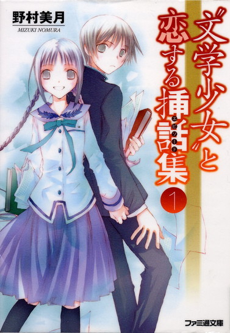
柔道一筋、人呼んで「炎の闘牛」。そんな彼が恋をした！清楚で可憐な大和撫子、その名は......『〝文学少女〟と恋する牛魔王』、「このことは内密に」待望の入部希望者が漏らした呟きには、何やら不穏な気配が!?『〝文学少女〟と革命する労働者』ほか、遠子のクラスメイトとの交流や、美羽＆芥川のその後など、ほろ苦く甘い、極上のエピソードが盛りだくさん！物語を食べちゃうくらい深く愛する〝文学少女〟天野遠子と彼女を取り巻く人々の、恋する挿話集第１弾!!
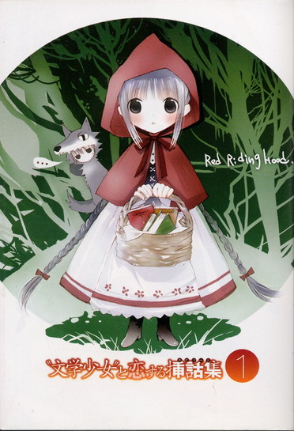
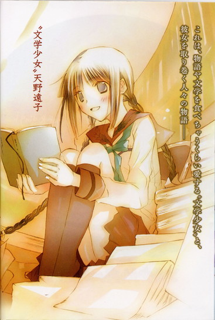
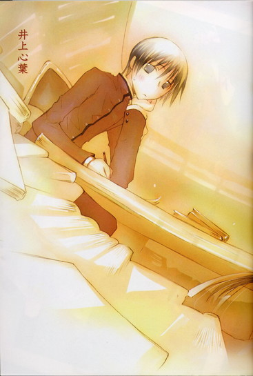
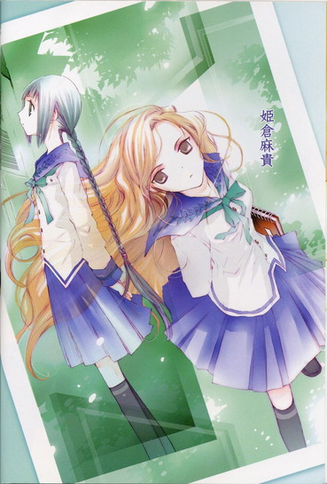
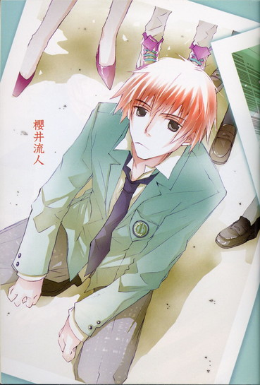
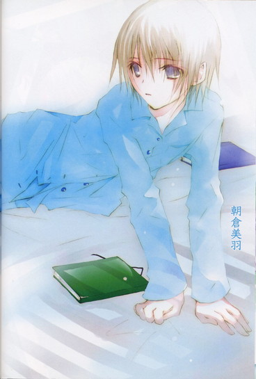
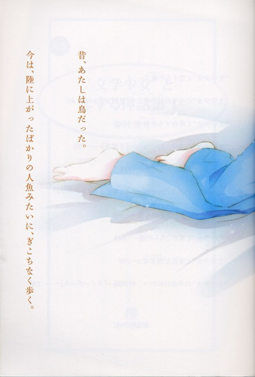
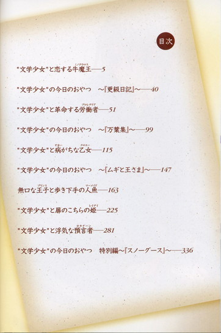
目次
〝文学少女〟と恋する牛魔王──
〝文学少女〟の今日のおやつ ～『更級日記』～──
〝文学少女〟と革命する労働者──
〝文学少女〟の今日のおやつ ～『万葉集』～──
〝文学少女〟と病がちな乙女──
〝文学少女〟の今日のおやつ ～『ムギと王さま』～──
無口な王子と歩き下手な人魚──
〝文学少女〟と扉のこちらの姫──
〝文学少女〟と浮気な預言者──
〝文学少女〟の今日のおやつ 特別編～「スノーグース」～──
〝文学少女〟と恋する挿話集１
野村美月
もう恋はしないと誓ったぼくが、二度目の恋に気づいたのは、高校二年生の終わりだった。
それまで彼女は、いつもぼくの側にいて、すみれの花のように優しく微笑んでいてくれた。
あの夕暮れのまばゆい金色の光に満ちた小さな部屋で、いつも幸せそうに本のページをめくり、ぼくにたくさんの物語を聞かせてくれた。
彼女の瞳が甘く輝きながら、ぼくを見つめるとき。
彼女の白い手が、ぼくの手を勇気づけるようにそっと握りしめるとき。
桜色の唇がやわらかくほころび、ぼくにささやかな、けれど大切な言葉をささやくとき。
何故、体がむずむずして落ち着かない気持ちになるのか。何故、胸の鼓動が速くなるのか。何故、あたたかなものが、込み上げてくるのか。
離れていると、こんなにも切なくて、あいたくて、息が苦しくなるのか。
彼女が優しく微笑んで、ぼくに背中を向けたあの日、これは恋なのだと知った。
いつからかわからないけれど、きっともうずっと以前から、おかしくもあたたかい日々の中で、彼女に対する様々なものが芽吹いていたのだ。
|
そう、たとえばあの日も──。 |
〝文学少女〟と恋する牛魔王
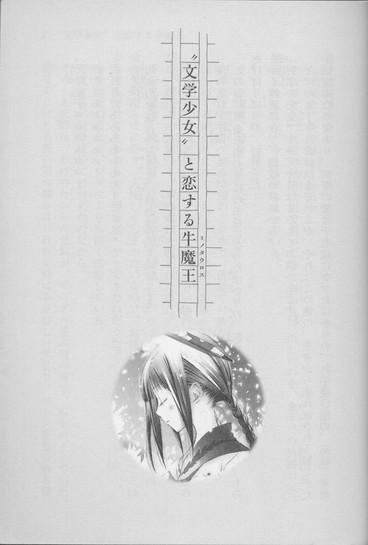
「天野遠子ぉぉぉぉぉっ！
好きだぁぁぁぁぁぁ！
大好きだぁああああああ！」
灼熱の夕暮れの河原に、魂の叫びがこだまする。
◇ ◇ ◇
俺の名は、牛園たくみ。
この春、聖条学園柔道部の主将になったばかりの、筋骨隆々、眉毛びしびし、もみあげばりばりの、好男子だ！
よく練習試合で、他校の教師から、
「引率の先生ですか。今日はよろしくお願いします」
と、バカ丁寧にお辞儀をされるが、それはこの俺の、全身から垂れ流される冒しがたい威厳のためであり、実際の俺は十七歳になったばかりの、牡牛座Ｏ型の、高校二年生男子に間違いない。
人は俺を、炎の闘牛と呼ぶ。
中三のとき、近所の児童公園で飼っていた猪が逃げ出したのを、素手での格闘の末、捕獲したことは、今も伝説となっている。
そんな俺は、恋をしていた。
相手は天野遠子。聖条学園の二年生で、清楚で可憐な大和撫子だ。
はじめて天野を見たのは、ちょうど一年前、高校一年生の初夏だった。
あの日俺は、図書室にいた。そんな辛気くさい場所、一年に一度訪れるかどうかなのだが、柔道部の先輩から、本の返却を頼まれたのだ。
その先輩は、俺が練習中に力の加減を間違えて、うっかりぶん投げてしまったため、全身包帯だらけになり、入院してしまった。なので、お詫びのため、俺のできることはなんでもさせてもらおうと、図書室へやってきたのだった。
今ではそのことを、マグマよりも深く感謝している。
何故なら、天野遠子に出会えたのだから。
そのとき天野は、わけのわからん全集が、ずらずら並ぶ棚の前で、本をめくっていた。
腰までこぼれる長い三つ編みは、日本女性にふさわしい黒髪で、ページを見つめる優しげな瞳や、桜色のやわらかな唇や、長い手足やほっそりした腰つきに、俺はいきなり見惚れてしまった。
誰だっ！
あれは誰だっ！
誰なんだぁぁぁぁっ！
頭の中で寺の鐘がゴンゴンと鳴り響き、心臓が鼓動を速め、体中の血液が沸騰し、耳から湯気を吹き出しそうなほどの衝撃だった。
そう、あの瞬間、俺は恋に落ちたのだ。
あれ以来、校内で頻繁に、天野を見かけるようになった。
楚々とした足どりで、廊下を歩く天野。
下駄箱の前で、しとやかに腰をかがめ、靴を履き替える天野。
鈴を振ったような澄んだ声で、友達と楽しそうに語らう天野。
夏服の天野。
冬服の天野。
体操着の天野。
スクール水着の天野。
どの天野も、めまいがするほど素晴らしい。
特に、調理実習中のエプロン姿の天野を、窓からひそかにのぞき見たときなど、あまりの可憐さに、天野との新婚生活を想像し、鼻血を吹いたほどだ。
だが、哀しいことに、天野は俺の存在を知らない。
クラスも、委員会も、部活も別々の、二人の間には、なんの接点もないのだ。
ならば近づきになろうと、この一年、何度も接触を試みたが、すべて失敗に終わっている。天野は一人でいるとき、大抵本を読んでおり、俺がどれだけ前を横切ろうと、わざとらしく、えへんと咳払いをしようと、まったく、ページから目を離さないのだった。
あーその......こういうのを、なんというのだったかな？
本の虫。
いや、文学少女......。
そう、文学少女だ！
天野は、骨の髄まで文学少女なのだ。
登下校の間も、片時も本を手放さず、夢中でページをめくりながら歩く天野に、スルーされること百余回。
ある日、天野が本を読んでいないときを見計らい、彼女が進むその方向に、巌のようにどど────んと立ちふさがってみたのだが──。
長い三つ編みや、白桃のように小さな顔を目の前にしたとたん、ケツがむずがゆくなり、汗が滝のように、だくだくこぼれてきて、胃がきりきりと捻れ、背中を向けて、ダッシュで逃げ出してしまったのだった。
猪さえも倒した、最強の男、牛園たくみが！
情けないっ！ 情けなさすぎる！
そんな気持ちを、俺は燃えるような夕日に向かって叫ぶ。
「うぉぉぉぉぉ！ 天野ぉぉぉぉぉぉ！
好きだぁぁぁ！ 大好きだぁぁぁぁ！」
そうして、写真部の連中から購入した天野のベストショットを切なく眺めては、自分を慰めるのだった。
きっと今に、天野も、俺の存在に気づいてくれるはずだ。
柔道の試合で、投げて投げて投げまくり、勝って勝って勝ちまくれば、俺の勇名は、彼女の耳にも届くだろう。
──わぁ、柔道部の牛園さんですか？ 先日の試合の地獄車、感動して涙が止まりませんでした！大ファンなんです！握手してください。
そんな風に、天野のほうから頬を恥じらいのピンク色に染め、真っ白な手を差し出してくれる日が、必ず来るっ。
そうだ！ そうだとも！
幸い、天野に片想いしている他の男どもも、片っ端から天野にスルーされ、すごすご引き下がっていたので、俺は胸をなで下ろしていたのだ。
ところが！
二年生に進級した頃から、井上心葉という一年ボーズが、やたらと天野のそばで目につくようになった。
このクソガキは、女のようなめそめそした顔をしており、絞め技をかけたら、骨がぼきぼき折れてしまいそうな貧弱なやつなのだが、なんとっ！いつの間にか、天野のいる文芸部に入部し、ちゃっかり天野と、先輩後輩の仲になっていたのだった。
くぅぅぅぅぅぅ～～～～。
姑息にも同じ部に入り、天野に取り入るとは──そうか、その手があったか。
しかし、柔道部の主将である俺が、柔の道を捨て、文芸部なんぞに入部するわけにはいかない。
天野は、後輩ができたのが嬉しいらしく、井上のことを、「心葉くん」「心葉くん」と甘い声で呼び、放課後になると、わざわざ井上の教室まで、迎えに行っているらしい。
まるで、母親に送り迎えされる園児のように、天野に手を引かれて、文芸部へゆく井上の姿を、一度ならず二度、三度と目撃した。
くぉ～～～～っ、俺の天野と、手っ、手なんぞ繋いでっっっ！
許せんっっっ！
廊下の角に身を潜め、ぎりぎりと歯ぎしりしながら睨みつけ、そのまま文芸部の部室までついてゆき、ドアに耳をあて中の様子をこっそりうかがうと、天野の声が聞こえた。
「ねぇ、いいでしょう？ お願い、心葉くん」
な、なにを、お願いしてるんだ。
「ねぇ、早く早く～」
とろけるような愛らしい声。
椅子を、がたがたと揺らす音。
うぉぉぉぉぉっ、ドアの向こうでなにが起こってるんだ～～～～～！！！！
頭に血が上り、もっとよく聞こうと、ドアに耳をぐいぐい押しつけていたところ、俺を捜しに来た柔道部の後輩に、見つかってしまった。
「あっ、主将！ なにしてるんですか。稽古に行きましょう」
「う、うむっ。ちょっとドアと、組み手をしていてな」
慌てて厳めしい顔で、背負い投げのポーズを決め、俺は仕方なくドアから離れた。
また別の日、同じドアに耳を押しあてたら、今度は、ピリピリ、かさこそと、紙を破るような音（？）がし、天野のすすり泣きが聞こえた。
「ぐす......ひどいわ、心葉くん。先輩のこと、いつもいじめて......こんな......とんでもないものを食べさせて。お、鬼、悪魔」
うおおおおおおおっっっ！
俺の天野に、なにをしたんだぁぁぁ！
なにを、食べさせたんだぁぁぁぁ！
とんでもないものって、なんなんだぁ！
井上ぇ～～～～～～～～っ！
殺す～～～～～～～～！
ドアを蹴破ろうとしたとき、また柔道部の後輩がやってきた。
「主将～、いつまで休憩してるんですか。みんな待ってるんですから、早く戻ってください」
「いやっ、俺は、天野を悪魔の後輩から救わなければ」
「なに言ってるんですか」
もめていたら、天野がドアを開けて、晴れ晴れとした顔で出てきた。
「ごちそうさまでした、心葉くん。明日も、ちゃんと部活へ来てね」
小鳥のさえずりのような声で言い、俺と後輩の横を、はずむような足どりで去っていったのだった。
この翌日も天野は、
「部活の時間よ、心葉くん」
と井上の手を引いて、楽しそうに廊下を歩いていた。
「恥ずかしいから、手を繋ぐのやめてください」
井上が生意気にも、そんなことを言うと、長い睫毛をそっと上げ、不安そうに井上を見上げる。
「じゃあ、手をはなしても、この前みたいに逃げないでね」
「あのとき、校内中を追いかけ回されて懲りました。しかも、途中で息切らして、コケるし」
「わたしは文学少女だから、病弱なのよ」
「ただの運動不足じゃないですか」
「あっ、ひど～い。先輩への気遣いが足りな～い。もぉっ、やっぱり、絶対はなさないもん」
「よしてください」
なにやら仲良さげにじゃれあっているのを、俺は壁に両手の爪をがりがり立て、睨んでいたのだった。
ええい、天野からはなれろ、井上心葉！
一年ボーズの分際で、俺の天野と校内で堂々といちゃついて、許せんっ、許せんっ、許せ～～～～ん！
◇ ◇ ◇
「うおおおおおおおお！ 死なす！
井上心葉～～～～～～～～～～！」
そして俺は今日も、河原のど真ん中で、天野への愛と井上への怨念を叫んでいるのだった。
「死なすっ！
死なすっ！
死なす～～～～！」
井上は天野と、つきあっているのだろうか？もう、あんなことやこんなことを、してしまったのだろうか？
二人の間には、秘密を共有しているような、親密な空気が漂っているように思える。
「許せんっっっ！ 井上心葉～～～～！」
夕日に向かって蹴りを入れたとき、背中で声がした。
「人の名前を、河原で連呼するのは、やめてください」
振り返った俺の目の前に、ちょっぴり恥ずかしそうな顔で立っていたのは、な、なんと、井上本人だった。
「うおぉぉ、い、井上っ」
素人のくせに俺のバックをとるとは、生意気な。
とっさにのけぞったあと、これ以上後れをとってなるものかと、眉をギン！とつり上げ、身構える。
「勝負をしに来たのか？ 良い度胸だ。俺はいつでも受けて立つぞ」
「違います。ぼくが、柔道部の牛園さんに勝てるわけないでしょう」
おや？ 井上のくせに、なかなか殊勝なことを言うではないか。
「牛園さんは、遠子先輩のことが好きなんですよね？」
「な！ ななななななななにをいきなり言い出すんだ！」
俺は激しくうろたえた。
「だって、いつも真っ赤な顔で遠子先輩を見ているし、ぼくのことを睨んでいるし」
「うっ、気づいていたのか」
こいつ、侮れん！
井上が肩をすくめ、小声でぼそぼそとつぶやく。
「てゆーか、あんなにあからさまに顔に出されたら、普通は気づきます。気づかないのは、遠子先輩くらいです。あの人は、自分のことには、とことん鈍感だから」
むっ。なんだ、そのいかにも天野のことをわかっているという口ぶりは。やっぱり気に食わん。
「それで？ 俺が天野に惚れていると知っていて、なにをしに来たんだ」
戦闘態勢に入ろうとする俺に、井上は真面目な顔で、さらりと言った。
「ぼくが、牛園さんと遠子先輩の仲を取り持ちます」
「なに!?」
目をむく俺に、今度はにっこり笑ってみせる。
「おかしな誤解をされて、殺すの死なすの叫ばれるのは、ぼくも嫌ですから。
ぼくは無理矢理、遠子先輩に文芸部に引っ張り込まれて、おやつの作文を書かされているだけで、彼氏でもなんでもありませんし、いいかげん放っておいてほしいんです。遠子先輩も、代わりのおやつ係が見つかれば、ぼくにかまわなくなるでしょうから、ちょうどいいです」
「？ ？ おやつ係ってなんだ？」
「それは、今は気にする必要はありません。とりあえず、遠子先輩とうまくいく方法を、ぼくが伝授します」
「おお！ そうか！ 井上っ！ おまえ実は、すっっっっっごく、いいやつだったんだな！」
大胸筋が震えるほど感動し、井上の手を、がしっと握りしめると、井上はちょっぴり引きつった顔で言ったのだった。
「なら、明日の昼休みに、図書室へ来てください」
◇ ◇ ◇
翌日、井上は先に閲覧室のテーブルについて、待っていた。
あらためて見ると、髪がさらさらでお肌がすべすべだ。
うちの部には、いないタイプだな。
敵ではないとわかったとたん、可愛らしく思えてくるから不思議だ。
井上は俺に気づくと、「こんにちは」と礼儀正しく挨拶し、やわらかく笑った。
俺が正面の席に、どすんと腰かけると、ノートみたいになっている原稿用紙とシャーペンを差し出し、話しはじめた。
「これから牛園さんに『三題噺』を書いてもらいます。『三題噺』、ご存知ですか？」
「いいや」
「落語なんかで、三つのお題をもとに即興で噺を作ることです。まず、ぼくが三つ単語を言いますから、それを全部入れて、物語を書いてみてください」
俺は首をひねった。
「むぅ？ その三題なんとかと天野のことと、どう関係があるんだ？」
井上は、微笑んだまま答えた。
「遠子先輩は、甘い物語が、食べてしまいたいほど大好きなんです。だから牛園さんが甘い話を書いてプレゼントしてあげたら、きっと大喜びして、牛園さんのことを好きになっちゃいますよ」
「ほ、本当か！」
「ええ。おかしな話ばっかり書く後輩よりずっとね」
「よぉし！ よくわからんが、書くぞぉ」
「じゃあ、〝自転車〟〝ハンカチ〟〝ひな祭り〟で。慣れてきたら四十分から五十分で、原稿用紙二、三枚程度にまとめるのが好ましいですけど、今日は初日ですから、時間がかかってもかまいません。明日までに書いてきて......って、聞いてます？牛園さん？」
俺はＨＢのシャーペンを握りしめ、猛然と原稿用紙に文字を書き連ねていた。
「できたぁ！」
「ええっ、まだ、三十秒しか──てか、早すぎ！」
「わはははははは、勝負は先手必勝、スピード命だ！」
胸をのけぞらせ高笑いしながら差し出した原稿を、井上が受け取り、読みはじめる。
その顔が、しだいに曇ってゆく。
『ハンカチで、自転車つるりん、あとのひな祭り』
「どうだ？ ハンカチで自転車がすべって、事故って、あとの祭りという意味だ」
「ダメです」
「なにぃ！」
「ダジャレじゃなくて、ちゃんとストーリーを書いてください」
「うむむ......」
「遠子先輩は恋愛小説が好きですから、そういうエピソードを入れると喜びますよ」
「よし、任せろ！」
放課後、俺は井上に、原稿用紙三枚にわたって、ぎっちりみっちりびっちり書き込んだ、ラブラブラブストーリーを渡した。
「これでどうだ！」
井上は、なにやら沈痛なおももちで、原稿用紙をめくっている。
『俺は、朝起きた。俺は、便所行った。俺は、快便した。俺は、顔洗った。俺は、鼻かんだ、俺は、歯磨いた。俺は、納豆食った──（※以下延々）──俺は、ハンカチ持った。──俺は、自転車つるりんした。──俺は、彼女とハッピッピした。──ひな祭り、忘れた』
「うーん......」
眉を下げ唸っていたが、しまいに頭を抱えてしまった。そこから上目遣いに、ちらりと見上げて言う。
「基本的なことですけど、文頭は一マス空けてください。改行もある程度してあげないと、文がつまって読みにくいです。〝てにをは〟も、もうちょっと気を配ってあげたほうが......。文末が毎回〝た〟で終わるのも、どうかと......。肝心の内容は......その......」
またうなだれて、口の中でもごもごとつぶやき、
「えーと、とりあえず、これを参考にしてみてください」
一冊の本を差し出した。
「『はつ恋』？ ツルリンゲネフ？ ハツが恋をするのか？割烹料理店の、板前物語か？」
「ツルリンではなく、ツルゲーネフです。それと、魚のハツではなくて、初めての恋の初恋です」
「おお！ そうか！ そっちの恋か！」
初恋。
胸に迫る、美しい響きだ。
「薄いのですぐ読めますから。こんな感じで書いてもらえば、遠子先輩も牛園さんに、夢中になっちゃうと思いますよ」
「そうかそうか、よぉし！ 読むぞ～～～～～」
稽古の合間に、俺は早速ページをめくった。
周りで、ざわめきが起こる。
「主将が、本を読んでいる！」
「『はつ恋』だって！ なにがあったんだ？」
ひそひそ。
どよどよ。
おや？ なにやら耳がこそばゆいな。
親指で、耳穴をぽりぽりほじくりながら、読書を続ける。
と、いきなり、津波のような眠気が襲ってきた。
「ぐー」
「わっ！ 主将！」
「しっかりしてください！ 主将！」
気がつくと、部員たちに肩をつかまれ、揺さぶられていた。
「ん？ 俺は今、眠っていたのか？」
「突然、がくんと倒れたので、びっくりしましたよ～」
「すまん。だが、読書を続けるので、かまわんでくれ」
そう言って、またページをめくると、
「ぐー」
「主将ぉぉぉぉ！」
何故か、ページをめくるごとに、強烈な眠気が押し寄せ、頭を強打されたかのように、意識が真っ白になるのだった。
◇ ◇ ◇
「どうやら、俺は、本を一度に一ページ以上読むことのできない体質らしい」
翌日の昼休み。
図書室で打ち明けると、井上は目を丸くし声を詰まらせた。
「そ......それって、現国の試験のときとか、どうしてるんですか」
「どうもしない。潔く赤点を取得するだけだ」
「潔く......取得......。あのでもっ、入試は......。うち、結構、偏差値高かったはずですけど......」
「受けてない。俺は、見ての通りのスポーツ推薦だ。これまですべての教科は、筋肉で補ってきた」
きっぱりはっきり告げると、井上は感銘を受けたのか、絶句してしまった。
「まぁ、それでも、天野のためなので、三十回ほど休憩をはさみながら、三十ページほど読んでみた」
「......お疲れ様です」
井上が深々と頭を下げ、「どうでしたか？」と力なく尋ねる。
「うむ。いきなり、セルセルなんとかビッチと、ヴラヴラなんとかビッチが出てきてな、ヴラヴラが、十六のときの恋バナをはじめるのだが......、井上よ、ロシア人の名前は、みんなこんなにわかりにくいのか？」
「いや......それは......」
「公園の名前が、また舌を噛みそうでな、ネスクーチヌィとか言うんだ」
「どうして、公園の名前だけ、正確なんですか」
「あんまり珍妙で、何度も口に出して練習したからだ」
「しないでください。早口言葉じゃないんですから」
「おおそうだ！ 他にも、なんとかキナキナとかなんとかフェチとか、ジダンダとかいう女がいたな」
「ジダンダじゃなくて、ジナイーダです。せめて、ヒロインの名前くらいは覚えてくださいよ」
泣きそうな顔で訴えたあと、井上が額に手をあてる。
「......すみません。牛園さんの体質までは、考えていませんでした。それじゃあ、読み終わるまでに、だいぶ時間がかかりそうなので、てっとりばやくいきましょう」
「おお、なにか、秘策があるのか！」
盛り上がる俺に、井上はどこか投げやりな様子で、話しはじめたのだった。
◇ ◇ ◇
『遠子先輩が目の前に来たら、本を落としてください』
井上の指示は、これだけだった。
正直、よくわからんかったが、翌日の昼休み、俺は『はつ恋』を胸に抱き、廊下で待ち伏せをした。
来たっ。天野だ！
腰まで届くしなやかな三つ編み。ほっそりした手足、楚々とした物腰。
ああ、今日も、なんと清らかで美し～。
俺の傍らを、静かに通り過ぎてゆく天野に、ぼーっと見惚れてしまい、はっとする。
いかん！ 天野が行ってしまう！
慌てて手を開き、『はつ恋』を落とす。
とたんに、天野が振り返る。
今まで一度も俺に関心を示すことのなかった、あの天野が！
俺の目の前で、ぴたりと立ち止まり、俺の足元に視線を注ぎ、細い腰をかがめてしゃがみ込み、白魚のような手で、俺の本を大事そうに拾い上げた！
「これ、あなたの本？」
鈴を振ったような可憐な声で、尋ねる天野。知的な黒い瞳が、優しく好意的に、俺を見つめている。
「そ、そうだっ」
心臓がばくばくと荒れ狂い、汗が吹き出してきて、そう答えるのが精一杯だった。
天野が、おだやかに微笑む。
「ツルゲーネフの『はつ恋』ね。素敵だわ」
す、すすすすす素敵と言ったぞ！
天野が俺のことを、素敵って！
ますます頭が沸騰し、鼻血を吹いて倒れそうな俺に、天野は本を、ぎゅっと胸に抱え、唇をほころばせ、瞳をきらきら輝かせて、親しげに話しはじめた。
「イヴァン・セルゲーヴィチ・ツルゲーネフは、ロシアの作家よ。母親は広大な領地を所有する女地主、父親は彼女より六歳年下の、没落貴族の伊達男だったわ。
そんな二人の間に、ツルゲーネフは、西暦一八一八年、次男として生まれるの。
一八六〇年に発表された『はつ恋』は、彼の中期の傑作で、主人公ヴラジミールの両親に、彼の両親を重ねることができるわ。そんなことから、ツルゲーネフの自伝的な作品とも言われているのよ」
ああ、天野の声が、俺の耳をこしょこしょとくすぐっている。
ああ、ああ、なんて楽しそうなんだ、天野。
「そう、『はつ恋』はまるで、カラメルソースをたっぷりかけた、焼き林檎のようね！
短い物語の中に、人を好きになる歓びや、ときめきや、切なさが、ぎゅっと凝縮されていて、カラメルのようにほろ苦くて、焼き林檎のように熱くて、噛みしめると甘酸っぱい汁が、バターとラム酒の香りとともに、こぼれ出してくるのよ。
物語は、主人公のヴラジミールが、過去を振り返る形式で語られるわ。
十六歳のとき、ヴラジミールは、彼の屋敷の近くの別荘にやってきた年上の令嬢ジナイーダに、恋をするの。
ジナイーダは、無邪気で奔放で、いつも大勢の取り巻きに囲まれて、女王のように振舞っているわ。
そんなジナイーダに惹かれてゆくヴラジミールの様子が、たまらなく可愛くて、どきどきしてしまうの！
ジナイーダにからかわれて、怒ったり、ムキになったり、がっかりしたり、そんな思春期の少年の純粋な気持ちが、うっとりするような瑞々しい文章で綴られてゆくのよ。
ヴラジミールと、お父さんの関係が、また切なくていいの！お父さんのことを気にしていて、ひそかに愛してほしいと願っているところなんて、まるで子犬みたいで、胸がキュンとしてしまうわ。
お父さんへの憧れ、ジナイーダへの憧れ、それがすべて砕かれたときの、痛みと哀しみ......。林檎にかけた苦いカラメルソースが、冷えて飴状になり、それをパリパリと小さな音を立てて囓るよう──胸の奥に甘いやるせなさが、どんどん溜まってゆくの。けど、そこがとっても美味しいのよっ」
天野が目を閉じ、感極まったように、本をぎゅ────っと胸に抱きしめる。
さっきまで、俺の胸に押しあてられていた本が、あ、天野の、天野の、むむむむ胸に！
天野の胸は、非常にささやかで、つるりんだ。
けどそんなこと問題じゃない！
いや、むしろ、そこがいい！
美少女は胸も、しとやかに慎ましくあるべきだ！
いやいや、なにを考えているんだ、俺はぁあああっ。
「ああ、後半に向かって加速してゆく切なさに、ときめきが止まらないわ。まさに、青春の一冊ね」
俺も、心臓の高鳴りが止まらない。
そうか、これが青春か！
「あ、天野......っ」
俺は夢中で、声を絞り出した。
今なら言える。
いや、熱い血潮が全身を駆けめぐり、言わずにいられない。
「す、すすす、好きだぁああああ！」
おおっ！ ついに告白したぞ。
天野は、名残惜しそうに『はつ恋』を両手で俺のほうへ返し、とびきり可愛らしく──そう、まるで春に咲く花のように、にっこりと、笑った。
「ええ、わたしも、大好きっ」
◇ ◇ ◇
夢じゃなかろうか。
天野が、天野が、大好きと言ってくれた。
天野も俺のことが、大好きって。
「やった！ やったぞ！ 井上！」
次の休み時間、俺は井上のクラスに突進し、目を丸くする井上を抱き上げ、くるくる回った。
「う、牛園さん......っ！」
「わはははははは！ 作戦は大成功だ！ おまえのおかげだ、井上！」
「そ、それはよかったです。だから、はなしてください！回らないでください！」
「わはははははは！」
俺は、ますますくるくるし、井上の頬に顔を、わしわし押しつけながら叫んだ。
「井上！ 俺は俺の心のど真ん中に、恩人であるおまえの銅像を建て、生涯あがめ奉るぞぉぉぉ！ひゃっほー！俺たちは両想いだ～～～～！」
「お願いですから、銅像とか建てないでください。両想いとか、叫ばないでください！はなしてくださ～～～～い」
井上は、真っ赤な顔で恥じらっていた。
ふっ、謙虚なやつめ。
......けれど、両想いになった男女というのは、なにをすればよいのだろう。
とりあえず、一緒に帰るところからはじめるべきだろうか？
放課後。天野のクラスへ、そわそわと足を運ぶ。
教室の後ろの入り口から、そっと中をのぞき見ると、おお、いた、天野だ。鞄に教科書をつめて、帰り支度をしている。
うつむいた横顔にこぼれる黒い三つ編みが愛らしい。
「あま──」
声をかけようとしたとき、天野がぱっと顔を上げ、俺のほうを見た。
おおっ！ 愛のテレパシーが通じたのか！
天野は、抑えられない愛情のこもった花のような微笑みを浮かべ──は、しなかった。
それどころか、頬をぷんとふくらませ、眉を吊り上げ、抑えきれない怨みのこもった、憎らしそうな目で、睨んできた。
俺は激しく動揺した。
何故だっ!?
何故、そんな険しい目で、俺を見る？
まるで、ハブを見つめるマングースのような、クマを見つめるマタギのような、武蔵を見つめる小次郎のような、闘志あふれる眼差しで。
ひょっとして、俺は天野に嫌われているのか？何故？昼休みに両想いになったばかりなのに。
何故、急に、大嫌いオーラを発散させている？
天野は、今にも尻尾を逆立て、ぐるぐる唸り声をあげて飛びかかってきそうだ。
汗がどっと吹き出し、俺はたまらず駆け出した。
「井上ぇぇぇぇぇぇ！！！！」
廊下を歩いていた井上をつかまえ、校舎の裏に引っ張ってゆく。
「どういうことだ井上！ 何故、俺が天野に睨まれなきゃならんのだぁぁぁっ！」
「そ、そんなこと言われても、ぼくにもなにがなんだか......うわっ！」
井上の襟首をつかみ上げ、力のかぎり揺さぶる。
「おまえが、天野になにか言ったんじゃないのか！ええい！どうなんだぁ！」
井上が、宙に浮いた足をばたばたさせて、
「ほ、ぼくは、なにもしてないですよぉ」
と叫んだときだ。
「心葉くんをはなしなさい！ この牛魔王！」
振り返ると、頬をふくらませ、目を吊り上げた天野が、炎を背負って立っていた。
ななななな何故、天野がここに？
そ、それに、今、牛魔王って......？
驚きのあまり手から力が抜け、井上がどさっと草の上に落ちる。
「心葉くん！」
天野が俺を突き飛ばして井上に駆け寄り、地面に膝をついて、心配そうに世話を焼く。
「大丈夫？ 心葉くん？ ああ、襟元のボタンが千切れているわ。可哀想に。心葉くんが、牛魔王に引きずられていったって聞いて、急いで助けにきたのよ」
井上は、困ったような顔をしている。
どういうことだ？
一体なにが起こっているんだ？
天野は、井上を背中にかばうようにして立ち上がると、顎をそらし、不倶戴天の敵を見る目で俺を睨んだ。
「あなたが心葉くんを狙っていたことを、わたしが知らないとでも思っていたの？心葉くんのクラスで、くるくる回っていたのを、しっかり目撃させてもらったわ。こんな時期に、新入生の勧誘をするなんて卑怯よ。
心葉くんは文芸部のものよ！ 柔道部なんかには、絶対に渡さないわ！」
心葉くんは、わたしのものよ！ という声が、頭の中でガンガンとリフレインする。
「何故だ！ 天野遠子っ！ 大好きと言ったのは嘘だったのか!?」
叫ぶ俺に、天野が胸の前で腕を組み、断言する。
「ええ、ツルゲーネフも『はつ恋』も大好きよ！けど、いくら好物が同じでも、わたしの大事なおやつ係に手を出すのは許せないわ！」
好物？ ツルリンゲネフ？ それに、また言った！
わたしの大事な心葉くんと──！
「柔道部には、可愛い一年生がたくさんいるじゃない。文芸部には、心葉くんしかいないんだから、とっちゃダメぇ！
そうよ、軟弱な心葉くんには、柔道部より、文芸部のほうが、ずぅぅぅぅぅっと合ってるんだから！心葉くんと両想いなのは、文芸部のほうよ！
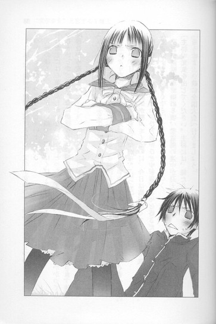
これ以上、強引な勧誘を続けるなら、文学少女のわたしが、受けて立つわ！さぁ！どっからでもかかってらっしゃい！」
天野の後ろで、井上が赤い顔で、口をぱくぱくさせている。
わたしには心葉くんしかいないとか、とっちゃダメとか、両想いだとか、かかってらっしゃいとか、天野がなにか言うたび、胸を巨大な包丁で、ぐさぐさ突き刺され、俺は泣きながら走り去った。
「うわああああああ～～～～～！」
ぐすっ、うぐっ、ひっく、えぐえぐっ、ぐすっ、ずるるるるっ、ひっく、ぐすん......。
河原で、目の幅サイズの涙を流しながら、『はつ恋』の続きを読む。
いつも一ページで眠気が襲ってくるのに、今日は胸が痛くて、ちっとも眠くならない。
ひっく、ぐすっ、ひどい、ひどい、ひどすぎる。ずっと好きだったのに。牛魔王だなんて。ぐすっ、ひっく......。
夕日が河原を赤く染める頃、柔道部の連中が迎えに来た。
「主将、元気を出してください。主将には、俺たちがいるじゃないですか」
「そうすよ、一緒に全国大会へ行きましょう」
「お、おまえたち～～～～！」
「主将ぉぉぉぉ！」
部員たちが次々俺に抱きついてくる。
俺もだくだく泣きながら、そいつらにしがみつく。
そうだ、俺には柔道があるし、素晴らしい仲間たちがいるじゃないか！
天野なんか、天野なんかぁぁぁ！
それでも、涙の向こうにかすむ夕日は、焦げすぎた焼き林檎のように、ほろ苦かった。
しょっぱい涙に濡れながら、仲間とともに明日への誓いをする俺の胸に、さっき読んだばかりの、『はつ恋』の言葉が、ひっそりと浮かぶのだった。
『信じて下さい、ジナイーダ・アレクサンドロヴナ、あなたがたとえ、どんなことをなさろうと、たとえどんなに僕がいじめられたろうと、僕は一生涯あなたを愛します、崇拝します』
〝文学少女〟の今日のおやつ ～『更級日記』～
こんな遠子先輩を見た。
五月のゴールデンウイーク明け。
若葉の香る朝の通学路を、学園の制服を着た女生徒が、とことこ歩いていた。
糸杉みたいな、すとんとした体つき。
腰まである長い長い三つ編みが、猫の尻尾みたいにひょこひょこ揺れている。
白いうなじが、儚くうなだれているのは、決して落ち込んでいるわけではなく、手にした本のページを、夢中でめくっているからだろう。
あ、遠子先輩だ。
また歩きながら本を読んでいる。
危なくないのかな？ あれ？
足元や前は、ちゃんと見えているのだろうか？
以前、文芸部の部室に、靴下が干してあったことがある。クリスマスにはだいぶ早いけれど、一体これは？と眺めていたら、後ろで、ぺたらんぺたらんと足音がし、
「よかったぁ。乾いているわ！ ヘッセの『シッダールタ』を読んでたら、つい夢中になって水溜まりにはまっちゃったの。おひさまが出てきてよかったぁ。きっとお釈迦様のお導きね」
と何がどう導かれたのかわからないことを満面の笑顔で言いきった。
そうしてパイプ椅子に腰かけ、ゆるゆるの上履きを、ぽとんと脱ぐと、ぼくの目の前で、せっせと靴下を履きはじめたのだった。
雲ひとつない五月晴れの今朝、道路に水溜まりはない。
遠子先輩は、快調に読書を続けている。
下手に声をかけて、朝から蘊蓄を聞かされても困るので、適当な距離を保ったまま後ろを歩いていると、
ふいに、遠子先輩が立ち止まった。
手に開いた文庫本を持ったまま、道路の右端をじーっと見つめている。
そこはゴミの集積所で、新聞紙や雑誌、空き缶やペットボトルなどの資源ゴミが置いてある。
そのまま、一秒、二秒......。
足を止めたまま、ゴミの山を見つめていたが、やがて、こくり、とうなずくと、そちらのほうへ、ふらふら歩いていった。
？ ？ ？
ゴミの前まで来ると、膝を折ってしゃがみ込む。
そうして、実に嬉しそうに唇をほころばせ、
にっこりと、
可愛らしく、
無邪気に、
笑ったのだった。
その、一見可憐な〝にっこり〟に、不吉なものを感じ、背筋がぞくっとした。
見なかったことにしよう。
これまでの例からそう判断し、くるりと横を向き、脇道にそれたのだった。
◇ ◇ ◇
放課後はいつものように、文芸部へ出かける。
校舎の西の隅にある古い本に占拠された小さな部屋は、何故だかペンキ臭かった。
ゴミ箱に、赤い染みが飛び散った新聞紙が、まるめて捨ててある。
これは一体......？
「さぁ、心葉くん。今日のお題は、〝笹舟〟〝恋文〟〝棒高跳び〟よ！うんとロマンチックな甘いお話を書いてね。制限時間は、きっかり五十分。はい、すたーと！」
遠子先輩が、銀色のストップウォッチをかちりと鳴らす。
ぼくが原稿用紙にＨＢのシャーペンで文字を綴る間、遠子先輩は窓際のパイプ椅子に足を載せてお行儀悪く腰かけ、読みかけの文庫のページをめくる。
そうして、愛おしそうに指でページを端から、ぴりっと千切っては口に運ぶ。
遠子先輩は物語を食べる妖怪なのだ。
紙に書かれた文字を密かな音を立てて咀嚼し、幸せいっぱいの表情で飲み込み、蘊蓄を垂れる。
「あー、美味しい！ 『更級日記』は、おひな祭りにいただく茶巾寿司の味ね。
上品なダシのきいたしいたけや、ふっくら焼き上げた穴子、香ばしい白ごま、栗、そんな具だくさんの酢飯を、ほんのり甘い薄焼き卵が、可憐に包んでいるのよ。
平安時代に書かれた作品なのに、すごく身近で、可愛らしくて、胸がキュンとしてしまって、なのに読み進めば進むほど、お酢の味が強くなっていって、最後はしみじみとした無常観に胸がいっぱいになってしまうのよ。
作者は菅原孝標女。今から千年近くも前に生まれた貴族のお嬢様よ。彼女のご先祖様は、学問の神様と言われている菅原道真で、伯母さんは『蜻蛉日記』のあの藤原道綱母なのよ。心葉くんは、菅原道真を知っている？」
ぼくは樫の木の机で、原稿用紙にさらさらと三題噺を書きながら答えた。
「政治闘争に敗れて太宰府に左遷されて、未練たらたらの歌をうたって、そのあと怨霊になった人ですよね」
「え、や......その、怨霊はいいのよ」
遠子先輩が何故か、そわそわする。
「それにわたし、怨霊とか幽霊とか信じてませんから。そういうものは、人の心が作り出した迷信よ。全然怖くありません」
どこか引きつった笑顔で主張し、話を戻す。
「えへん。とにかく、『更級日記』の作者は、そんな学問の名家に生まれたのよ。
彼女は幼少時代を、お父さんのお仕事の都合で、京から離れた上総の国で育つの。そこで、京で流行っている『源氏物語』の話を耳にして、自分もぜひ読んでみたいと熱望するのよ。
この少女時代の物語への憧れを語った部分が、本当に健気で可愛らしいの！
羽のように薄く軽く焼き上げた甘い卵焼きが、口の中でほろほろと崩れていって、その中から、ふんわりした穴子や、ほっくりした栗が出てくるのを、ドキドキしながら待つような感じなの！
彼女が、どうかありったけの物語を見せて下さいと仏様にお願いする姿には、どっぷり共感してしまうし、『源氏物語』の若紫の巻だけを読んで、前後がわからなくて、もどかしくてたまらずにいるところなんて、他人事とは思えないわ。
そうしてついに、彼女は、『源氏物語』全五十余巻を手に入れるのよ！
ここが最高に、ドキドキして、甘くて酸っぱくて美味しいの！」
遠子先輩が熱っぽい声で、古典の授業でおなじみの箇所を読み上げる。
「『はしるはしる、わづかに見つつ、心も得ず心もとなく思ふ源氏を、一の巻よりして、人もまじらず几帳の内にうち臥して、引き出でつつ見る心地、后の位も何にかはせむ』──。
ああ、わかる！ わかるわ！ この気持ち！
高く積み上げた物語を、まだ続きがある、まだまだ読めると思いながら、次々ページをめくってゆく喜び！無限の高揚感！疾走感！
『はしるはしる』──この部分を目にするたびに、彼女の感じている甘い幸福感が、舌の上にいっぱいに広がるの。
茶巾寿司を両手で持って思いきり頬張ったみたいに、とても一度では飲み込めなくて、けれどそれが幸せで、美味しくて、嬉しくて、うっとりしてしまうのよ。
ああ、わたしも、王子様のプロポーズよりも、物語を読む至福を選ぶわ！」
高らかに断言し、食いかけの文庫本を抱きしめ、目を閉じて溜息をつく。
「他にもね、京へ来るまでの旅の光景や、そこで聞いたその土地にまつわる伝承とか、お姉さんや義理のお母さんとのしみじみとした交流とか、味わいどころ満載なのっ！
しいたけをぎゅっと噛んだときに滲み出るダシが素敵なのっ！
穴子が口の中でとろけるのっ！
固めに炊いた酢飯と、栗の甘みが絶妙なのっ！
巾着を包むかんぴょうまで、コシがあって美味しいのっ！」
そうして目を開け、今度はしんみりした口調で言った。
「この日記は、十代の彼女がリアルタイムで書いたものではなく、五十代の彼女が過去を回想する形式で書かれたものなのよ。だから、いつまでも夢見る女の子のままではいられなくて、だんだんと現実を知るようになっていって......、最後は、彼女は、いろいろなものを失って独りぼっちになってしまうのだけど......。
でもね、こんな風に過ぎ去った昔を懐かしく温かく振り返ることができるのは、決して不幸なことではないと、わたしは思うのよ。
きっと、十年、二十年と齢を重ねてゆくごとに、この日記は共感できる部分が増えていって、別の味わいが出てくるんじゃないか──そんな気がするの」
その味を想像したのか、遠子先輩の口元にあたたかな微笑みが浮かぶ。十年後、二十年後、遠子先輩はどんな大人になるのか。そうなっても、〝文学少女〟と名乗るのだろうか。
「そうそう、それとねっ、最後の章まで全部読み終えたら、そこで終わりにしないで、ぜひもう一度、最初の章から読み直してみて！
そうすると、少女時代の思い出が、切なさときらめきを増して、なんともいえない深い味わいを堪能できるはずよ」
そんな風に、ひとしきり語りまくったあと、食事に戻った。
嬉しそうに、かさこそ、ぴりぴりやりながら、
「ねぇ、ねぇ、心葉くん、茶巾寿司のあとのデザートには、夏蜜柑のゼリーなんか合うと思うの」
と、期待に満ちた視線を向けてくる。
「そういうリクエストは、もっと早く言ってください」
ぼくは書き上げた二枚の原稿を、ピッと切り離し、差し出した。
「はい、できました」
「わぁい、いただきまーす」
遠子先輩が、さっそく手にとり食べ始める。
「むぐむぐ......棒高跳びをしている先輩に、恋文を出すのね。うふっ、可愛い～、しゅわしゅわのメロンソーダを、バニラアイスと一緒にいただいているみたい。喉の奥がくすぐったいわ。え？あら......？ええ？ちょっと待って。どうして、笹舟に乗って、棒高跳びの修行に行っちゃうの～～～～～！！！！！！
やだ～、メロンのソーダに、タバスコを振りかけたみたいな味になってきた～。喉にイガイガが突き刺さる～～～。アイスの代わりにクラゲが浮かんでる～。心葉くん、ひどーい、最後、投げやりすぎよぉぉぉ。手抜きだわ！」
必死に全部飲み込んだ遠子先輩は、半べそでぼくを睨んだ。
「うぅ、せっかく今日は朝から、いい日だなって思ってたのに」
遠子先輩の奇妙な行動を思い出し、ドキッとする。
「今朝、なにかあったんですか？」
「心葉くんには、まだ内緒」
タバスコ入りのメロンソーダの怨みか、ぷんと頬をふくらませ、それからすぐに、
にっこりと、
可愛らしく、
無邪気に、
笑ったのだった。
「すごぉぉぉぉぉく、いいことよ。今にわかるわ。うふふ、楽しみ。
ああ、わたしも、『更級日記』の作者のように、世界中のありとあらゆる物語を食べ尽くしたいわ」
部室に入ったときに感じたペンキの匂いがよみがえり、ゴミ箱に投げ捨てられた新聞紙と、そこに飛び散る赤い染みが再び視界をよぎる。
加速してゆく不安に、ぼくは全身がぞくぞくするような寒気に包まれたのだった。
遠子先輩が校舎の中庭に、ゴミ捨て場で拾ってきた郵便ポストを不法設置したことを知るのは、この数日後である。
ペンキで赤く塗り直したポストには、こう書いてあった。
〝あなたの恋を叶えます〟
〝ご用の方はお手紙をどうぞ〟
〝by文芸部一同〟
〝文学少女〟と革命する労働者
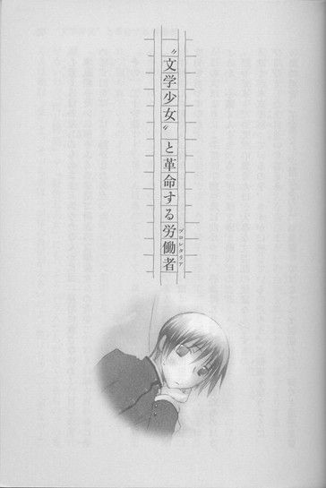
「心葉くんはわたしのものよ！ あなたなんかには、絶対に渡さないわ！」
水風船みたいに頬をふくらませて叫ぶ〝文学少女〟の背中で、ぼくは顔を真っ赤に染めて、口をぱくぱく動かしたのだった。
その、二十分後──。
「いいかげんにしてくださいっ！ いつ、ぼくが、あなたのモノになったんですか！」
牛園さんが男泣きに泣きながら走り去ったあと、ぼくは文芸部の部室で、遠子先輩に文句を言っていた。
この人はよりによって、牛園さんに向かって、心葉くんと両想いなのはわたしのほうよとか、心葉くんをとっちゃダメぇとか、叫んだのだ。
「だって──だって、心葉くんは、大事な文芸部の後輩なんですもの」
ぼくが本気で怒っているのを、さすがに感じているのだろう。ご機嫌を窺うように、びくびくした上目遣いで答える。
この場合、〝大事な〟が掛かるのは、〝後輩〟ではなく〝文芸部〟だ。ぼくと遠子先輩の間に、甘いエピソードは一切ない。糖分ゼロのビスケットのように、味気も色気もない関係だ。なのに、いきなりあんな告白まがいの台詞を叫ばれたら、びっくりするし、恥ずかしすぎる。
遠子先輩が、愛想笑いを浮かべる。
「ねぇ、心葉くん、そんなに怖い顔で睨まないで。心葉くんも柔道部より文芸部のほうが好きでしょう？柔道部で投げ飛ばされたり、押し倒されたり、腕や足を絞められて、ひーひーするよりも、文芸部でゆったり椅子に座って、のんびりお話を書いているほうがいいわよねぇ？心葉くんも、文芸部を愛しているわよね？」
「強引な先輩に、無理矢理部室に引っ張り込まれて、入部届を書かされて、それで愛部心が湧くほど、マゾじゃありません」
「うっ、で、でもっ、心葉くんはあのごっつくて、鼻の穴の大きい、もみあげの牛魔王に、狙われていたのよ！」
眉を下げてしょんぼりしたあと、ムキになって上張する。
「軟弱な心葉くんを、こんな時期に柔道部に勧誘するなんて、おかしいわっ。きっと心葉くんを自分の弟にしようと企んでいたのよ。ええ〝文学少女〟のわたしの目は誤魔化せないわ。『雨月物語』や『好色五人女』にも、そういう人たちが出てくるもの。心葉くんは絶対〝受〟よ。そっちのほうが体の負担が大きいのよ。裂けちゃって大変なのよ」
「なにを想像してるんですか！ やめてください！セクハラです！」
「でも、実際、校舎の裏で牛魔王に襲われそうになっていたじゃない。柔道部になんか入ったら、練習にかこつけて、毎日やらしいことされちゃうんだから！」
頬をぷくっとふくらませて、身を乗り出して断言するのに、立ちくらみがした。
同時に、牛園さんに、海より深く同情する。
彼がお近づきになりたかったのは、ぼくではなく遠子先輩だったっていうのに......。
なのに、後輩を奪う男色家と思われて、睨まれた上に暴言を吐かれて、踏んだり蹴ったりだ。あんなにひどい失恋、ないんじゃないか。
見た目は怖そうだけど、悪い人じゃなかったのに、遠子先輩みたいに鈍い人に恋をしたばっかりに......。
思わずうなだれるのを、助けてもらって感謝していると誤解したのか、遠子先輩は急に機嫌がよくなり、ぼくの顔を横からのぞきこみ、ふわりと笑った。
「大丈夫、心葉くんはわたしが守ってあげるわ」
猫の尻尾のように細くて長い三つ編みが、首を傾けた拍子に、肩からこぼれ落ちる。知的な黒い目が、やわらかくぼくを見つめている。
こういう風に、遠子先輩からストレートに好意を示され、包み込むような眼差しをされると、ぼくは胃のあたりがむずむずして、非常に落ち着かなくなる。
「やめてください。なんで女の人に守ってもらわなきゃならないんですか。どうしてそこまで、ぼくにかまうんですか」
すると、急にまたべそをかいているような顔になり、そのままじぃーっとぼくを見つめる。
言い過ぎただろうかとうろたえるぼくに、ますます目をうるうるさせて、悲痛な声で叫んだのだった。
「だって、だってっ、他にかまう一年生が、文芸部にはいないんですもの～～～～～！」
ぼくは、がっくりした。
そうだった。文芸部には、部長の遠子先輩と一年生のぼくの、二人きりしか部員がいないのだ。なんで潰れないんだ、この部！
遠子先輩は、パイプ椅子の上で背中を丸め、「たった一人の後輩に、冷たくされて、わたしほど不幸な先輩はいないわ」と、すねている。
「──っっ、わかりました！ それじゃ、ぼくが他の一年生を連れてきます」
苦い顔で、ぼくは唸った。
◇ ◇ ◇
きっと後輩が増えれば、ぼくにかまわなくなるだろう。そしたら文芸部なんてとっとと辞めて、おかしな先輩とも縁が切れる。
翌日、ぼくはさっそくクラスメイトに打診してみた。
「え、文芸部？」
「うん、今から入部してくれそうな人、いないかな。たいした活動してるわけじゃないから、ものすごく暇だし、部室で宿題するの意外とはかどるし、お勧めなんだけど」
「オレ陸上部入ってるし」
「オレ、囲碁部」
「部活はめんどいから、ちょっとなー。うち授業の進み早いし。一年から気合い入れてかねーと、落ちこぼれそうで」
みんな難しい顔をする。
「なになに、文芸部、部員募集してんの？オレ、入ってもいいぜ！」
「え！ 本当！ 田中くん」
「ああ。だってほら、文芸部って美人の先輩がいるじゃん。いいよなぁー、天野遠子先輩。しとやかで大和撫子って感じ。きっと料理なんかもうまくて、家庭的なんだろうなー。文芸部に入れば、お近づきになれるだろ。それすげーラッキー」
「えーと......遠子先輩は、多分料理は、そんなに得意じゃないと......」
妖怪だから、味、わからないし。
それに、しとやか？ 大和撫子？
パイプ椅子に体育座りして、幸せそうに本のページを千切って口へ運んでいる姿が脳裏に浮かぶ。スカートの奥が今にも見えそうなあの姿を、はたして、しとやかと言うのだろうか？
遠子先輩が、本当は上品なお嬢様なんかじゃないってことがバレるのは、一向にかまわない。けど、本を食べる妖怪だとバレて騒ぎになるのは、やっぱり、ちょっと......マズいんじゃないか。
田中くんは、口がとっても軽そうだ。遠子先輩の秘密を知ったら、学校中に触れ回りそうだ。
「で？ 入部届って、井上に渡せばいいの？」
「えっと、その......入部の前に試験があって、源氏物語五十四帖を読破して、レポートを提出してもらわなきゃならないんだけど」
「げーっ、なにそれ。んな面倒くさいことやってる暇ねーよ。やっぱ入部やめた」
「......そう、残念だね」
ぼくは、愛想笑いを浮かべた。
これは思っていた以上に大変そうだ。
放課後、しかめっつらで部室へ行くと、苦しそうな唸り声が聞こえた。
「はぅ、ダメ......もうやめて、ぅぅ......」
いつものように上履きを脱いで、窓際のパイプ椅子にお行儀悪く体育座りした遠子先輩が、膝に載せた本をめくりながら、ページを端から千切って口へ運んでいる。
そのたび、眉根をぎゅっと寄せ、口をへの字に曲げて、ふるふる身悶える。普段と変わらないようで、ちょっと様子が違う。
「なに、いきんでんですか、便秘ですか」
「あ、こんにちは、心葉くん。もぉっ、女の子にそんな言い方ないと思うわ」
ぷっと頬をふくらませたあと、すぐに目をなごませる。
「でも、今日もわたしが迎えに行かなくても、来てくれたのね、えらいぞ」
「暇なだけです」
ぼくは視線をそらし、机に鞄を置いた。
「何を読んでたんですか」
「小林多喜二の『蟹工船』よ」
よく聞いてくれましたというように、嬉しそうに告げる。
「多喜二は、一九〇三年十月十三日生まれの、秋田県出身の作家よ。プロレタリア文学といったら、やっぱり多喜二ね」
「プロレタリア文学って、大正時代とか昭和初期とかの、じめじめした暗い話ですか」
「そういう決めつけ、よくないわ。確かにちょっと重苦しいというか、社会の底辺で過酷な労働に喘ぐ人たちを題材にしたものが多いけど。でも、この『蟹工船』を、ただ暗くて鬱々しただけのお話だと思ったら、大間違いよ！」
遠子先輩がぺたんこの胸に本を抱え、勇ましく叫ぶ。
「そう、『蟹工船』は、まるで魚のあらや、ぶつ切りのごぼうやこんにゃくや野菜を、大きなお鍋で煮た粕汁のようね！どろどろした白い汁に浮かぶ鮭や鯛の頭に引いてしまいそうになるけれど、思いきって口へ入れてしまえば、荒々しい旨みが舌を震わせ、酒粕の原始的な香りに酔わされ、おなかも心も熱くなるの！
蟹工船というのは、蟹を捕って缶詰に加工する工場船のことよ。船でありながら航海法の適用を受けず、工場でありながら工場法の適用を受けない──そんな、経営者にとって好き勝手できる都合のよい船の中では、様々な事情を抱えた貧しい出稼ぎ労働者たちが、安い賃金で動物のように酷使されていたわ。
彼らは〝糞壷〟と呼ばれる不衛生な場所に寝泊まりし、殴られ、蹴られ、罵られ、怪我をしても病気になっても、休むことを許されず、ぼろぼろになりながら働かなければならなかったの」
悲惨な現場をその目で見てきたかのように、遠子先輩が青ざめる。
「過酷な労働に耐えかねてボイラー室に隠れていたある雑夫は、おなかがすいて出てきたところをつかまって、トイレに閉じこめられたわ。中から泣きわめく声が聞こえてきて──その声が、二日目には掠れて、わめく声もだんだん間を置くようになって──内側からドアを叩きつける音も聞こえなくなり、こちらからドアを叩いても返事もなくて──その晩遅く、便所紙の箱に頭を入れてうつぶせで倒れていた雑夫が運び出されたときは、『唇の色が青インキをつけたように、ハッキリ死んでいた』とあるわ。
工場への降り口に貼られたビラも凄いのよ！」
力の入りまくった口調で、ビラの内容を読み上げる。
「仕事を少しでも怠けたと見るときには大焼きを入れる。
組をなして怠けたものにはカムサツカ体操をさせる。
罰として賃銀棒引き、
函館へ帰ったら、警察に引き渡す。
いやしくも監督に対し、少しの反抗を示すときは銃殺されるものと思うべし。
「カムサツカ体操って、なんですか？」
気になって尋ねると、大真面目に答える。
「それは、『蟹工船』における最大の謎よ。ロシアのカムチャツカ半島が由来だと思うのだけど。きっと書くのをはばかられるほど、痛くて辛くて恐ろし～～～～い、地獄のような体操に違いないわっ。骨がぼきぼき折れちゃうとか、内臓が三個くらい破裂しちゃうとか」
一体どんな体操なんだ！
「とにかく！ 方言で書かれた会話や、無骨で写実的な文体が、まるで実録ドラマを見るように、労働者たちの悲惨な現実を、ページをめくる読者の前に、生々しく浮かび上がらせてゆくのよ。
そうして、搾取のない平等な国──ロシアを夢見る、虐げられた労働者たちは、ついにストライキを起こすの！ここは本当に手に汗握っちゃうわ。結局、帝国海軍が乗り込んできて、失敗に終わってしまうのだけど......」
「国家権力には、勝てなかったわけですね」
どうでもいいや、とつぶやいたとたん、遠子先輩は怯えたように、ぶるっと体を震わせた。
「やだっ、心葉くんが国家権力なんて言うから、作者の小林多喜二の死に方を、思い出しちゃったじゃない。多喜二は、特高警察に目をつけられていて、ひどい拷問を受けて亡くなったのよ。作家仲間が遺体の様子を書いているのだけど、すごぉぉぉぉぉぉく痛々しくて......凄絶で......こめかみに十円硬貨くらいの打撲が五、六箇所あって、赤黒く皮下出血してるとか、首に紐の跡があって深い溝になっているとか、ズボンを脱がせたらさらにひどくて、下半身が──ああああああっ、これ以上は言えないわ。思い出すだけで、口の中が酸っぱくなって、喉がきゅーっと閉まってきて......あーいやいやっ、やめてやめて」
本を抱きかかえて、首をぷるぷる横に振る。どうやらぼくが部室へ来たとき、唸っていたのも、小林多喜二に降りかかった恐ろしい出来事を思い出していたためらしい。
物語やその作者にここまで入れ込める心理が、文学少女ではないぼくには、今一つ理解できない。
「それじゃ食欲ないですね。ぼく、帰ってもいいですか」
するとキリッと顔を上げて言う。
「なにを言っているの、心葉くん。わたしの胃は、そんなにヤワじゃないわよ。やっぱり荒々しい粕汁のあとは、甘く繊細なデザートよね。そういうわけで、今日のお題は、〝みたらし団子〟と〝法事〟と〝皿洗い機〟よ。制限時間はきっかり五十分よ。はいっ、すたーと！」
銀色のストップウォッチを、笑顔でかちりと鳴らす。
みたらし団子で、甘く繊細なデザートを書けというのか、この人は！
呆れながら、五十枚綴りの原稿用紙を開き、ＨＢのシャーペンで、ちまちまマスを埋めてゆく。もちろん、甘い話を書いてやるつもりなんか、ないけど......。
遠子先輩は、パイプ椅子に座り直し、再び読書に戻った。細い指でページをめくりながら、時折ぼくのほうを見ては、嬉しそうに目をなごませる。
おやつのできばえを期待しているのだろうか......。
古風な文学少女を思わせる、しとやかな優しい表情だった。セーラー服の胸元に、細い三つ編みがこぼれている。
「ねぇ、心葉くん」
制限時間を半分ほど過ぎた頃、遠子先輩が、おだやかな声でつぶやいた。
「昨日、心葉くん、『ぼくが文芸部のために、一年生を連れてきてあげます』って、言ったでしょう」
いや、〝文芸部のために〟とは言ってないぞ。
「わたしね、心葉くんがそんな風に言ってくれて、とっても嬉しかったのよ。心葉くんも、文芸部のことを心配してくれているんだなぁーって。やっと文芸部を好きになってくれたんだなぁーって」
こっそり隣を窺うと、遠子先輩は本を食べる手を止め、ぼくのほうを見て微笑んでいた。
きらきらした淡い光が顔の周りを取り巻いているような、ほのぼのした甘い笑みだった。
胃の辺りが、またむずむずしてきて、慌てて目をそらす。
マズイ。
今、見てはいけないものを、見てしまったような気がする。
小説なんて二度と書きたくないし、他人と関わるのもごめんだ。こんな部さっさと辞めたいのに、おかしな〝文学少女〟のペースにはまって、ずるずる居続けてしまいそうな......。
いや、ダメだ！ このままここにいたら、絶対ろくなことにならない。お節介でデリカシーのない人間なんて大嫌いだ。一日も早く新しい部員を確保して、逃げるんだ。
「できました」
「ありがとう、いただきまーす」
遠子先輩が、にっこり笑って両手を差し出した。
その五分後──。
「いやあああああ、法事の最中に、こっそりみたらし団子を盗み食いしてたら、食器洗い機が噛みついてきたわ～～～～。食器洗い機、こわーい。高野豆腐を炭酸ソーダにひたしたみたいな、えぐい味～～～～」
拷問を受けているみたいな悲鳴が、部室に轟いたのだった。
◇ ◇ ◇
どうしたら、遠子先輩が山羊みたいに紙をもしゃもしゃ食べるのを見ても動じない、無口な一年生が、入部してくれるだろう。
翌日。ぼくは教室の机で頭を悩ませていた。
えぐえぐ泣きながら、最後のひとかけらまで必死に飲み込む遠子先輩の姿を思い出すと、憂鬱な気持ちになる。
よく、あんな滅茶苦茶な話を食べられるものだ。感じなくてもいいはずの罪悪感に、胸が疼く。
やっぱり、とっとと代わりの部員を見つけよう。それで、遠子先輩のおやつ係を押しつけよう。
あらためて決意したときだ。
「井上くん、お客さんよ」
「え？ ぼく？」
廊下へ行ってみると、見たことのない男の子が立っていた。
制服が、しゃきっとして新品ぽいから、ぼくと同じ一年生だろうか？
ドングリのような素朴な坊主頭で、ぼくよりいくらか背が高く、胸囲も肩幅もある筋肉質な体型で、黒く日焼けしている。けれど、表情や全身を取り巻く空気が暗い。お通夜の席にいる人のように、どよんとして、うなだれている。
「えっと......ぼくになにか用？」
「自分、一年七組の石杢といいます」
同じ学年のぼくに、何故か敬語で言う。
「すんません、文芸部の井上くんすよね」
「そうだけど」
何故、そこで文芸部？
「一寸、つきあってください」
「あの......」
「ここじゃ話せないっす」
なにかを警戒するように、肩をすくめて素早く周囲に視線を走らせる。
「自分のあと、他人のふりしてついてきてください」
「ちょっと──」
「しっ。話しかけないでください」
低い声で叱りつけられて、困惑したまま、石杢くんの少し後ろをついてゆく。
話ってなんだろう？ どうして、教室じゃ話せないんだ。
石杢くんは背中を丸め、そわそわした足取りで、階段をのぼってゆき、人気のない廊下のほうへ行き、さらに男子トイレに入っていった。
仕方なくぼくも、あとに続く。
中は静まり返っている。石杢くんは自分たち以外誰もいないことを確かめるように入り口を用心深く見つめたあと、便器のほうを向いた。
「あの、話ってなに？」
「前向いて、自然に用足してるふりしてください」
「なんでそんなことするの」
「念のためっす」
わけのわからないまま、便器に向かう。
石杢くんが、ひそひそ話をするような低い声で、つぶやく。
「文芸部が部員を募集してるって、本当っすか」
「え？ あっ、うん。そうだけど」
「自分、文芸部に入部したいんっすけど、いっすか」
「へ！」
思わず声が裏返ってしまう。
「ダメっすか？」
「いや、あの──」
それって、わざわざ人気のないトイレへ来て、便器のほうを向いて、する話なんだろうか。
けど部員を熱烈大募集しているのは確かだし、石杢くんはおしゃべりではなさそうだ。
「石杢くん、きみ、口は堅いほう？」
「うす。ダンベルでぶん殴られて頭をかち割られても、ライターで炙った十円玉で根性焼きされても、スパイクで生爪踏まれて、雑巾水をぶっかけられて、顔にマジックで〝処刑される豚〟と書かれても、自分はしゃべらないっす」
「た、たとえが怖いんだけど......。きみが秘密を守れる人なら、大歓迎だよ」
「そっすか、ありがとうございます。豪雨の日に地べたに素っ裸で五時間正座させられても、関節逆に曲げられて腕がぼきぼきに折れても、携帯に『地獄へイクか』と一日に五百件メールをされても、黙ってます」
「だから、たとえが怖いよっ！」
「あ、自分の他にも、入部したい人たちがいるんすけど」
「いいけど......」
人たちってことは、二人以上？ 石杢くんをあわせて、いきなり三人も入部希望者が──。
「じゃ、じゃあ、放課後、文芸部の部室へ来てくれるかな。そこで入部届を書いてもらえば、すぐに入部できるから」
「その前に、自分たちの仲間に会ってもらえますか」
「え？ ぼくが？」
「文芸部のこと聞かせてほしいっす」
えーと......入部説明会みたいなものだろうか。
「それなら、ぼくより部長のほうが」
「いえ、天野さんはダメっす。天野さんが文芸部の部長をしていることは、みんな知ってるから危険っすよ。井上くんなら、地味で目立たないけど」
地味で目立たない──は、いいとして、危険って一体。
「そんなわけで、自分ら入部することは、内密に願います」
目が真剣だった。そんなわけって、どんなわけなんだ。
「入部するまででいっす。自分らが五体満足で文芸部の部員になるまで、このことは誰にも漏らさないでください」
「あのっ、五体満足って──なに！ 一体、なにが起こるの！」
石杢くんが、張りつめた表情でつぶやく。
「それは自分にもわかりません」
不安が、ぞくぞくと背中を駆け上がってゆく。ぼくは、とんでもないことに巻き込まれようとしているんじゃないか。
「じゃ、放課後、迎えにきます」
「ま、待って！ きみの言ってること全然わからないよ。まず納得のいく説明を──」
「自分は、盟約に従って、動いてるだけっす」
盟約！ また、わけのわからないことを言われて、うろたえる。盟約なんて高校生が日常的に口にする言葉じゃないよ！
「自分、先に行きますから、井上くんは三分待ってから出てください」
そう言って、石杢くんは一人で出て行ってしまった。
盟約って、なんなんだ！
放課後、石杢くんはホームルームの終了とともに、ひっそりとやってきた。
「ついてきてください」
「石杢くん、ぼく急に用が──」
「話しかけんでください。井上くんの身の安全に関わりますから」
また背筋がぞわっとする。身の安全とか、普通じゃない。
石杢くんに連れて行かれたのは、プールのシャワー室だった。
ドアを開けるなりぎょっとした。消毒液の匂いが、ツンと鼻をつくそこには、十人を優に超える男子生徒がいて、彼らが一斉にぼくを睨んだのだ。
「！」
全員坊主で、筋肉もりもりのごつい体型で、強張った険しい顔をし、すさんだ空気を発散させている。山賊の住処と聞いても違和感はない。今にも襲われて、身ぐるみはがされそうで、心臓が縮み上がった。
中でも一番、でかくて人相が悪くて──とても高校生とは思えないような人が、貫くような視線をこちらへ向け、ドスのきいた声で言った。
「おまえが、文芸部の一年生か」
「は、はい、そうです。いいいいい石杢くん、まさかこの人たち全員文芸部へ入部を希望してるの？」
「うす」
どう見ても、本好きの文学少年には見えない。一体何故、文芸部に！しかも、こんなに大勢！それにこの人たち、一年生じゃなくて上級生じゃないか？
「井上くん、文芸部のこと話してください」
「えっと、そのっ、ぼくも入部したばかりなので、あまり詳しくは......。てゆーか、部長は、部室でだらだら本を読んで、好き勝手しゃべって、おやつをむしゃむしゃ食べてるだけで、それ以外の活動は全然......」
とたんに、どよめきが起こる。
「部活の最中に、だらだらだって!? それで蹴り飛ばされたりしないのか！」
「息をする以外に口を開いても、金属バットで殴られもしなければ、ダンベルが飛んできて、壁に穴があくこともないのか！」
「おおおおっ、おやつだとっ！ 文芸部は、おやつの時間まであるのかっっ！」
ぼくは面食らった。
なんだ、この反応は。なんで、みんな身を乗り出して騒いでいるんだ。驚きと羨望の眼差しで、ぼくを見ているんだ。なんで、なんで、泣いている人までいるんだ。
「文芸部は、自由なんだな」
「ノルマも、罰則もないんだな」
「俺たちを苦しめる、監督者もいない」
「御殿山体操もない！」
「あのっ！ 御殿山体操って！」
ぼくの声は、野太い雄叫びにかき消えた。
「文芸部へ行けば、俺たちも人間らしく生きられるんだ！好きなときに話ができるし、おやつも食べられるんだ」
「文芸部は、天国だ！」
「そうだ！ 天国へ行くんだ！」
「盟約が果たされるときが、きたんだ！」
暗かった顔に、希望があふれ、狭いシャワー室は、大盛り上がりに盛り上がっている。ぼくは早く帰りたくてたまらなかった。
盟約ってなんなんだ。この人たちは何者なんだ。ひょっとして、遠子先輩がぼくの知らないところで、なにかやらかして──。
そのとき、シャワー室のドアが激しい音を立てて開いた。
「大変だぁっ！ カニに漏れたぞ！」
蟹!? 今度は、蟹？
飛び込んできたのは、猪のように太い首をした男子生徒で、やっぱり頭は坊上で、額からだらだら血を流し、目をむき、肩を激しく上下させている。
ぼくの後ろで、悲痛な叫びが次々上がった。
「なにぃ！ カニに！」
「バレたのか！」
「進藤は──進藤はどうなった！」
「進藤さんは──カニを足止めしようとして──うっ」
「谷口！」
「しっかりしろ、谷口！」
その場に倒れてしまった彼の周りに、他の人たちが地鳴りのような足音を立てて押し寄せる。
「谷口！ 目を開けろ！」
「うぅ......自分はもう。それより進藤さんを」
「わかった。進藤は俺たちが助ける！」
「けど、カニに逆らったら、また」
「そうだ！ カニに計画が漏れた以上、うかつには動けないぞ！」
「バカヤロー！ 進藤を見捨てるのか！」
「しかし、俺たちが全滅したら、進藤は無駄死にだぞ！」
うぁぁぁぁっ、状況がさっぱりわからない。
さっきから、蟹、蟹と連呼されているけれど、学園に何故蟹が？遠子先輩が蘊蓄を垂れていた『蟹工船』を思い出し、寒風の吹きすさぶ海で、真っ赤な巨大蟹が暴れ、それに立ち向かう学生たちの映像が次々浮かび、ぼくは混乱するばかりだった。
「俺は行くぞ！ 仲間を見殺しにはできん！」
「俺も行く！」
「俺も！」
「俺も！」
「おまえら！ 冷静になれ！」
「うっ！」
「谷口！」
「死ぬな、谷口ぃぃぃぃ！」
「保健室へ運ぶんだ！」
「その前に、止血を！」
「うぉぉぉぉぉ！ 谷口ぃぃぃぃ！」
シャワー室から飛び出してゆこうとする生徒、腰にがっしり抱きついて、止めようとする生徒、血まみれの生徒を抱え上げ咆吼する生徒。
あ、阿鼻叫喚って、こういうのを言うんだろうか。
「おい、文芸部！ 谷口を保健室へ連れてゆくから、こぼれた血を始末しといてくれ。それと、そっちも身辺には十分注意しろ。俺たちが文芸部への入部を望んでいることも、他言無用だ！」
返事をする間もなく、彼らは嵐のように去っていった。
ぼくは、ブラシで床の血をこすって洗い流し、そのあと三つ編み妖怪のおやつを書く気にもなれず、まっすぐ帰宅した。
◇ ◇ ◇
翌日、朝から遠子先輩が頬をふくらませてやってきた。
「心葉くんたら、昨日、部活をサボって帰っちゃったでしょう。ひどいわひどいわ、ゆっくりいただこうと思っていた、芥川龍之介の短編集も、全部食べちゃったわ。『トロッコ』で、冒険に出かけた男の子が、知らない場所に一人きりで放り出されて、線路づたいに泣きながら走っているシーンで、わたしまで無性に寂しくなって涙ぐんじゃったわ」
「急に気分が悪くなったんです」
「うぅ......、嘘っぽい」
遠子先輩が、上目遣いに睨む。
ぼくは無視して言った。
「......遠子先輩、御殿山体操って、知ってますか」
「？ なぁにそれ？」
「知らないならいいです」
石杢くんは、文芸部の部長にはまだ話すなと言っていた。あの坊主頭のハイテンションな集団のことを、遠子先輩なら知っているかと思ったのだけど。
「授業がはじまりますよ。もう帰ってください」
素っ気なく背中を向けたとき、遠子先輩が、ぼくの袖口をそっとつかんだ。
「心葉くん......なにか困っていることでもあるの？」
振り返ると、黒い目が心配そうに、ぼくを見上げていた。
「別に」
「そう......」
冷たすぎただろうか。寂しそうな顔をするのを見て、胸がズキッとする。
遠子先輩が、うつむきかげんにつぶやく。
「......最近、わたしが迎えに行かなくても、心葉くんが自分から文芸部へ来てくれるようになったこと、本当に嬉しかったのよ」
普段、能天気な顔ばかり見ている分、こんなしょんぼりした姿を見せられると、落ち着かない。
遠子先輩が顔を上げて、にっこりする。
「もし困ったことがあったら、いつでも相談してね。だって、心葉くんは大事な......後輩ですもの。それと、今日はちゃんと部活に来ないとダメよ」
手を振って去っていった遠子先輩は、いつもどおりの元気でお気楽な、先輩だった。
昨日のこと......遠子先輩に、聞いてもらえばよかったかな......。
もやもやした気持ちで席に戻ると、クラスメイトがにやけた顔で話しかけてきた。
「おいおい、天野先輩、放課後まで待ちきれず、会いに来たのかよ。熱いなー。袖とか、ちょんとつかんで、じっと見上げちゃったりとかして、可愛いよな」
別のクラスメイトも脇から言う。
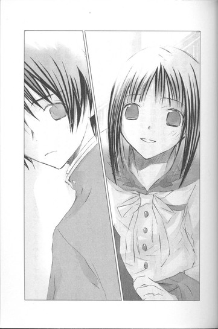
「昨日、井上が帰ったあと、天野先輩教室まで迎えに来たんだぜ。井上がいないんで、がっかりしてたぞ」
「あーんな綺麗で優しそうな人に、気にかけてもらえるなんて、うらやましすぎ。オレ、頑張って源氏物語読破しよーかなー」
「おい、あんま天野先輩を、哀しませんなよ」
左右から小突かれて、どう返していいのか困ってしまった。
「ところでさ、昨日、井上に会いにきた坊主頭のやつ、いたろ？あれって、ボート部だろ？井上、まさかボート部と掛け持ちする気じゃないよな」
「げっ、それやめとけ、今地獄だろ、ボート部は」
ぼくは慌てて尋ねた。
「石杢くんのこと？ 彼はボート部なの？ 地獄ってどういうこと？」
「知らねーの？ うちのボート部、関東大会で入賞したりして、そこそこ強ぇんだけど、去年の三月から、新しいコーチが就任したんだよ。
そのコーチがすっげー厳しくて、今年は全国目指すって宣言してて、練習メニューが半端じゃねぇらしいぜ。気合い入れさせるために、部員全員丸坊主にして、朝の五時から校庭で体力作りの基礎練してるって。
オレ、ちらっと見たことあるけど、コーチが怒鳴りまくってて、部員を金属バットでぶん殴って、部員が吹っ飛んで、すごかった。そのあと、背中を踏んづけたんだぜ、その鬼コーチ！噂じゃ、部員をダンベルで殴ったり、スパイクで蹴ったり、パンツ一枚で雨の中ランニングさせたり、雑巾水ぶっかけたりで、怪我人、病人、続出だって」
そ、それ、石杢くんも、言ってたような。
ダンベルで頭をかち割られてもとか、豪雨の中、地べたに裸で五時間正座とか、ライターで炙った十円玉で根性焼きとか......。
「へますると、マジックで顔に〝役立たずの豚〟って、書かれるって聞いたぜ」
「雑巾水は、ぶっかけるんじゃなくて、飲ますんじゃなかった？」
「チューブ入りの辛子をいつも持ってて、傷口に塗りたくるらしいぜ」
さらに、ひどい話が飛び出してくる。
「一番強烈なのは、アレだな、御殿山体操」
「ああ、アレは、三日は立ち直れねぇ」
「いや一週間だろ」
「いやいや、ヤワなやつは死ぬだろ、御殿山体操」
ぼくは、喉になにか引っかかっているような声で聞いた。
「御殿山体操って、なんなの！」
みんなが顔を見合わせ、ぶるっと震える。
「そいつはちょっと......軽々しく言えねぇな」
「口にするだけで、関節ぶっ千切れそう」
「うぅっ、オレも、なんか腹の具合が悪くなってきたぜ」
「そんなに凄い体操なのっ」
同時にうなずく。
「ああ」
「だな」
「御殿山体操の話は、ここではナシだぜ。とりあえず、恐ろし～～～～～～いもんだと思ってくれりゃ、間違いない」
「遠子先輩は、知らないみたいだったけど」
「当然だな、女子に話せる内容じゃねぇ」
うわ～～～～ますます気になる～～～～～～っっっ。
「でも、そんなひどいしごきをして、問題にならないの？ＰＴＡとか、教育委員会とか......」
「それがこのコーチ、コネが半端じゃねーんだよ！」
「コネ？」
「そう！ 親が大企業の社長で、親戚に警察関係者と教育関係者と医療関係のおえらいさんがいて、学生のときからどれだけ暴れても、父親が事件もみ消しまくりだって。
しかも怒りっぽくて執念深くて、逆らおうものならマジで死ぬような目にあわせられるっていうから、教師も怖がって、口出しできねーらしーぜ」
額から、たらりと汗が落ちる。
まさか昨日、頭から血を流してシャワー室に飛び込んできた人も、その鬼コーチにやられたんじゃ......！
カニというのが、コーチなのか？
そんな凶暴なコーチが君臨してるんじゃ、確かにボート部は地獄だろう。遠子先輩が話していた『蟹工船』の世界だ。上に押さえつけられ、喘ぎながらノルマをこなし続けなければならないところとか。
そんな部、もういたくないから、みんなで辞めようと思う気持ちも理解できる。
けど何故、そのあと入部する先が、文芸部なんだ？
ボート部から文芸部──全然活動内容が違う。飛躍しすぎだ。入部のことを誰にも話すなと口止めしたこともよくわからない。
「まぁ、井上は、腕も体も細いし、ボート部とか向いてねぇよ」
「だな、文芸部がちょうどいいんじゃねーの。お迎えに来てくれる美人の先輩もいるし。あーくそ、代わりてぇーっ」
また小突かれて、苦笑して誤魔化した。
ともあれ、やっぱり石杢くんたちの入部は、丁重に断ろう。
暴力沙汰に巻き込まれるのは嫌だし、そもそもあんなに大人数、文芸部の部室に収容しきれない。
そうだ、そうしよう。ぼくはそれで、面倒なことをすべて回避できたつもりになっていた。
ところが──。
「おい！ 文芸部の井上はどいつだ」
昼休み。お母さんのお手製の蟹シューマイを食べていたら、怒声が轟いた。
そちらを見て、ぼくはひっと息をのんだ。
赤茶けた髪を蟹のハサミのように逆立てた男の人が、首を突き出し、鋭い目で教室の中を睨み回している。
手が異様に長く背が高い。痩せた体を、海老茶色のジャージに包んで、苛々と足踏みしている。
ひょっとして、この人が──！
クラスメイトが、ぼくのほうを見る。
ぼくは心臓が凍りつくような気持ちで、のろのろ立ち上がった。
「あ......あの」
「おまえか」
薄いまぶたを伏せ、目をすーっと細める。視線が焼けたナイフのようにぼくの顔に突き刺さる。
「ちょっと顔貸せや」
「で、でも......まだ食事の途中で」
「ぐだぐだ抜かすな！ 俺様が来いっつったら、来るんだよ！」
おなかをすかせた虎のような声で叫ばれ、震え上がった。
教室の中は、痛いほど静まり返っている。
クラスメイトが心配そうに見つめる中、ぼくは特高警察に連行される『蟹工船』の作者のように、突然の来訪者のあとについていったのだった。
小林多喜二はどうなったんだっけ？
拷問の二文字が頭に浮かび、血の気が引いた。
──作家仲間が遺体の様子を書いているのだけど、すごぉぉぉぉぉぉく痛々しくて......凄絶で......。
──ああああっ、もうこれ以上は言えないわ。思い出すだけで、口の中が酸っぱくなって、喉がきゅーっと閉まってきて......あーいやいやっ、やめてやめて。
遠子先輩の声が、耳の奥でこだましている。
そんな！ ぼくは、プロレタリア作家でも、蟹工船に出稼ぎに来た労働者でもないのに！この現代で、拷問なんてあるはずない！
「おい、ぐずぐずするな！」
「は、はい」
そうだ、きっと話せばわかってくれる。
やがて、三階にあるボート部の部室に辿り着いた。そこは各部の部室が並ぶ一角で、昼休みのため、人の気配もなく、静まり返っている。
中へ入ると、汗臭い匂いがした。段ボール箱がたくさん積み上げられて、ごちゃごちゃしている。その段ボールに、血痕らしき黒い染みを見つけて、喉がひくっと上下した。
いいや、話せばわかる。きっとわかる。
「あ、あの......っ！ ぼぼぼぼく、どうして呼ばれたのか、全然思いつかなくて──その、あ、あなたはボート部のコーチですか？」
「おう、コーチの蟹沢だ！」
片手に持った金属バットで、自分の肩をどすどす叩いて威嚇しながら答える。
ぼくは心の中で、かぼそい悲鳴を上げた。
あぁぁぁぁっっっ、やっぱりこの人がカニなんだ～～～～。
入り口には、口をへの字に結んだ蟹沢コーチが仁王立ちしていて、逃げ場がない。
「ぼっ、ぼくは、ただの文芸部の一年生で──こちらの部とは、なんの関係もありません！」
いきなりバットが、段ボールを叩いた。
ぼすっ！ と音がして、積み上げられた段ボールが、大きく揺れる。
「！」
「とぼけるな！」
蟹沢コーチが目をカッと見開いて、吠えた。
「うちのクズどもが、昨日の放課後、おまえにこそこそ接触したことは、わかってるんだぞ！あいつらコーチの俺様に隠れて、裏でちょろちょろなにしてやがる。おまえ、あいつらの仲間なんだろう」
「違います。昨日会ったばかりです」
バットが、ひゅっと空気を切り裂き、また段ボールが揺れる。
「嘘をつくやつはぁ、スポーツマンらしくなくて、大嫌いだぜ」
「嘘じゃありません。それにぼくは、スポーツマンだったことは一度もありません」
「じゃあ、なんで、あいつら、おまえのところへ行ったんだ！」
「知りませんっ。ただ、文芸部に入部したいって言われただけです」
「なにぃぃぃぃぃっ！」
蟹沢コーチが赤い髪を振り乱し、ぐわああああと口を開ける。
「文芸部へ入部だとぉぉぉぉぉ！ あいつら、ボート部からケツまくる気か？退部なんて絶対許さんっっっ！広瀬が辞めるって言い出したとき、タコ殴りにして、ベランダから吊るして、そのあと親の勤め先にもプレッシャーかけて、一日にメール千通送って、改心させてやったのに！なのに、あのクズども、この俺様から逃れようってのか────っ！」
ベ、ベランダから吊るした！
ぼくは今にも気絶しそうだった。
「昨日も、進藤がヤケに俺様にまとわりついて、栗饅頭だの茶だの出したり、肩をもんだりして、怪しいと思ったんだ！あいつ、俺様を仲間のところへ行かせないようにしてたんだ。見せしめに口に雑巾つめこんで、声が出ないようにして蹴りまくって、クズどもには、へどを吐くほど御殿山体操させてやったっていうのに、まだ俺様の本気がわかんねーか！ならば、徹底的に思い知らせてやるぜ！」
バットが、高々と振り上げられる。
目が、完全にイッてしまっている。
「うわぁ、ぼくに思い知らせないでください！」
「うるせぇ！ 貴様も、御殿山体操するか！」
「御殿山体操も、カムサツカ体操も、遠慮します～～～～！ぼくはただの文芸部員です～～～～！」
頭を抱えて叫んだときだ。
「そう、心葉くんは、大事な文芸部員よっ」
ドアが開いて、遠子先輩が現れた。
急いで走ってきたのか、息を切らしている。ハァハァと喘ぐたび、長い三つ編みが揺れる。
ぼくは唖然とした。
何故、遠子先輩が！
蟹沢コーチが、顔をしかめる。
「誰だ、おまえは」
遠子先輩は、すっと呼吸を整えると、腰に手をあて、ぺたんこの胸を反らして堂々と宣言した。
「そこで頭を抱えている心葉くんの頼りになる先輩で、文芸部部長の天野遠子──ご覧のとおりの〝文学少女〟よ」
ああ、ダメだ、この人。
ぼくは頭を抱えていた両手で、思わず顔を覆ってしまった。
あざやかな登場に、うっかり感動しかけたのが間違いだった。やっぱりこの人は、ただの能天気なヘンな先輩だ。
「文学少女だとぉぉぉぉぉ！ 俺様は、芸術とか文学とか、ヤワっちくて、上品なもんは大嫌いなんだよぉぉぉぉぉ！」
蟹沢コーチが額を真っ赤に染め、唾を飛ばす。
「遠子先輩、怒らせてどうするんですか！」
「人がきちんと名乗ったのに怒るなんて、失礼ね」
遠子先輩が、ぷんすかする。
「いいから、もう逃げてください」
「いいえ、ボート部が、こんな髪の毛ぼさぼさの野蛮人に、めちゃくちゃにされるのを、盟友である文芸部は見過ごすわけにいかないわ」
「なにぃ！」
蟹沢コーチが、眉を吊り上げる。
ぼくも叫んだ。
「なんですか、それ！ いつから文芸部とボート部は盟友になったんですか。ぼく、なんにも聞いてません！」
「ええ、そうね。心葉くんはまだ入学していなかったから。
ボート部の部室は、去年の春まで文芸部の部室だったのよ。この部屋は代々文芸部が受け継いできたの。時代の流れで、部屋を去ることが決まったとき、文芸部は、友好の証として、この部屋をボート部へ快く譲り渡したのよ。そうして、お互いの部に危機が訪れたときは、全力で助けるという盟約を交わしたの」
やけにシリアスモードで格好をつけて話しているけれど、時代の流れって一体......。そもそも高校生の部活動で、盟約なんて有りなのか。
ああでも、ボート部の人たちが言っていたのは、このことだったんだ。
遠子先輩が、蟹沢コーチを凛然と見据える。
「かつて文芸部の部室であったこの部屋を、卑劣な圧政者によって流れる血で、汚すわけにいかないわ！そんなの〝文学少女〟たるこのわたしが、許さないわ！」
「ふんっ！ たかが文芸部に、なにができる」
「文学の力を侮らないで。さっきあなたは、文学はヤワで上品だと言ったけど、骨太で荒々しい男性的な文学も、たくさんあるわ！そう！文学によって社会を変えようとした、小林多喜二の『蟹工船』のような！」
根拠のまったくない、わけのわからない迫力に気圧されたように、蟹沢コーチがたじろぐ。
逆に遠子先輩はノリノリだった。目を力強くきらめかせ、胸と一緒に顎を反らし、蟹沢コーチの鼻先に細い指を突きつける。
「『蟹工船』にも、あなたのように横暴な監督者が登場するわ！労働者を犬のようにこきつかう浅川という男よ！工員たちは、浅川の圧政に耐えかねてストライキを起こすけれど、国家権力の介入によって失敗してしまうわ。
けど！ 彼らはその失敗によって、目覚めるのよ！革命を成功させるためには、全員が団結して立ち上がらなければならないんだって！そのときこそ、自分たちは勝利をつかみ、社会は真の意味で変革されるんだって！
そう、まさにその瞬間、酒粕を飲みこんで、おなかと頭がカァァァァッと熱くなるような感動が、読み手であるわたしたちに、押し寄せるのよ！
ボート部も同じよ！
一人ずつではあなたの暴力に屈してしまうかもしれない。
けど、ボート部全員で立ち向かえば、勝利をつかむことができるわ！」
「文芸部の部長の、言うとおりだ！」
また突然、野太い声がして、遠子先輩の後ろに、山のようなごつい体型の男子生徒が、忽然と現れた。
後ろに包帯を巻いている生徒やら、眼帯をつけている生徒やらがぞろぞろ並んでいて、一見ボロボロだけど、どの生徒の目も、力強い光を放っている。石杢くんも、頬に絆創膏を貼り、腕を吊った姿で、蟹沢コーチを睨み裾えている。
今にも勇壮なテーマ曲が大音量で流れてきそうな光景を、ぼくは口を大きく開けて見ていた。
先頭に立つごつい部員が、恐れを克服した者の声で告げる。
「俺たちボート部総勢十七名は、コーチ蟹沢和彦の退陣を、学校側に正式に要求する！」
「なにぃ！」
「はじめは盟友である文芸部への一時退避も考えていた。部員が一度に辞めれば、学校側も動いてくれるのではないか、あんたも考えを改めてくれるのではないかと。
表立って動けば、またあんたの怒りを買い、部員を危険な目にあわせてしまうばかりか、その家族にまで害が及ぶ危険があった。なので、隠密に行動した。
だが！ 盟友たる文芸部部長が、教えてくれた！逃げても、なにも解決しないと。
俺たちに『蟹工船』の素晴らしさを語り、一人ではなく、全員で立ち向かえと！」
ボート部の人たちが、部長の遠子先輩ではなく、ぼくに入部の打診に来たのは、つまり目立ちたくなかったから......？
けど、じゅうぶん不審で、目立っていたと思う。
てゆーか、遠子先輩とボート部の人たちはいつの間に接触したんだ。
蟹沢コーチの頭から立ちのぼる湯気の量は、もはや沸騰したヤカン並みだった。
「おまえら────っっ！ 全員！ 御殿山体操だ────っっっ！」
金属バットを振り回し、廊下へ飛び出す。
バットの先が、ドアの枠にぶつかって、ガン！ゴンッ！ガンッ！と派手な音を立てる。
遠子先輩が「きゃっ」と叫んで身をかがめ、脇に避ける。
暴れる蟹沢コーチに、ボート部全員で、わっと群がり、手や足をつかんで取り押さえ、床に転ばし、その上に覆い被さる。
蟹沢コーチは、さるかに合戦で石うすに押し潰された猿のようにじたばたし、顔を屈辱にゆがませ、呻いた。
「くそぉぉぉぉ！ 全員、退学にしてやる～～～～！」
「やれるならやってみろ！ いくらあんたでも、十七人全員退学にすることなんて、不可能だ！」
騒ぎを聞きつけ、無関係の生徒がどんどん集まってくる。
教師も、慌ててやってくる。
ボート部の前の廊下は、すごい騒ぎになった。
ぼくはといえば、すっかり力が抜けて、床にへたりこんでいた。
遠子先輩が、三つ編みを軽やかに揺らして、近づいてくる。
「大丈夫？ 立てる？」
腰をかがめ、そっとぼくの顔をのぞきこむ。黒い目が気遣うように、ぼくを見つめている。
もしかして、また助けられてしまったのだろうか......。
「お昼休みに、ちょうど文芸部の部室に、ボート部の人たちを呼んで話していたの。昨日、心葉くんのクラスへ行ったとき、ボート部の一年生と出ていったって聞いたから......。どういうことかしらって、心配になって。
そしたら、心葉くんのクラスの子が、心葉くんがボート部のコーチに連れていかれたって、知らせに来てくれたのよ」
なんだ、もう昨日の時点で、遠子先輩はぼくがやっかいなことに巻き込まれているって知っていたんだ。だから、今朝もわざわざ教室まで尋ねてきて、困ったことがあったら相談に乗るとか言ってたんだな。
「えっと......お節介だった？」
眉をちょっと寄せ、気弱そうな顔になる。
胸の奥がきゅっとし、そんな心の動きに戸惑ってしまった。
「......いいえ」
ぼそっとつぶやくと、すみれの花がゆっくり開くように、遠子先輩が笑う。
うかつなことに、その笑顔をとっても綺麗だと思ってしまった。
「ほら、きみの先輩は、頼りになるでしょう」
「エバらないでください」
「やっぱり心葉くんは、男の人に襲われやすくて心配だわ。わたし、これから毎日心葉くんのクラスへ迎えにいって、ガードしてあげる」
「やめてください」
すると遠子先輩はとろけそうな甘い目になり、ぼくの額をちょんとつついた。
「じゃあ、部室で心葉くんが来るのを待っているから、ちゃんと来てね。先輩に心配をかけないでね」
ぼくは返事をせず、そっぽを向いたのだった。
◇ ◇ ◇
数日後、ボート部のコーチが解雇されたと聞いた。
「いくら盟友とはいえ、一年生のきみを巻き込んで申し訳なかった。もし、ボート部の力が必要なときはいつでも言ってくれ！」
わざわざ全員で、ぼくの教室にまで謝りに来てくれたのだけど、クラスメイトから好奇の目で見られて、ちょっと困ってしまった。
放課後は、文芸部へ行く。
辞めたいという気持ちは今も変わらないけれど、サボると遠子先輩が迎えに来るので仕方がない......。
「井上くん」
ホームルームが終わって、教室を出ようとしたとき、クラスの女の子に呼び止められた。
「ねぇ、あたしの中学の同級生で、図書委員をしてる子がいるんだけど。その子が文芸部に入ってもいいって言ってるんだ。どうする？紹介しようか？」
「......」
とっさに沈黙してしまったのは、何故だったのだろう。
ぼくは、にっこり笑った。
「ありがとう。でも、もう締め切っちゃったんだ」
世間様向けの笑顔を貼りつけ、答える。
せっかく一年生が入部して、はた迷惑な先輩のおやつ係から解放されるチャンスだったのに、何故ぼくはそれを自分から捨ててしまったのか。
その理由を考えると、胃のあたりがまたむずがゆくなりそうだったので──。
まぁ、いいや。
二人きりのほうが、遠子先輩に文句もいっぱい言えるし......。
ぼくは考えるのをやめて、歩き出した。
〝文学少女〟の今日のおやつ ～『万葉集』～
これは、ぼくが遠子先輩と出会った、最初の冬の話。
「いいよな、井上は。あんなきれーな先輩から、チョコをもらえて」
「それ、遠子先輩のこと？」
ぼくは目を丸くして聞き返した。
この日はバレンタインデーで、教室の中は普段よりもざわめいていた。女子はチョコレートの包みを手にうきうきしているし、男子も緊張している。
高校一年生のぼくは、彼女も女友達もなく、お母さんと妹くらいしかチョコをもらうアテがなかったので、完全に他人事だった。
ああ、そういえば、今日バレンタインだっけ......。みんなの様子を眺めながら、ぼーっとしていた。そしたら、聞き捨てならない言葉が、耳に飛び込んできたのだった。
「またまたとぼけちゃって。天野先輩からチョコレート、もらうんだろう？くそ～、オレも文芸部に入ればよかったぜ」
「だよな～。綺麗で優しくてしとやかな先輩と、放課後二人きりなんて美味しすぎる」
「髪とか黒くて長くて、大和撫子って、ああいう人のこと言うんだよなっ」
優しくしとやか？ 大和撫子......？
ぼくは頭が痛くなってきた。
また、誤解されている......。前にも同じようなことを言われたような......。
確かに遠子先輩は、見た目は楚々とした大和撫子に見える。いつも本を読んでいて、周囲から物静かな文学少女という印象をもたれてもおかしくない。
けどっ！ 部室で二人きりのときは、パイプ椅子に平気で体育座りするし、本のページをめくりながら、うるさく蘊蓄を垂れるし、あげくにページを千切って、ぱりぱり食べてしまう〝妖怪〟！なんだぞ。
本人は、「わたしはただの〝文学少女〟よ」なんて頬をふくらまして否定しているけど、あれは妖怪だっ。絶対妖怪だっっ。
そのことを他のみんなは知らない。
「天野先輩って、料理とか得意そうだもんな。ひょっとして手作りだったりして」
「うぉぉぉっ、天野先輩の手作りチョコ、オレも食いてー」
「オレもー」
「あー、うらやましいぜ、井上！」
肘で小突かれたり、恨めしそうな目で見られたりして、胃がむずむずしてしまった。
あの遠子先輩が、チョコレートを手作りするなんて、ありっこないのに。てゆーか料理したことあるのか？カップラーメンにお湯を注いだこともなさそうだ。
「なぁ、井上」
「ゴメン、ぼくトイレ」
これ以上、あれこれ詮索される前に、さっさと逃げ出す。
教室を出るとき、戸口に立っていた女の子と擦れ違った。うつむいているので、顔がよく見えない。ずいぶん緊張しているみたいで、ぼくが横を通ったとき、肩が揺れ、息をのむ気配がした。
「あれぇ、ななせ。誰に用？ 呼んだげるよ」
「え、えっと、えっと............そうじゃなくてそのっ、す、数学の教科書借りに来ただけっ」
そんな声が遠ざかってゆく。
廊下を歩いていたら、名前を呼ばれた。
「お～い、心葉く～ん！」
遠子先輩だ。
猫の尻尾みたいな細くて長い三つ編みをぱたぱた揺らして、こぼれそうな笑顔で走ってくる。
ぼくの前で立ち止まると、上気してほんのり赤くなった顔で、嬉しそうに言った。
「今、心葉くんのクラスへ行くとこだったのよ」
「なにか用ですか」
そっけなく尋ねると、両手を後ろに組み首を小さく傾け、意味ありげな眼差しでぼくを見上げた。
「ね、心葉くん。今日、部活に来るわよね」
「はい」
「よかったぁ」
遠子先輩が、たちまちにっこりする。
「絶対よ、絶対来てね」
「いつも行ってるでしょう」
「今日は、特別なの。だって二月十四日ですもの」
頬をほころばせてそんなことを言うので、ちょっとドキッとした。
「じゃあ、放課後ね、心葉くん」
手をひらひら振りながら軽やかに去ってゆくのを、廊下の真ん中に突っ立ったまま見送る。
──いいよなー、井上は。
──天野先輩からチョコレート、もらうんだろう。
ありえない。
ぼくはすぐに苦笑し、歩き出した。
放課後になり、部室へ行くと、遠子先輩はいつものようにパイプ椅子に体育座りして、ぼくを待っていた。
「あら、心葉くん。荷物はそれだけ？」
椅子に座ったまま身を乗り出し、ぼくの鞄をのぞき込んでくる。
「チョコレートは？」
「ありません」
ペンケースや五十枚綴りの原稿用紙を机に並べながら、淡々と答えると、どこか嬉しそうに口元をゆるめて、
「あー、一個ももらえなかったんだ。女の子に意地悪してるからよ」
「してません」
「ほらほら、その冷ややかな態度に、女の子は傷ついちゃうのよ」
「余計なお世話です」
「もぉ、せっかく先輩として、心配してあげてるのに」
口では文句を言っているけど、ずっとにこにこしている。
「仕方ないわねー。じゃあ、代わりにわたしがチョコレートをもらってあげるわ」
「へ？」
今、日本語がおかしかったような。
「誰が誰に、チョコレートをもらうんですか？」
「わたしが、心葉くんによ」
「なんで、ぼくが遠子先輩にチョコレートをあげなきゃならないんですか」
遠子先輩は、えへんと胸を反らす。
「だって、いつも先輩にお世話になっているでしょう？だから、感謝の気持ちをたっぷり込めて、チョコレート味の、あまーい三題噺を書いてちょうだい」
ああ、どーせそんなことだろうと思った。それで、わざわざぼくの教室まで、部活に出るよう念押しに来たんだな。まったくこの人は──。
そもそもお世話をしているのは、誰だと思っているんだ。
ぼくは、大きく肩を落とした。なんかドッと疲れた。
「さぁ、心葉くん、お題は〝雪だるま〟〝エンゲージリング〟〝逆上がり〟よ。ロマンチックなお話が書けそうでしょう？制限時間は、きっかり五十分、はい、すたーと！」
遠子先輩が、銀色のストップウォッチをかちりと鳴らす。
抵抗するのも面倒くさくて、ぼくは五十枚綴りの原稿用紙の表紙を開き、ＨＢのシャーペンで文字を綴りはじめたのだった。
こうなったら、徹底的に甘い話を書いてやる。
ひそかに決意するぼくの横で、遠子先輩はパイプ椅子に体育座りして、のんきに本をめくっている。
今日は重そうなハードカバーで、『万葉集』のようだ。時折、気に入った短歌のページを千切っては口へ運び、うっとりと声を震わせる。
「あぁ、美味し～！ 『万葉集』はまるで、春にいただく山菜料理のフルコースのようね！可憐な菜の花の白あえに、からっと揚げたタラの芽に蕗のとう！わらびのおひたし、ゼンマイの炒め物！どの歌も、素朴で力強くて、ちょっぴりえぐみがあって、若々しい大地の香りがするの！」
明るく言い放ち、またページをぱりぱり、しゃくしゃく咀嚼しては、幸せそうに飲み込み、蘊蓄を語り出す。
「『万葉集』は、現存する日本最古の歌集よ。編纂者は何人かいたと考えられているけれど、最終的には大伴家持が、彼が亡くなる七八五年迄に、今の形にまとめたとされているわ。この歌集は合計二十巻もあって、なんと約四千五百首ものごはん──いいえ、素敵な歌が収録されているのよ！
〝万葉〟というタイトルは、万の代にわたって伝わる書になるようにという意味を込めたとする説と、万の葉ほどのたくさんの詩歌を集めたという意味だとする説があるけれど、どちらも素敵よね～。わたしは両方アリだと思うわ。
のちに編纂された『古今和歌集』なんかと違う点は、『万葉集』は半分近くの歌が、名前のない歌人によって詠まれていることよ。当時の権力者や官人、知識人の他に、一般の人たちの歌や、地方の民謡なんかが収録されていて、バラエティに富んでいるの！
決して巧みな歌ばかりではないけれど、まっすぐに心に響いてくる、おおらかで情熱的な歌が、いくつもあるわ。そういう歌は、えぐみは強いけれど、とっても新鮮で、歯ごたえがさわやかで美味しいの！」
遠子先輩が、一首詠み上げる。
「『上毛野安蘇のま麻群かき抱き寝れど飽かぬをあどか我がせむ』
──上毛野というのは上野国のことで、今の群馬県のことよ。上野の安蘇の麻群をかき抱くように、恋人に抱擁を繰り返すけれど、飽きないのだ、ああ、こんなに好きでどうしたらいいんだろう──という意味よ。
こんな風にあけすけで、まっすぐな歌を詠まれたら、女の子はぼーっとなっちゃうわ。
こちらは、女性が詠んだ歌ね。
『青柳の張らろ川門に汝を待つと清水は汲まず立ち処平すも』
──ねぇ、想像してみて！ この子は、青々とした柳が萌える川の渡場で、水汲みをするふりをしながら、大好きな彼が来るのを待っているのよ。けどなかなか彼が現れなくて、足元の土を、そわそわと踏みならして平らにしているの。
もうもうっ、なんて可愛いのっ。菜の花の青さが、舌の上に広がるわ。摘み立てのゼンマイが香ばしいわ。千年以上も前から、人は恋をしていたのねぇ」
夢見るようにつぶやき、千切ったページを飲み込み、またほぉっと溜息をつく。
「それに、『万葉集』には、胸がしめつけられるようなロマンスも、たっぷりつまっているのよ！
中大兄皇子と大海人皇子、額田王の三角関係は特に有名よね。
『あかねさす紫野行き標野行き野守は見ずや君が袖振る』
『紫草のにほへる妹を憎くあらば人妻ゆゑにわれ恋ひめやも』
──この歌は、宴会の席で詠まれたお遊び的な歌で、深い意味はないとも言われているけれど、ロマンチックな想像をかきたてられてしまうわよねっ。この歌をもとに、額田を巡る中大兄や大海人の恋物語が、いくつも創作されたのも納得よ。
そうそう、穂積皇子と但馬皇女のロマンスも見逃さないでっ。二人は異母兄妹で、但馬には高市皇子という、父親ほどに年上の夫があったけれど、禁じられた恋は、一途に燃え上がったのよ。
万葉集に収められている但馬臭女の歌は、どれも穂積皇子への恋を詠ったものよ。あまりの激しさに、口に入れたとたん喉や頭がカァッと熱くなってしまうほどよ。
『秋の田の穂向きの寄れること寄りに君に寄りなな事痛かりとも』
──秋の田の稲穂が、風で一方にたなびくように、たとえ人から、どんなにひどく噂されても、あなたに寄り添っていたいという意味よ。
そんな恋を、但馬はしたの。穂積皇子が後年、よく口ずさんでいたという〝恋の奴がつかみかかってくる〟ような──秘めることも、逃れることもできない──どうしようもない恋をね。
早くに亡くなってしまった但馬の死を哀しむ穂積の歌も、万葉集に収録されているわ。ぜひ読んで、涙して！」
遠子先輩は、川の水が流れるように語り続けている。頬が紅潮し、目がうるんでいて、ちょっと色っぽい。
「ああ、こんなに短い歌の中に、なんてたくさんの想いや願いが込められているのかしら！それが千年以上もの時を経て、わたしたちのもとへ届けられるなんて、奇跡みたいよ。この歌集をめくるたびに、心が古の奈良の都や東国、九州を旅してしまうのよ。どの歌にも素敵な物語があって、それを想像するだけで、おなかがいっぱいになってしまうわ。
すべての歌が愛しくて、美味しいけれど、わたしの一番のお気に入りは、やっぱりこの歌なのっ」
遠子先輩が急にぼくのほうを見て、やわらかく微笑んだ。
春に咲く花のようにほころぶ唇や、目つきの甘さにドキッとし、書く手が止まる。
いたずらっぽくぼくを見つめたまま、遠子先輩は澄んだ優しい声でつぶやいた。
「──『恋ひ恋ひて逢へる時だに愛しき言尽くしてよ長くと思はば』」
心臓が大きく跳ねる。
目を見開いてかたまっているぼくに、遠子先輩がうんと可愛らしく笑いかけてくる。
「あなたとお逢いしている今このときだけでも、優しい言葉をたくさんちょうだい、二人の仲が長く続くように思うなら──という意味よ。
作者は大伴坂上郎女──『万葉集』の編纂者と言われている大伴家持の叔母さんで、お姑さんでもあるわ。彼女の最初の夫は、但馬皇女と激しい恋に落ちた穂積皇子だったの。穂積は但馬の死後に、まだ十三、四の少女だった彼女を妻にし、寵愛したのよ。
けれど、穂積もすぐに亡くなり、その後結ばれた男性にも次々先立たれてしまうの。それでも彼女は、恋をすることの喜びや、楽しさ、切なさを、明るく歌い続けたわ。なかでも、この『恋ひ恋ひて～』は、黒蜜ときなこをたっぷりかけたわらび餅のように甘くて美味しいわ！透明なお餅が、火照った喉をつるんとすべってゆくようよ」
遠子先輩が椅子の背もたれに肘をつき、ぼくを見つめて言う。
「ねぇ、心葉くん。心葉くんも先輩に、『愛しき言』を、尽くしてねっ。わたしを、心葉くんのお話で、おなかいっぱいにしてちょうだい」
また鼓動が速くなって、みぞおちのあたりがむずむずしてきた。
見つめ合っていると、意に反して頬が熱くなりそうで──ぼくは急いで顔をそらし、最後の行を書き上げ、それを遠子先輩に渡した。
「......できました」
「わーい、いただきまーす！」
遠子先輩が満面の笑顔で受け取る。
「どんなチョコレートなのかしら？ ミルクかしら？ビターかしら？ナッツやドライフルーツ入りかしら？楽しみ！」
うきうきと目を通し、端から千切って食べはじめたのだけど──。
二十分後、部室に悲鳴がとどろいていた。
「いや～～～～～、どうしてっ、どうしてっ、〝雪だるま〟と〝エンゲージリング〟と〝逆上がり〟で、こんなお話になっちゃうの！
冷たい鉄棒さんを愛した雪だるまくんが、延々逆上がりしながらプロポーズを続けるの？決して離れないように、鉄棒と自分の首を鎖で繋いで、エンゲージリングにするなんて──これって、ＳＭ？それで、また延々逆上がりしながら、愛の言葉を叫び続けるなんて、ゆがんでるわっ。あぁ、とうとう、雪だるまくんが、溶けちゃった～。かわいそ～～～～。
ぅぅ、角砂糖をホワイトチョコレートでコーティングしたものをてんこ盛りにして、その上に生クリームと蜂蜜をトッピングしたみたいな味～。ええ、確かに甘いわっ。舌がびりびりするほど──脳みそに突き刺さってくるほど、甘くて甘くて甘いけど、甘さの方向と度合いが間違ってる～～～～」
めそめそしながら、ぼくの書いた三題噺を食べ続ける遠子先輩に、冷たく告げる。
「甘いの好きでしょう。よかったじゃないですか」
「あぅぅ......一生分のお砂糖を、摂取した気分」
相当気持ち悪かったのか、完食後、ぐったりと椅子にもたれてしまった。
「じゃあ、ぼく帰りますから」
鞄に荷物をしまい、コートを着て立ち上がったときだ。
「あ、待って」
振り向くと、布みたいにふんわりしたすみれ色のペーパーと、白いレースのペーパーを重ねてラッピングして、水色や金色のリボンで結んだものが、目に飛び込んできた。
「はい、心葉くん」
華やかな包みを、ぼくの鼻先に両手で突き出し、遠子先輩がにっこり笑う。
「えっと、これは......」
「やぁねぇ、今日はバレンタインでしょう」
「そうでしたっけ」
そっけなくつぶやきながら、ぼくは内心動揺していた。まさか、遠子先輩がチョコレートを用意していたなんて！自分がチョコレート味の三題噺を食べたくて、ぼくにわざわざ部活に来るか確認したんじゃなかったのか？
「先輩からの、贈り物よ」
「......ありがとうございます」
弱った。どんな顔をしていいのかわからない。あんな滅茶苦茶な三題噺を書くんじゃなかった。
「ねぇ、開けてみて」
遠子先輩が催促する。
ぼくは、ぎこちなくリボンをほどきはじめた。
この気合いが入りまくったラッピングは、遠子先輩が自分でやったのだろうか。ひょっとして中身は手作り？
ますますマズい。
よくわからないけれど、とにかくマズい。非常にマズい。
息をひそめるようにして、包みを開いていったぼくは、けれど目が点になった。
華やかなラッピングの中身は、お買い得大袋入り百円と、スーパーのチラシに印刷されているような、一口ミルクチョコやら、一口ビターチョコやら、一口アーモンドチョコやらの詰め合わせだった。
「......これ、普段教室で友達にもらったの、集めておいたとかですか......自分が食べられないから、ぼくに残飯処理させるとかですか」
苦い顔のぼくに、椅子の背に肘を載せた遠子先輩が、おひさまのように晴れ晴れと笑ってみせる。
「だって、義理だもーん」
翌日。クラスメイトに興味津々で訊かれた。
「天野先輩のチョコ、どんなだった？」
「どんなもこんなも......」
よかったらあげるよ、みんなで食べてと、鞄に入っている一口チョコを出そうとして、ぼくはその手を止めた。
そうして、しばしの沈黙のあと「......」、かすかに頬を熱くして言ったのだった。
「なんにも、もらってないよ」
〝文学少女〟と病がちな乙女
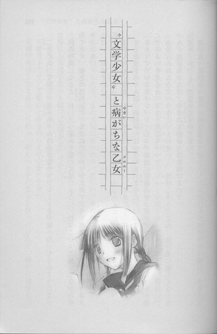
二月に入ってから、遠子ちゃんは小さなチョコレートを学校へ持ってくるようになった。
休み時間になると、長い三つ編みを猫の尻尾のように、ひょこひょこ揺らしながらやってきて、金色の包装紙にくるまれた、かりかりのアーモンドチョコや、甘ぁいミルクチョコを、
「はい、おすそわけ」
手のひらに、ちょんとのせるのだ。
「遠子ちゃん、最近、チョコ好きだね」
すると遠子ちゃんは、朝開いたばかりの花のように、にっこりした。
「もうすぐバレンタインデーでしょ。お店に綺麗にラッピングされたチョコレートが並んでいるのを見ると、うきうきしちゃって」
「あー、わかるな。パッケージも可愛いし、美味しそうだよね。自分用に欲しくなっちゃう。遠子ちゃんは、今年は本命チョコをあげるの？」
「ダメ、わたし、恋愛大殺界中だもの」
遠子ちゃんががっくりと肩を落とす。
この前、都内に大雪が降った日に、遠子ちゃんは当たると評判の占い師に、わざわざ恋愛運を見てもらいにゆき、そこで、
「あなたは生まれたときから、恋愛大殺界中です」
と断言されてしまったのだ。
そのショックもあってか、風邪を引いてしばらく学校を休んでいたほどだ。電話口で、
「ねぇ、ひどいと思わない？ こんな悲劇ってあるかしら」
と、鼻をすんすん鳴らして嘆いていた。
「バレンタインは女の子の一大イベントなのに。でもっ......いいのっ。七年後の夏に、運命の恋人に会えるって、〝予言〟されたから。本命チョコは、そのときまで取っておくわ」
しょんぼりしたり、また元気になったり、忙しい。そのたび表情がくるくる変わる。笑ったり、ふくれたり、半べそになったり、また笑ったり。感情表現がとても豊かな人なのだ。
なにしろ遠子ちゃんは、〝文学少女〟だから。
二年生の一学期、ホームルームの自己紹介で、
「天野遠子です。ご覧のとおりの〝文学少女〟です」
笑顔で挨拶したときは、うわぁ、変わった子だなぁと思ったけれど、確かに遠子ちゃんの見た目は、大正時代の文学少女そのままなのだ。
もちろん大正時代の文学少女に知り合いがいるわけじゃないけど、イメージっていうか......。色白で、ほっそりしていて、しとやかそうで、目が星みたいに澄んでいる。遠子ちゃんの周りだけ、時間の流れが違うみたいだった。
呆れるほどたくさん本を読んでいて、「今日は、なにを読んでるの？」と尋ねると、楽しそうに目をきらきらさせて、本の内容や、作者について話してくれる。
『愛の妖精』の作者のジョルジュ・サンドが男装の麗人で、ショパンの恋人だったってことも、『伊勢物語』は、薄く切った鯛や、細かく刻んだ柚の皮や、菜の花を載せたちらしずしみたいな味がするってことも、遠子ちゃんが教えてくれた。
遠子ちゃんは話しやすくて、クラスの人たちからも好かれているけれど、昼休みはどこのグループの女の子ともごはんを食べず、文芸部の部室で一人で食事をしている。
「だって、読みたい本が、たくさんあるんですもの」
と、ほんわり笑って答える。
一人でごはんを食べるなんて、あたしなら、友達がいない子みたいでとても寂しく感じてしまうに違いないけど、遠子ちゃんは気にしてないみたいだ。そういうところがやっぱり遠子ちゃんって、不思議な人だなぁって、思う。
それに、遠子ちゃんはのんびりしているように見えて妙に鋭い。今日も、
「果歩ちゃんこそ、今年は本命チョコを渡すお相手がいるんじゃない？」
「えっ！ そ、それはその──！」
あたしは焦って、しどろもどろになってしまった。やだ、なんで顔を熱くしてるの、あたし。
遠子ちゃんは、お母さんみたいににこにこ笑っている。
これだから、遠子ちゃんは油断がならない。
「あはは、あたしも遠子ちゃんと同じだよ～。義理チョコばっかりだよ」
「あら、木尾くんは？」
いたずらっぽい目をされて、またドキッとする。
「き、木尾は、中学が一緒なだけで、そういうんじゃないよ。ただの腐れ縁。そう、腐れ縁の友達なのっ。全然恋愛対象じゃないし、木尾にときめくとか、つきあうとかあり得ないし、向こうもあたしのこと、友達としか思ってないよ」
「そうかしら」
遠子ちゃんが、首を傾げる。
「うん、そう」
こんなに心臓が高鳴っていて、聞こえてしまうんじゃないかと不安に思いながら、あたしは笑ってみせた。
「それより、遠子ちゃんのお薦めの、オースティンの『エマ』、読み終わったよ。すごくおもしろかった。また別の本を紹介して」
「ええ、もちろん！ オースティンだったら『マンスフィールド・パーク』も素敵よ！」
遠子ちゃんが木尾の話をやめたので、ホッとする。
それでもまだ、胸がドキドキしていた。
あたしにとって、木尾隆史は、どんな存在か？
正直、あたしにもよくわからない。
あたしたちは同じ中学の出身だ。といっても中学のときは、同じクラスになったこともなければ、話をしたことも一度もなかった。
はじめて言葉を交わしたのは、高校の入学式の日──教室で、クラスメイトとして顔をあわせたときだった。
木尾はあたしを見て、いきなり嬉しそうに顔をほころばせ、走ってきた。
「なぁなぁ！ あんた二中で一組だったろ？ オレも二中で、二組だったんだ。よかったー！同じガッコのやつがクラスにいて！」
はずむような声だった。
まるで昔からの友人に再会したみたいに、親しみのこもった開けっぴろげな表情に引き込まれて、あたしも、
「知ってるよ、木尾くんでしょ？ 陸上部だったよね」
と自然に話していたのだった。
以来、あたしたちは、よく話をするようになった。木尾は気取りのない、さっぱりした性格で、いつも男友達とつるんで楽しそうにはしゃいでいた。女の子といるよりも、男の子といるほうが好きみたいだったけど、あたしには、仲間に接するのと同じ態度で接してくれた。
「今井は、同じ中学の出身だもんな。だから特別って感じ」
からりと笑いながら、そんな風に言う。
あたしも木尾といると、楽しかった。それは、女友達とおしゃべりをしているときの楽しさとはどこか違っていて、心の中に薄紅色の毬があって、それがぽーんとはずむような感覚だった。
「おーい、今井！」
昼休み。ちょうど木尾のことを考えていたら、本人が教室へやってきた。
びっくりして、心臓が飛び出しそうになる。心の中の毬も、忙しく転がり出す。
木尾は後ろの出入り口のところに立って、屈託のない表情で手まねきしている。
「なに？ 木尾」
「頼む。漢文のノート貸してくれ。オレ、今日当たるんだ。今井んとこ、うちのクラスより、ちょっと先に進んでたろ」
ぱちんと手をあわせて拝むように、へこへこする。
「もぉ、仕方ないな」
「さんきゅ！ 帰りにたこ焼きおごるな」
ノートを渡すと、木尾はそれをつかんだ手を大きく振り、自分の教室へ戻っていった。
「ねぇ、なんで、いっつもたこ焼きなの」
帰り道。冬の澄んだ日射しが、木々の間から斜めに射し込んでくる道路を、並んで歩きながら尋ねる。木尾は高校でも陸上を続けているけれど、部活がお休みの日は、二人で帰るのが定番になっていた。
「そら、おまえ、冬はたこ焼きだろ。屋台で買って、公園のベンチで、ふーふーしながら食うのが、うまいんだ」
「夏も、たこ焼きだったけど」
「うだるような炎天下に、熱いたこ焼きを食う。最高じゃん」
「あたし、アイスがいいな」
「バカ、冬にアイスなんか食ったら、凍るぞ」
「あたたかいお店で、冷た～いアイスを食べるのが、いいんだよ」
「いいや、男はたこ焼きだ」
アイスが、たこ焼きがと言い合いながら、商店街を進んでゆく。
バレンタインのポスターがあちこちに貼ってあって、ケーキ屋さんのディスプレイも、バレンタイン仕様に変わっている。
「そういや、来週バレンタインか」
「そ、そうだね」
木尾の口調は、普段と変わらない。
なのに、胸の中で薄紅の毬が、小さく跳ねはじめる。
「今井、誰かにやるの」
「ううん、特にいないかな」
あっちにころり、こっちにころり。そのたび、心臓がひやっとする。
あたしは、声が上擦ってないか、顔がこわばっていないか、ひどく気になった。
「あーっ、そういやおまえ、去年、義理チョコもよこさなかったよな。普通、くれるだろ。友達なんだから」
不満そうに睨みながら言う。
毬が心臓にあたって、大きく跳ねる。
「なんだ、木尾、チョコなんか欲しかったの」
「まったくもらえないよか、いいだろ」
「でも、木尾、断ってたじゃない。......宮島さんのチョコ」
口にしたとたん、震えるような後悔が襲った。木尾が顔をしかめる。
「つか、あれはさ......」
困っているような、ふてくされているような顔で、唇を尖らせる。
「つきあってくれって言われて、本命ってわかってんの......受け取れないだろ。義理ならいいけど」
喉が熱くなり、息が苦しくなった。
去年のバレンタインデー。あたしは、木尾にチョコを用意していたのだ。
義理チョコだったけれど、デパートの地下でどれにしようかさんざん悩んで、選んだチョコだった。
いつ渡そう。
なんて言って渡そう。
ただの義理チョコで、全然本命とかじゃないけれど──本当にそんなんじゃないけれど、でも、木尾はどんな反応をするだろう。
いつもみたいに「お、ごちそうさん」と気軽に手に取って笑うかな？それとも、少しは驚いたりするのだろうか。「バーカ、こんなの持ってくんなよ」と照れたりするのだろうか、「仕方ねーな、食ってやる」とぶっきらぼうに受け取るのだろうか。
学校へ向かう間も、頭の中でずっとぐるぐる考えていた。それは、苦しいような楽しいような、甘いような、怖いような、不思議な時間だった。
けど、学校の近くの道路で、木尾が告白をされているのを見てしまった。
相手は木尾と同じ陸上部で、一学年先輩の宮島さんだった。
髪をショートカットにした、細身の美人で、木尾に綺麗にラッピングした箱を差し出して、うつむいていた。
あの箱、チョコレート？
胸がぎゅっと縮まり、足が地面に張り付いたみたいに、止まった。
木尾は断ったらしい。こわばった顔で首を横に振って、深く頭を下げるのが見えた。
すみませんと、言ったのだろう。
宮島さんの顔も、哀しそうにゆがんでいた。
宮島さんがチョコを持ったまま去ったあとも、木尾は浮かない顔で、地面を見ていた。
おなかの底に力を入れて、
「木尾、おはよう」
と声をかけると。顔を上げて、困ったように、
「ああ」
と、つぶやいた。
「今の、宮島さんでしょ？ チョコレート、もらわなかったの？」
「......つきあうとか、そういうの、めんどくさいし、よくわかんねーから」
ぼそぼそとつぶやいて、背中を向けて歩き出す。
告白されたのに、ちっとも嬉しそうではなく、逆に困り果てて、気落ちしているように見えた。
つきあうとか、そういうの、めんどくさい。
まるで、あたしが木尾からそう言われたような気がして、木尾の前で顔をこわばらせていた宮島さんに、あたし自身の顔が重なって、心の中の毬がぴたりと停止し、息がもっと苦しくなった。
だから、あたしは去年、木尾にチョコを渡していない。
「ふぅん、木尾は、義理チョコならオッケーなんだ」
重くなった空気を変えるため、茶化してみる。
「ああ、オッケー、オッケー。下駄箱から、チョコがどさどさこぼれてくるのって、男のロマンだよな。てわけで、なるべくデカくて、見栄えするやつな、ちまちましたのは、食った気しねーから」
「あたしは、チョコは本命にしかあげないの。だから、今年もなし」
「ちぇっ、おまえ、恋人ができたら、友達ないがしろにするタイプだな」
「そう、一途だから」
「オレ、そういうのダメ。いきなり彼女づらして、べたべたされたら、鳥肌立つ。高瀬なんか、彼女ができたとたん、のろけまくって、つきあい悪くなって、ああはなりたくないよなー」
最近、女の子とつきあいはじめた高瀬くんのことを、頬をふくらませて話す木尾を、あたしは喉がひりひりするような思いで見ていた。
木尾への気持ちがなんなのか、あたしはわからない。
前は木尾と一緒にいるのが楽しかった。けどこのごろ、わけもわからず、苦しくなる。
もし、あたしが去年の宮島さんのように、真剣な目をしてチョコレートを差し出したら、木尾はどんな顔をするのかな。
あのときみたいに、暗い表情で目をそらすのかな。
そうしたらもう、二度とあたしにノートを借りにきたりしなくなるのかな。こんな風に、一緒に帰れなくなるのかな......。
「どうした？ 今井？ 黙っちゃって」
「ううん、なんでもないよ。あたし、たこ焼き、和風ダシがいいな」
「オレは、ソースにマヨネーズ派なんだけど、ま、いっか。ノートの礼だしな」
木尾が、たこ焼き屋さんで、大だこ十個入り、和風ダシを注文する。
それを持って、近くの公園へ行き、ベンチに並んで座る。できたて熱々のたこ焼きを、左右から楊枝に刺して口へ運ぶ。香ばしい湯気が鼻をくすぐる。よぉーくさまさないと、舌を火傷してしまう。木尾もたこ焼きに息を吹きかけている。
「和風ダシも、なかなかイケるな」
「でしょ？ あ、あっ、マヨネーズなんかかけないでよ」
「マヨネーズかけたほうが、うまいだろ」
「あわないよぉ。木尾、なんでもマヨネーズかけすぎ。お刺身にまでマヨネーズかけるの信じられない」
「バカ、おまえ、刺身に醤油マヨネーズ、最高だろ」
「わー、きゃー、想像させないで。マヨネーズかけるなら、自分の分だけにしてよ」
「ったく、じゃあこっからこっちが、オレのな」
木尾がぶつぶつ言いながら、小さなパックに入ったマヨネーズを絞り出す。
「あ、そっち、あたしの！」
マヨネーズ味にされる前に、慌てて楊枝を突き刺し、頼張る。ところが中身はまだ熱く、えらいことになった。
「──ッッ！」
「あー、なにやってんだ」
舌を焼くような、どろりとしたたこ焼きを、なかなか飲み込めず、口を押さえて涙目になるあたしに、木尾がミネラルウォーターのペットボトルを、蓋をはずしてよこす。
「ほら」
あたしは夢中で受け取り、こくりと飲んだ。
たこ焼きが生温い水に冷やされ、喉に落ちてゆく。舌がまだひりひりする。
「バカだなー、今井」
「き、木尾が、あたしのたこ焼きに、マヨネーズかけようとするからだよ」
くっくっと笑っている木尾を睨みながら、動揺していた。このペットボトル、とっさに飲んじゃったけど、木尾の飲みかけじゃない。それって、間接キス......？
胸の中の、薄紅色の毬が小さく跳ねる。
木尾はまだ笑っている。全然気にしてないみたい。
恥ずかしいような、悔しいような気持ちが、込み上げる。
そうだよね......こんなの大したことないよね。友達なら、普通にあることだよね......。
「......木尾はさ......今年も本命チョコは、受けとらないの？」
「なんだよ、急に」
「別に、どうなのかなって」
「んーまー、そうだな。くれそうな相手もいねーし」
「......そっか」
きっと、木尾に彼女ができたら、今までのように気安い関係ではいられない。
木尾に、今現在、そんな相手がいないということを、あたしは喜ぶべきなのかもしれない。
けど、胸の中の薄紅色の毬が、木尾がなにか言うたびに、不安定にはずんでいる。何度も喉元まで跳ね上がり、わけのわからない気持ちと一緒に、飛び出しそうになる。
あたし、病気なんだろうか。
どこか、おかしいんだろうか。
木尾は、いつもと変わらないのに。
「水、ありがとう」
「おう」
ペットボトルを木尾に渡そうとしたとき、受け取ろうとした木尾の手が、偶然あたしの手に重なった。
「！」
これまで肩や手がぶつかることなんて、何度もあったのに、触れあっている手が熱く燃え上がって、体の芯に電流が走ったような気がした。
とっさに、手を払いのけてしまったあたしを、木尾が驚いて見つめる。
ペットボトルが、足元に落ちる。
な、なに？
あたし、どうしちゃったの？
自分で自分の反応に驚き、それがさらに混乱を生み、顔がカァァァッと熱くなる。
「今井？」
「ご、ごめんっ、あたし変なの」
「なんだよ、それ」
「ごめんっ、ごめんね」
たまらず立ち上がり逃げだそうとすると、手をつかまれた。木尾は、むっとしている。
「いきなりどうしたんだよ、今井。変って、なにが変なんだよ？」
声も、怒っているみたいだった。
つかまれている手が、痛くて、熱くて、怖くてたまらなくなって、胸の中で毬が激しく飛び跳ねて、あたしは泣きそうになってしまった。
目に涙がにじんでくる。
「！」
木尾が目を見張る。
まるで知らない相手に向けるような戸惑いの表情で──あたしの赤く染まった顔を、目のふちに浮かぶ涙を、見ている。どうしていいのかわからないというような、情けない眼差しで──。
「ご......ごめん、あたし、本当におかしいんだ」
あたしは必死に声を絞り出すと、木尾の手を思いきり振り払って、駆け出した。
後ろを振り向かず、ひたすら逃げる。顔に冷たい風が当たる。心臓が壊れそうなほど高鳴っている。薄紅色の毬がころころ転がる。
ダメだ！
やっぱり、あたしはおかしい！
自分で自分がわからない。感情のコントロールがきかない。変だ！変だ！こんなの変だっっ！
もう、木尾と普通に話せない！ 木尾にも、おかしなやつだと思われた！あたしの赤くなった顔を、木尾に見られてしまった！きっと今までみたいに、あたしに会いにきてくれない。
あたしはもう、木尾の特別じゃない！
おしまいだ！
◇ ◇ ◇
翌日、あたしは赤い目で登校した。
胸の中の毬はぴくりとも動かず、奥のほうに転がっている。
席について暗い顔でうつむいていたら、遠子ちゃんがやってきて、心配そうに尋ねた。
「果歩ちゃん、なにかあったの？」
あたしが黙っていると、もっと心配そうに眉根を寄せた。
「昨日は、木尾くんと帰ったんでしょう？ ひょっとして、喧嘩したの？」
あたしは首を横に振った。涙で喉がつかえて、黙ってしまう。
「だ......大丈夫、なんでもない」
何度も首を横に振りながら、やっと言う。
遠子ちゃんがあたしの肩に、優しく手を置いた。
「ねぇ、果歩ちゃん。お昼休みに文芸部へ来ない？一緒にごはんを食べましょう」
遠子ちゃんは、なにも訊かなかった。
古い本が床にたくさん積み重ねてある文芸部の部室で、購買部で買ってきたマーマレードジャムを塗ったフレンチトーストを、
「あまぁい、このトーストは、『アリーテ姫の冒険』みたいな味ね」
なんて言いながら、端からちょっとずつ囓って、パックの牛乳をストローですすっている。
あたしも、なにも言わず、表面がちょっとでこぼこの机に、お母さんが作ったお弁当を広げて、食べていた。
遠子ちゃんはマーマレードトーストを食べ終わると、パイプ椅子に上靴を脱いだ足を載せて体育座りした。
本棚から色あせて茶色に変色した文庫本を取って、膝に載せる。そうして、ページをめくりながら、やわらかな声で語りはじめた。
「ロンゴスの『ダフニスとクロエー』は、まるで、新鮮な山羊のお乳で作ったチーズのようね。臭みがなくて爽やかで、ハーブと蜂蜜が入っているの！
この物語は、二世紀の後半から三世紀の前半に生まれたと言われているのよ。日本ではまだ、聖徳太子も生まれていなくて、弥生時代から古墳時代に移り変わる頃ね。
そんな気が遠くなるような昔に、地中海の国々では豊かな文化が栄え、生活を楽しむための娯楽としての大衆的な物語が、たくさん作られたのよ！
『ダフニスとクロエー』も、その中のひとつよ。
エーゲ海に浮かぶレスボス島で、ある日一人の山羊飼いが、男の子の赤ん坊を見つけるの。その子は立派な産着にくるまれて、山羊にお乳をもらっていたわ。山羊飼いは、この男の子を拾って、ダフニスと名前をつけるの。
二年後、別の羊飼いが、羊にお乳をもらっていた女の子の赤ん坊を拾うわ。この子のかたわらにも、金糸で刺繍したリボンや金箔を貼った靴が置かれていて、羊飼いはこの子を拾って、クロエーと名付けるのよ。
ダフニスとクロエーは、仲の良い幼なじみとして育つわ。
ダフニスは山羊の群れを、クロエーは羊の群れを世話しながら、笛を吹いたり籠を作ったり、お乳や葡萄酒をわけあったりして、美しい自然の中で、楽しく過ごしていたの」
遠子ちゃんの声が、狭い部屋の中をゆっくり流れてゆく。エーゲ海の島を渡る風のような、澄んだ、やわらかな声。
「年頃になった二人は、お互いを意識するようになるわ。
はじめに恋に気づいたのはクロエーのほうよ。自分だけが、こんなに切ない想いをしてるんじゃないかって、ぐるぐると思い悩む様子が、思春期の女の子という感じで、初々しくて可愛くて、ああ、こういう気持ち、わかるなーって、共感してしまうの」
特別な誰かを思い浮かべているような優しい眼差しで、遠子ちゃんがクロエーの台詞を口にする。
『きっと今のわたしは病気なんだろうけれど、どんな病気なのかわたしにはわからない。痛みは感じるけれど、傷なんかどこにもない』
『茨の棘がささったことは何度もあったけど、泣いたことはなかった。蜜蜂に刺されたことだって何度あったかわからないほどだけど、ごはんはちゃんと食べられたわ』
『でも今わたしの胸を刺すこの痛みは、そうした時のどれよりも激しいの』
遠子ちゃんも、人を好きになったことがあるのかな。
クロエーみたいに、誰かを恋して、戸惑ったり、うろたえたり、胸を痛くしたりしたのかな。
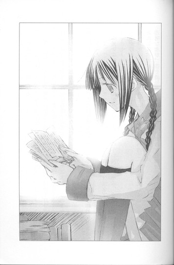
遠子ちゃんの声で語られるクロエーの言葉が、あたしの気持ちに重なって、胸が刺されているみたいに、痛くなる。
ずっと、自分は変になってしまったんだって、思ってた。
木尾の言葉や、視線や、動作のひとつひとつに心が揺れて、自分で自分がわからなくなって、赤面したり涙ぐんでしまったりして、病気みたいだって。
けど、あたしの木尾への気持ちは、恋だったんだな。
あたしは、ずっと木尾に恋をしていたんだ。
『あの人の笛になって、あの人の息を吸えたらどんなにいいだろう。それとも山羊になって、あの人に飼ってもらえたら......』
『今はダフニスのせいで眠れない』
木尾が好き。
もう、友達じゃいられない。
あたしは、木尾に恋人にしてほしいんだ。
透明な水が、谷を滑り落ちてゆくように、するりと答えに辿り着く。
けど、すぐにまた胸がきゅっと締めつけられて、暗い気持ちになった。
木尾は、あたしのことを、そんな風に思っていない。
「遠子ちゃん、クロエーはダフニスに恋をしたけれど、ダフニスはクロエーのことを、どう思っていたの？」
遠子ちゃんが花のように、微笑む。
「恋に気づくのは、女の子のほうが早いの。男の子は鈍感だから、なかなか恋に気づけないのよ。でも、大丈夫。ダフニスもちゃーんと、クロエーに恋をするわ」
「本当に？」
物語の中のことで、現実のことじゃないのに、すがるような気持ちで尋ねてしまう。
どうやって、ダフニスは恋に気づいたの？
遠子ちゃんが、微笑んだままうなずく。
「ええ。本当よ。クロエーから不器用な接吻を受けたダフニスは、それまで見えなかったものが、いきなり見えるようになったみたいに、クロエーを意識するようになるの。『いったいあのクロエーの接吻は、ぼくをどうしてしまったんだろう』──『ぼくはこれまで仔山羊にも、生れたての小犬にも、ドルコーンがくれた仔牛にもよく接吻してやったものだけれど、今度のような接吻ははじめてだ』って──」
接吻、キス？
あたしはたちまち赤くなった。
き、キスなんて──自分から、木尾に──そんなの、無理っ、できないよ！
「遠子ちゃん、キスしたことある？」
「え」
遠子ちゃんの頬も、みるみる染まる。それまで、お姉さんぽく落ち着いて話していたのが、両手と三つ編みをぱたぱたさせて、
「えっと、その、いつかはその......したいなーと思うけど......ほ、ほら、こういうのって、相手がいないと、その......できないでしょ......。わたしは恋愛大殺界中で、不純な気持ちは封印しようって、決めたばかりだし......相手の意思もあるし、そ、そういうこと考えたらいけないわ......っ」
「そうだよね、やっぱり向こうも自分のこと好きになってくれなきゃ、キスなんてできないよね」
すると遠子ちゃんは、赤い顔のまま言った。
「そうね、キスはちょっと......難しいかもしれないわね......。けど！要は気持ちを伝えるのが大切ということよ。このあと、ダフニスとクロエーの間には、いろいろな困難が訪れるけれど、最後は二人の素性も明らかになって、みんなから祝福されて、結ばれるのよ。蜂蜜みたいに甘々のハッピーエンドよ」
「......でも、全員が、恋した相手と結ばれるわけじゃないし......」
物語の中なら、ヒロインとヒーローは相思相愛だろうけれど、現実はそうじゃない。
木尾はずっと恋をしないままかもしれない。あたしじゃない他の誰かに、恋をするかもしれない。
遠子ちゃんが、パイプ椅子から身を乗り出す。
「クロエーだって、ダフニスだって、相手の気持ちがわからなくて、不安だったのよ。恋をしたら、誰だってそうよ。だから、まずは一歩踏み出してみるの。
二千年も前から、女の子はみーんなそうしてきたのよ。でなきゃ、男の子はダフニスみたいに鈍くて頼りないから、気づかないわ」
不安に震えるあたしの目を、星みたいにきらきらした目で、のぞきこむ。
「今の日本にも、たくさんのクロエーがいるわ。みんな、ダフニスを振り向かせようと、頑張っているわ」
遠子ちゃんが、にっこり笑った。
「放課後、クロエーに会いに行ってみない？ 果歩ちゃん」
◇ ◇ ◇
駅ビルの地下に特設されたチョコレート売り場は、買い物にきた女の子たちであふれていた。
「と、遠子ちゃん、どこ」
「こっちよ、果歩ちゃん」
人混みの中、遠子ちゃんが白い手を振る。
一歩進むにも、誰かにぶつかってしまう状態で、巨大な満員電車の中を、歩いているみたいだ。
真剣な顔で、チョコとにらめっこしている女の子、いくつものチョコをカゴに入れて、友達ときゃあきゃあ騒いでいる女の子、手提げの紙袋に入ったチョコを、頬を紅潮させて受け取っている女の子。
たくさんのクロエーがいる。
あちこちから、甘い内緒話が聞こえてくる。
「やっぱりナッツ入りのほうが、関くん、好きだと思う？」
「うわーん、相沢先輩、甘いもの嫌いなんだっけ、どうしよう」
「ねぇねぇ、こっちのパッケージのほうが、豪華で本命っぽいかな」
「あ～、も～っ、神様っ、お願いっ！ 坂巻くんが受けとってくれますように」
みんな、ダフニスに恋している。
ダフニスを、振り向かせようと頑張っている。
ここにいる全員の恋が、叶うわけじゃない。
ダフニスは、クロエーに振り向いてくれないかもしれない。突き返されたチョコを、泣きながら食べることもあるかもしれない。
それでも、チョコを選ぶ女の子たちは、どの子も元気いっぱいで、明るく生き生きして見えた。
遠子ちゃんも楽しそうにチョコを見て回っている。
「見て見て、果歩ちゃん。この熊の形のチョコレート、すごく可愛いわ。囓ると、『くまのパディントン』みたいに、甘くて陽気な味がするのかしら。ねぇ、このチョコなんて、木尾くんにどうかしら。
こっちのトリュフも、お酒が入っていて、くらっときそう。きっとメリメの『カルメン』みたいな情熱的な味ね！木尾くん、アルコールはいけそう？
わーっ、この白い陶器に入ったキスチョコも、洒落てるわ！ピンクがクランベリーで、紫はブルーベリーですって。きっとマザーグースの、ラベンダーの詩みたいに、可愛くて甘酸っぱい味だわ！」
まるで自分のチョコを選ぶように、はしゃいでいる。
「あー、やっぱりバレンタインって、ドキドキするわね。こんなにたくさんのチョコレートの中から、大好きな人への贈り物を選べるなんて、とっても素敵ね！」
遠子ちゃんの勢いに押されて、あたしは遠子ちゃんお薦めの、陶器に入ったキスチョコを買ってしまった。
キスの代わりに、キスチョコで勝負っていうか......。包装もブルーの箱に金色のリボンがかかっていて華やかで、本命チョコですと主張しているみたいだ。
遠子ちゃんも、家の人やお世話になっている人に、いくつかチョコを買ったみたいだ。
「果歩ちゃん、もう一軒、つきあってくれる？」
会計をすませたあと、遠子ちゃんがほんのり笑って言った。
遠子ちゃんと向かったのは、ラッピング用の包装紙やリボンが置いてあるフロアだった。こっちもチョコレート売り場ほどではないけど、混んでいる。
遠子ちゃんはそこで、うきうきと包装紙を選びはじめた。
「......遠子ちゃん、手作りもするの？ それともラッピングだけ交換して、手作りっぽく見せるの？」
「いいえ。これは特別なの」
「特別？ 本命用ってこと？」
遠子ちゃんが、ぽっ！ と頬を赤らめる。
「えーと、そ、そういうのではないのだけど......やっぱり、せっかくバレンタインデーなんだから、なにかあげたいかなぁって......。だから、少しずつチョコを集めていたの。けど、そのままあげるのは、あんまりだし......。まったく不純な気持ちはないのよっ。ただその......せめて外見だけなら、うんと可愛くしても、いいかなーと思って」
「遠子ちゃん、言ってる意味がよくわからないよ」
遠子ちゃんは、真っ赤な顔でおろおろしたあと、照れくさそうににっこりした。
「つまり、〝特別な義理チョコ〟ということよ」
◇ ◇ ◇
バレンタインの朝、あたしはチョコレートの入った手提げの紙袋をぎゅっと握りしめ、通学路の途中で、木尾を待った。
もしかしたら、宮島さんのように、受け取れないと返されてしまうかもしれない。
そういう気はないからと。
木尾に憂鬱な顔をさせてしまうかもしれない。
それでも──。
白いもやの向こうから、木尾がやってくる。
胸の中で薄紅色の毬が、ぽーんと跳ねる。
不機嫌そうに考えごとをしながら近づいてくるのを見て、足がすくんで、喉がぎゅっと締めつけられた。
木尾があたしに気づく。
目を見開き、息をのんで、あたしを見つめる。
頬が焼けるように熱くなる。ダフニスにキスをしたクロエーは、こんな気持ちだったんじゃないかしら。逃げ出したいほど怖くて、恥ずかしい。
けど、あたしの勝負は、ここからだ。そうだよね、遠子ちゃん。
木尾の頬も、少しだけ赤い。
「おはよう」
「あ、ああ」
ぎこちない挨拶を交わしたあと、あたしはたくんさんのキスがつまった紙袋を、木尾のほうへ差し出した。
〝文学少女〟の今日のおやつ ～『ムギと王さま』～
こんな遠子先輩を見た。
ぼくが、まだ一年生の頃だ。
鬱陶しい梅雨が明け、太陽が暴力的な熱を放出しはじめる季節。その日は、いつもより早くに登校した。日射しを避けて校舎の壁に沿って歩いていたら、足元に靴が一足と通学鞄がひとつ、並んでいた。
「？」
なんの変哲もない黒のローファーは、中に白いソックスが小さく畳んで、突っ込んである。鞄も、学校指定のものだ。
足を止め、しげしげのぞき込んだあと、視線を上に向ける。
そこには地面にがっつり根をおろした、巨木がそびえていた。
「......」
ふしくれだった幹を、そのまま上へ上へと辿ってゆく。
すると、緑の葉の間から、猫の尻尾のような黒くて長い三つ編みが、ぶらさがっているのが見えた。
「！」
唾を飲み込み、さらに視線を上げると、白い生足が！制服のひだスカートが！白い上着と、胸もとのターコイズブルーのリボンが！細い首と半袖から伸びる白い手が！木の枝に腹這いになっている遠子先輩が！次々と視界に飛び込んできた。
なにをやってるんだ、あの人は！
文芸部に引っ張り込まれて、はや三ヶ月。本を破いてぱりぱり食べたり、ハイテンションで蘊蓄を垂れ流したり。はた迷惑な先輩の〝奇行〟にはじゅうぶん慣らされたつもりでいたけれど、これには唖然とした。
遠子先輩は、獲物を狙うハンターみたいな眼差しで、枝の先のほうへ這ってゆく。
頬を赤く染め唇を噛み、えらく真剣な表情で、見ているこっちまで息がつまりそうだ。
白い手が、制服の胸のリボンをするりとほどく。
その瞬間、バランスが崩れた。
「わっ！」
「きゃっ！」
ぼくは慌てて、木の下へ駆け寄った。
遠子先輩はぺたんこの胸を枝に押しつけ、両手を回して、必死にしがみついている。
ターコイズブルーのリボンが、ぼくの鼻先を、ひらひら舞いながら落ちてゆく。
噴き出た汗が、引いてゆく。
良かった......。とりあえず無事みたいだ。
「やだっ、なんで心葉くんがいるの!?」
芋虫のように枝に張りついた遠子先輩が、真っ赤な顔で問いかける。
ぼくはリボンを拾い上げ、苦い顔で答えた。
「今日は日直なので、早めに登校したんですよ。遠子先輩こそなにをしているんですか」
「えっ......！ それは......っ。鳥の雛が、地面に落ちちゃったから、巣に戻してあげたのよ！」
「鳥の巣？ ツバメですか？ ヒバリですか？ぼくには見えませんけど」
「そ、そうね。心葉くんの位置からは、ちょっとわかりにくいかも。でも、ほら雛の鳴き声が聞こえるわっ」
ちちちち......というさえずりは、あきらかに別の方角から聞こえてくる。
遠子先輩が、恥ずかしそうに眉を下げる。ぼくは肩をすくめた。
「じゃあ、雛も無事に巣に戻ったことですし、おりてきてください」
「......スカートの中、見ないでね」
「見ません」
横を向いて溜息をつくと、遠子先輩は「きゃっ」とか「ひゃっ」とか、こっちの心臓が止まりそうな危なっかしい声をあげながら、帰還したのだった。
「ぅぅ、手が、がさがさになっちゃったわ」
「制服に葉っぱがついているし、三つ編みのリボンもほどけそうですよ。朝から非常識なことはやめてくださいね。もともと存在が非常識なんですから」
制服のリボンを返しながら言うと、遠子先輩は頬をふくらませた。
「ひどーい、先輩に向かって！」
ぼくはかまわず、さっさと背中を向けて歩き出した。
木の枝、リボン......。
それに関するなにかを、ごく最近、校内で耳にしたような気がしたのだけど......。
まぁ、いいや。
他人のことには、関わりたくない。
◇ ◇ ◇
放課後。文芸部へ行くと、窓際にターコイズブルーのリボンが干してあった。
汚れてしまったので、洗ったのだろう。
金色のクリップで挟んだリボンが、窓から吹き込む風に、ひらひら揺れている。
その下のほうに、今朝遠子先輩がしがみついていた木が、枝葉を茂らせている。
「みてみて、今日の〝ごはん〟は豪華なのっ」
ふくれっ面だった遠子先輩は、ぶ厚いハードカバーの本を胸に抱いて、くるくる回っていた。
「エリナー・ファージョンの『ムギと王さま』よ。ファージョン自身が選んだ二十七篇を、ぜ～んぶ収録した完全版よ」
至福の表情で微笑み、本にキスし、窓際のパイプ椅子にそそくさと腰かける。
「あ～。この重み、この手触り、たまらないわ。舌がむずむずするわ」
「なら、今日は三題噺はナシでいいですね。ぼくは帰りますから、ゆっくりお食事してください」
「あら、それは別よ」
遠子先輩が、けろりと言ってのける。
「部活へ来たのだから、ちゃんと部活動しなきゃ。
今日のお題は、〝リボン〟〝教会〟〝足つぼマッサージ〟よ。
制限時間はきっかり五十分、はい、すたーと！」
ポケットから出した銀色のストップウォッチをかちりと鳴らし、自分は上履きを脱いで椅子に体育座りし、読書をはじめる。
ぼくはやれやれと思いながら、古い樫の木の机に、五十枚綴りの原稿用紙を置き、ＨＢのシャーペンでマスを埋めていった。
その間、遠子先輩はとろけそうな表情で、ページをめくり、端を指で小さく破いては口へ運ぶ。
かさこそと密やかな音を立てて咀嚼し、にっこりと飲み込み、溜息をもらすのだ。
「あぁ～、美味しい～～～～～～。
ファージョンの物語は、透き通ったボンボンのようね。
淡い桜色や、水色や、若草色、たんぽぽ色に、すみれ色、そんな宝石みたいな色とりどりの小さな粒を、金色の小箱の中から、ひとつずつ取り出して、かりかりと囓る感じなのっ！
お砂糖でできた透明な薄ぅい膜を、前歯でそっと破ると、中から果実のお酒の香りがする爽やかなシロップが、とろりとこぼれ出てくるのよ」
破ったページを口に含み、うっとりと目を細め、この上なく幸福そうに語り続ける。
「エリナー・ファージョンは、一八八一年のロンドンに生まれた女流作家よ。お父さんも小説家で、ファージョンの家には子供の頃から本があふれていたわ。
『ムギと王さま』の前書きで、そのことに触れているのだけど、二階にある子供部屋も、一階のお父さんの書斎も、本でいっぱいで、食堂の壁際から居間へ、居間から階段をのぼって寝室まで、本がぎっしりと壁を埋めていたのですって！
なかでも〝本の小部屋〟と呼ばれる部屋には、あらゆる本が、花や草がはびこるように雑多に存在していて、天井に届くほど積み上げられていたそうよ。
あぁ、なんて素敵なんでしょう。夢のような光景ね」
遠子先輩が澄んだ声で、本の一部を読み上げる。
「──『わたくしに魔法のまどをあけてみせてくれたのは、この部屋です。そこのまどから、わたくしは、じぶんの生きる世界や時代とはちがった、またべつの世界や時代をのぞきました』
彼女は、ご両親の考えで、他の子供たちのように学校へ通ったことがなかったの。けれどおうちには、ご両親の知人の作家や音楽家が訪ねてきて、お芝居や音楽会へ連れて行ってもらったわ。
それ以外の時間は、おうちにある大量の本を読みふけったり、お兄さんと二人で、空想の世界の登場人物になって過ごしたのよ。
それがどんなに素敵で満ち足りた毎日だったのか、前書きを読めば伝わってくるわ。
子供時代のファージョンは、きっと、きらきら舞い踊る金色の塵の中で、大量の本に埋もれて、空想の世界を旅していたのね。
ファージョンにとっては、空想は現実で、現実もまた空想で、その境は本当に曖昧で、息をするくらい自在に、楽々と、行き来できるものだったんじゃないかしら」
微笑む遠子先輩の周りにも、光の粉がちらちらと舞っている。
本の塚に埋もれた小さな部屋で、やわらかな光に包まれて、本をめくる遠子先輩の姿は、そのまま幻想の国の住人のようだった。
目を輝かせ、頬を紅潮させ、さらに楽しげに語り続ける。
「ファージョンの自撰集『ムギと王さま』には、そんな、色とりどりのボンボンみたいな空想が、あふれているわ。
たとえばこの『ヤング・ケート』は、若い女中さんのお話よ。
お仕えするおくさまから、牧場や川や森へ行ってはいけませんと言われたヤング・ケートは、そこで、みどりの女や、川の王さまや、おどる若衆に会って、忘れられないような楽しい時間を過ごすのよ！
成長して、自分がおくさまと呼ばれる立場になったとき、ケートはみんなに生き生きと告げるの。
さぁ、牧場へ、森へ、川へ行っておいで！ って。そこで運良くみどりの女や、川の王さまや、おどる若衆に会えるかもしれないからって！
『西ノ森』と『レモン色の子犬』も、ぜひ読んでほしいわ。
どっちも、甘くて爽やかで、可愛いの。
『西ノ森』は、ちょっとえばりんぼの若い王さまと、ずけずけものを言う、小間使いのシライナのコンビが最高よ。
二人の会話に、舌がくすくす笑ってしまうわ。
『身分をわきまえろ、シライナ！』とムッとする王さまに、『ああ、そう。ご用は、もうこれだけ？』と、平然と答えてみせるのよ。
花嫁探しの真っ最中の王さまが、求婚するとき相手に捧げる詩が、味があって素敵なの。
『レモン色の子犬』の中でも、木こりの青年が、王女さまにラブレターをあげていたわね。
『すきな人へ
あなたは、わたしの犬のようにきれいだ。だから、わたしはあなたがすきだ。
王女さまはヒバリのようにはしゃいで、この手紙を大切に大切にしまっておくのよ。
まるで、初めて恋をした中学生みたいでしょう？幸せで、くすぐったくて、美味しいの。レモン味でも、酸っぱさはほとんどなくて、すっきりした甘ぁい味なのよ。
『サン・フェアリー・アン』──これも胸に染みるお話よ。
セレスティーンという名前のフランス生まれのお人形が、戦争中に兵隊さんに拾われてイギリスへ連れてゆかれて、そこでサン・フェアリー・アンと名付けられて、小さな女の子の手に渡り、さらにその子の一人娘のキャシーに受け継がれるの。
小さなキャシーが両親を失って、ひとりぼっちになってしまったとき、サン・フェアリー・アンは、キャシーに素晴らしい出会いをもたらしてくれるのよ！
あっ、でもでも『しんせつな地主さん』もラストで号泣してしまうし、『小さな仕立屋さん』も、とってもキュートで美味しいし、『七ばんめの王女』も素敵だし、『貧しい島の奇跡』も『パニュキス』も！どれもみんなお薦めよ！」
透き通った七色のボンボンをつまむように、遠子先輩が千切ったページを、ひらひらと口に運ぶ。
「ああ、体が雲のように軽くなって、ファージョンの想像の世界へ迷い込みそう」
「じゃあ、これはもういいですね」
三枚の原稿用紙にまとめた三題噺を、ノートからぴっとはずし、ゴミ箱に落とそうとする。
遠子先輩は椅子から転げ落ちるようにして、床に膝をつき、原稿を奪い取り、胸にしっかり抱きしめた。
「きゃあ、な、なにするの、心葉くん。食べ物を粗末にしちゃダメよ」
目をむいて訴えたあと、床にしゃがみ込んだまま、にっこりした。
「もちろん、心葉くんのおやつもいただきます」
五分後──。
教会の聖堂の中にリボンをぶらさげて、首つり自殺を試みた青年が、霊安室から這い出てきた手に、よってたかって足つぼマッサージをされるという話を完食した遠子先輩は、椅子につっぷし、三分ほどあっちの世界に逝っていた。
「......ぅう」
よろよろと顔をあげ、涙に濡れた目で、恨めしそうに文句を言う。
「ひどい......っ、ひどいわっ。いっつも、ヘンなものばっかり食べさせて。心葉くん、わざとやってるでしょう。わたしが泣くのを見て楽しんでいるでしょう。意地悪っ、鬼っ、悪魔っ、変態っ」
ぼくは机の上を片づけながら、冷たく言った。
「......なら、いい加減、こんなことやめればいいんですよ。
どうして、毎日ぼくに三題噺を書かせるのか、理解できません。
泣くほどマズイものを、毎度残さず食べきる遠子先輩のほうが、変態の妖怪ですよ」
てっきり『妖怪じゃないもん。文学少女だもん』と、いつもの調子で返ってくるかと思ったら、黙っている。
顔をあげると、ショックを受けているような哀しそうな目で、ぼくを見ていた。
「......」
急に、胸が握りつぶされたように痛くなり、ぼくは慌てて鞄にペンケースや原稿用紙を入れた。
部屋から出て行こうとしたとき、
「心葉くん」
ドアのところで、呼び止められた。
息をつめて振り返ると、遠子先輩は全然気にしてないという風に、からりと笑ってみせた。
「明日も、部活に来てね」
「......さようなら」
皮膚がちりちり刺されるような後ろめたい気持ちで、部室を離れた。
遠子先輩がへばりついていた木の前を通りかかったとき、上からターコイズブルーのリボンが、幻のようにゆらめきながら落ちてきた。
「！」
リボンをつかみ、驚いて窓を見上げる。
そこに遠子先輩の姿はない。
リボンが風で飛ばされたことに、気づいていないのだろうか......。
と、そのとき。
一陣の涼しい風が吹き抜けてゆくように、教室で誰かが話していたことが、ふいに、頭をよぎった。
多分、女子がかたまってしゃべっていたのを、たまたま耳にしたのだろう。
──学校の木の枝に、誰にも見られずにリボンを結べたら、願いがひとつ叶うんだって。
部室から見える、大きな木。
枝に、芋虫みたいにへばりついていた遠子先輩。
真剣な眼差し。
「......」
手の中のターコイズブルーのリボンを、ぼくはじっと見おろした。
◇ ◇ ◇
翌日の放課後。いつものように文芸部へ行くと、直後に遠子先輩がやってきた。
ぼくを見て、ちょっと目を見張り、それから花が開くようににっこりする。
「こんにちは、心葉くん」
「......こんにちは」
短く挨拶すると、ますます嬉しそうに顔をほころばせ、それからまたちょっと目を見張る。
「ほっぺのひっかき傷、どうしたの？」
「......タオルに、砂粒がついていたんです」
「そう。危ないわね」
「......」
ぼくは、静かに顔をそむけた。
遠子先輩が三つ編みを揺らし、軽やかな足取りで窓のほうへ歩いてゆく。
「ああ、暑くなったわね～。もうすっかり夏なのね」
笑顔で窓を開き、吹き込む風を顔いっぱいに浴びる。
「あら？」
急に怪訝そうな声を出し、窓から少し身を乗り出し、目をこらした。
枝の先で、ひらひら揺れる、ターコイズブルーのリボンを見つけたのだろうか......。
「ええっ」
すっとんきょうな声を上げる。
「わ、わたしの制服のリボン......！ 昨日、ここに干してあったやつよ。なくしちゃったと思っていたのに、木の枝に結んであるっ」
ぼくは横を向いたまま、そっけなくつぶやいた。
「......風で飛ばされたんじゃないですか」
遠子先輩が、ぼくのほうを振り返る。
ぼくの頬の擦り傷を見て、ぼくの手を見て、ぼくの制服の胸もとを、じっと見る。
そこに、小さな緑の欠片がついていて、それが葉っぱの端切れだと気づいて、ぼくは慌てて、指で払った。
遠子先輩が目をなごませ、唇をほころばせ、ゆっくりと微笑む。
今日一番嬉しそうな、まぶしい笑顔だった。
それを見て、擦り傷だらけの手のひらが、火に触れたように熱くなる。
遠子先輩がなにを願ったのかなんて知らないし、どうでもいいのだけど......。
ぼくは急いでまた横を向き、なんにも見なかったふりをして、机の上に、ペンケースとノート型の原稿用紙を並べていった。
無口な王子と歩き下手の人魚
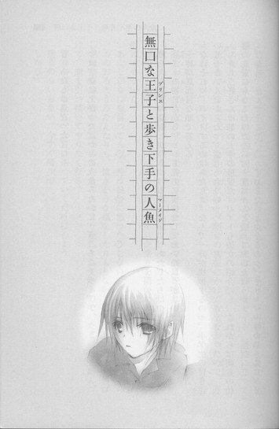
昔、あたしは鳥だった。
今は、陸に上がったばかりの人魚みたいに、ぎこちなく歩く。
◇ ◇ ◇
「ついてこないで！」
熱を含んだ夏の陽射しが照りつける朝の道路で、あたしたちはやりあっていた。
「バイトの初日だから、オレも先方に挨拶をしておいたほうがよいと思って」
一詩が真面目な顔で答える。
「なにそれっ、バイトするのはあたしよ。なんで一詩が挨拶するのっ、小学生の付き添いじゃないんだからねっ、信じられないっ」
「しかし三好さんは姉の大学の後輩だ。バイトも彼女の紹介だし、これからは朝倉の仕事の先輩にもなるわけだから、一度ちゃんと会っておいたほうが」
「だから、なんでそこで、会っておきたいとかなるのっ。そりゃ、一詩の姉さんにバイトの世話してもらったのは、ありがたかったけど──これ以上はお節介！単なる迷惑！てゆーか、人の出勤時間を見計らって迎えに来るとか、キモイ！道路に立ってんの見たとき、ストーカーかと思ったわよ」
「驚かせてしまって、すまなかった。ゆうべ朝倉の携帯にかけても出なかったので、迎えに行くとメールを打っておいたんだが」
それは見た。
見たわよ。でも、ウザイので放っておいた。それで朝まで忘れてたんだ。
「メールを見ていなかったのなら、本当にすまなかった」
困っているような顔をし、あっさり謝る。それが悟りを開いたお坊さんみたいで、余計にムカついた。
あたしがなにを言っても、一詩は絶対に怒ったりしない。
おろおろとうろたえたりも、泣きそうな顔をしたりもしない。口を閉じ、背筋を伸ばし、端整な顔で静かに見つめている。あんまり超然としているので、たまに足を踏んづけて、顔を引っ掻いてやりたくなる。
「朝倉が嫌がるなら、今日は送っていくだけにしよう」
「送るのもいらない。今すぐ帰って」
「しかし」
「初出勤から男同伴で来たって言われて、恥かくのはあたしなのよ。空気読みなさいよ」
「では、なにかあったら、オレの携帯にかけてくれ」
「なにもないから、ご心配なく」
「朝倉、そっちは石段がある。向こうの道路から行くほうが──」
「階段くらい、目をつぶってても昇れるわ！」
ああ、苛々する。
こいつ、本当にあたしと同じ歳なの？高校三年生なの？言動がいちいちジジくさいったらない。
容赦なく降り注ぐ夏の日に目を細めながら、両脇に挟んだアルミの松葉杖で、石段を一段一段昇ってゆく。
下で心配そうに見上げているのが、わかっていたので、絶対に振り返らなかった。
春に退院してから、三ヶ月になる。
今、あたしはマンションで、一人暮らしをしている。
足がまだ完全には動かないので、不自由することもいっぱいあるけれど、自分のことを自分でできるのが、なにより嬉しい。
一時間くらいかけて、天井の蛍光灯の付け替えが終わったときなんか、達成感で頬がとろけて、
「ふふん、たいしたことなかったわね」
と、誰もいないのに勝ち誇ってしまったほどだ。
来年から定時制の高校へ通えたちいいなと思い、その準備もしている。
本当は、学費や生活費も自分で稼げるようになりたいけど......それはまだ無理なので仕方がない。
けど、ほんの少しでも働けたらという話をしたら、一詩がお姉さんのツテで、児童館の受付のバイトを見つけてきてくれた。
夏休みの期間中、週五日、朝九時から夕方五時半までで、受付席に座って、子供たちが悪さをしたり、怪我をしないよう見ていてくれたらいいという。これで日給七千円は、美味しい。
バイトがすんなり決まったのは、悔しいけど一詩のおかげで、それはまぁ......感謝している。
けど、だからって、バイト先にまでついてきて、挨拶をするなんて、やっぱりありえない！
あたしのこと、向こうになんて説明してるんだろう。
体が不自由なので迷惑をかけるかもしれませんが、よろしくお願いします、なんて言われてそうでイヤだ。
完璧に仕事をこなして、あたしは一人でなんでもできるってことを、一詩に教えてやらなきゃ。
「今日からお世話になる朝倉です。よろしくお願いします。足が少し悪いですが、日常的なことはほとんどできますので、どんどん仕事を言いつけてください。なんでもやります」
猫をかぶって、爽やかに微笑む。
一詩の上の姉さんの大学時代の後輩で、この児童館の職員をしている三好という人は、化粧っけの少ない落ち着いた雰囲気の女性だった。
職員は彼女と、もう一人、久保田という年配の男性しかいない。
建物自体も小さくて、入り口を入ってすぐに下駄箱があり、そこで靴を脱いで上靴に履き替える。
中は、保育園のお遊戯室のような雰囲気で、壁に子供が描いた絵が貼ってある。足の低いテーブルがあり、椅子があり、本棚があり、積み木や竹馬やゴムボールの入った箱もあった。こちらのスペースが学習用で、その奥が運動用のスペースになっていて、そこはなにもなく、がらんとしている。
受付は、学習用のスペースの出入り口のところにあった。といっても、小さい机と椅子が置いてあるだけなんだけど。
「朝倉さんは働き者なのね」
三好が、親切そうな笑みを浮かべる。
「けど、それほど仕事はないの。受付に座っていて、来館者があったら、このノートに名前と年齢を書いてもらって」
「はい、他には」
「子供たちの様子を見ていてくれればいいわ。といっても、いたずらしたり、乱暴したりする子なんて、めったにいないけど」
「他には？」
「とりあえずそれだけ。わたしたちは職員室にいるから、なにかあったら声をかけてね。きっと暇だと思うから、本を読んだりお勉強をしてもかまわないわよ」
あたしに気を遣ったのではなく事実らしいことは、開館後一時間もすると判明した。
子供が来ない。
全然来ないっ。
小学校はもう夏休みに入っているはずなのに、声すら聞こえない。ひょっとして、この地区に子供はいないんじゃないかしら。そう勘ぐってしまいそうなほどの静けさだ。三好も久保田も職員室へ行ってしまったので、あたしは一人ぽつんと受付に座っていた。
ふんっ、二年以上病院のベッドで過ごしてきたのだもの、退屈になんか慣れているわ。
心の中で、自虐的につぶやいたものの、来館者がないまま二時間が経過する頃には、固い椅子に座って、壁に貼られたクレヨン描きの下手くそな絵を、ぼんやり眺めるのに、うんざりしていた。
ようやく一人、男の子が入ってきたとき、思わず溜息を漏らしてしまったほどだ。
「いらっしゃい」
子供なんて、うるさくて我が儘で、あの甲高い声を聞くだけで背中がぞわぞわするほど大嫌いだけど、とりあえずここでも猫をかぶっておく。
男の子は見慣れぬ人がいて、びっくりしたのか、目を丸くして、まじまじとあたしの顔を見ている。それから机の横に立ててある、アルミ製の松葉杖を見つけて、そこでまた目をちょっと見開き、興味ありそうに眺めた。
「ノートに名前と歳を書いてね」
「う......うん」
差し出した鉛筆を受け取り、ぐーに近い形で握りしめ名前を書きながら、まだちらちら杖を見ている。
「これ、先生の？」
「そうよ」
いきなり先生と呼ばれたことに、胸の奥が小さく揺れ動くような戸惑いを覚えながら、答える。
「さわっても、いい？」
「ダメ」
顔はにっこり。けど、声に冷ややかさを込めて、きっぱり拒絶する。子供は図に乗るから、しっかり突き放さなきゃいけない。
男の子はびくっと肩を震わせ、あたしから顔をそらすと、慌てたようにフロアの奥へ入っていった。
本棚から少年マンガの単行本を抜き出し、読みはじめる。
また静けさが戻った。
ああ......ヒマ。
お昼になり、一時間、三好が受付を替わってくれた。
家から持参したシソのおにぎりを職員室で囓りながら、午後もこんな調子なのかと、気が遠くなってしまう。
「普段から、こんなに人が来ないんですか」
「そうだなぁ。最近は夏休みも塾へ行く子や、家でゲームなんかで遊ぶ子が増えたし、子供の数自体、減ってるからね」
年配の職員が、呑気そうに答える。
彼は、冷蔵庫から冷えた麦茶を出し、コップに注いで勧めてくれた。世間話をしている間、あたしが松葉杖をついている理由を尋ねなかった。きっと、一詩のお姉さんから聞いて、知っているのだろう。
あ、なんかまたムカついてきた。
あれこれ詮索されるのはうっとうしいけれど、なにも訊かれないのも、もやもやしてイヤな感じだ。
「麦茶、ごちそうさまでした」
とりあえず、イイコっぽく微笑んでおいた。
結局、この日の来館者は、七名だった。
一人で来る子が多く、みんなマンガを読んだり、テーブルで宿題をしたりして、おとなしく過ごしている。
はじめに来た男の子のように、松葉杖に興味を示して、さわってもいいかとか、先生は怪我をしているのかとか、尋ねる子もいたけれど、適当にやり過ごした。
あたしが、顔はニコニコしているけれど、口調が意地悪だったので、子供たちはすぐに近寄ってこなくなった。ヒマだけど、下手になつかれたらうっとうしいので、そっちのほうがずっといい。
閉館時間ぎりぎりまで、ぐずぐずマンガの続きを読んでいる連中を追っ払ったあと、テーブルを拭いたり床を掃いたり、簡単な掃除をして、バイト終了となった。
「お疲れ様、朝倉さん。明日もよろしくね」
「ありがとうございました。お先に失礼します」
最後まで猫をかぶりとおし、児童館をあとにする。
夕方六時前。
まだ明るいけれど、空気が白っぽくかすんでいる。それに、暑くてべたべたしている。クーラーのきいた部屋との温度差に、めげそうになる。
「はーっ、なにもしないのって、疲れる」
工場のベルトコンベアとかで、機械の組み立て作業でもしたほうがよかったんじゃないかしら。
「あ」
曲がり角のところに、背の高いすっきりした顔立ちの男が私服で立っているのを見て、あたしはしかめ面になった。
「また、待ち伏せ？」
「この先の図書館で、受験勉強をしていたんだ。ちょうど朝倉のバイトが終わる頃だと思って来てみた。たまたまだ」
「それは、たまたまじゃなくて、わざとでしょ」
「そうか、すまない」
「すまないと思うなら来ないで。迎えとか、子供じゃないんだからいらないって言ったでしょう」
「図書館の閉館時間が、ちょうど児童館の閉館時間と一緒なんだ」
「なら、別の図書館へ行けば」
あたしは冷たく言って、一詩の横を通り過ぎた。
一詩が、かまわずあたしの隣に並ぶ。歩く速度ではどうしても勝てないのが、悔しい。こっちにあわせて、ゆっくり歩いてるのがわかるので、余計に苛々する。
「バイトは、どうだった」
「別に、仕事も楽だし、ヒマすぎなくらい」
「そうか、よかった」
短い言葉で、簡潔に答える。なので会話がまったく広がらない。こっちも話す気なんてないので、すぐに沈黙が落ちてしまう。
こういうときコノハは、あたしが気を悪くしてるんじゃないかと心配して、一生懸命話しかけてきた。
あたしが、意地悪してわざと黙っていると、どんどん眉が下がっていって、ベソをかきそうな顔になるのだ。
あたしがその顔をのぞきこんで、笑いながら、
『それで？ そのあとどうなったの？ コノハ？』
とコノハの話に興味を示してみせると、とたんに目がパアッと輝いて、顔一面に嬉しそうな笑みが広がる。
まるで、尻尾を千切れそうなほどぱたぱた振っている子犬みたいに、コノハはあたしの行くところには、どこへでもついてきたし、あたしが待ってろって言ったら、何時間でも待っていた。
そうして、あたしがうんと遅刻して現れると、しょんぼりうなだれていたのが、顔を上げて嬉しくてたまらないという表情になり、必死に尻尾を振って、『よかった！美羽！』と駆け寄ってくるのだ。
一詩も、犬みたいにあたしにぴったりついてくる。
あたしが待てと言えば、コノハのようにずっと待っているだろうし、来いと言えば夜中でも駆けつけるだろう。
けど、同じ犬でも、コノハが愛玩用の小型犬なら、一詩は大型の番犬とか盲導犬くらい違いがある。
常にあたしの側にいて、あたしがよろけるとさりげなく手を貸したり、安全な道へ誘導しようとする。尻尾を振って意思表示することもないし、叱ってもしょんぼりしたり、うろたえたりしない。
きっと一詩は、自分のほうがあたしより頭がよくて、力も強くて、なんでもできるから、あたしのことを助けてやらなければならないと思っているに違いない。
コノハといるとき、あたしはコノハより立場が上だった。コノハのなにもかも、あたしが握っていて、コノハのすべてはあたしが決めた。コノハは、あたしがいなければなにもできない子だった。そういう風に、あたしがしつけた。
ところが一詩といると、逆にあたしは、面倒を見てもらう立場になってしまう。
あたしの命令に従うどころか、いちいち、それはよくないだの、しないほうがいいだの、危ないだのと、真面目な顔で反対する。いくらあたしが怒っても、引っ掻いても、何時間でも辛抱強く説得を続ける。
そうすると、あたしのほうが駄々をこねている子供みたいな気がして、恥ずかしさに首の辺りが、ちりちりと熱くなってくるのだった。
今日も、ぶすっとした顔で黙り込んでいるあたしの隣を、一詩は気にする様子もなくゆっくり歩いている。沈黙に耐えられなくなるのは、いつもあたしのほうが先だった。
「......受験生のくせに、他人の世話を焼いているなんて、ずいぶん余裕ね。気を抜いていると落ちるわよ」
一詩が、やわらかく微笑む。涼しげで端整な顔が、そうするとすごく優しい雰囲気になる。
「そうだな、ずっとＡ判定だからといって、安心してはいけないな」
「ッッ、そういうとこが嫌味っぽいのよ。たまには、ＤとかＥとか、とってみればいいんだわ」
「いくら模試でも、わざと手を抜くのはよくないと思うが」
あー、ますますムカツク。
「一詩っておもしろみがない。一緒にいても、つまんない」
「姉にも、よく言われる」
真面目に考え込む様子に、カチンとした。
「そう、自覚あるんなら、おもしろいこと言えるようになるまで、会いに来ないで」
はっきり言ってやると、少しだけ動揺したみたいだった。声が上擦る。
「それは困る。この辺は人通りも少ないし、女性が一人で歩くのは危ない」
「夏の夕方六時に出没する痴漢なんて、いないわっ。いい？あたしを楽しませられるような、おもしろい話ができるようになるまで、そのシケた顔を見せないでねっ。メールも電話も禁止よっ。つまんない話題しかないのに、帰り道で待ち伏せてたりしたら、二度と口をきかないわよ」
一詩は、人生最大の難問にぶち当たった人のように、眉根を寄せていた。
◇ ◇ ◇
「あーっ、やっぱりヒマ」
バイト二日目。
今日は午前中から、子供たちが何人かやってきた。学習室でマンガを読んでいる子、運動室でバドミントンをしている子と、それぞれだ。
たまに、話しかけたそうに近づいてくる子がいると、
「先生は仕事中よ、向こうで遊んでらっしゃい」
と、笑顔で追っ払った。
子供は、本当に嫌い。
図々しくて、空気が読めなくて、愛され受け入れられ許されるのが当然だと思っているところが、吐き気がするほどムカムカする。
優しくしてくれる大人ばかりだと思ったら大間違いよと、床に突き転がして、冷たく言ってやりたくなる。
だから、子供の相手なんか全然したくなかったのだけど、一人で椅子に座って、ぼーっとしているのにも限度があった。
病院にいたときは、どうやって退屈をまぎらわせていたんだっけ......。
あの薬品の匂いのする、白い白い部屋の中で、自分の足で歩くこともできず、天井を見つめながら──。
ああ、そうだ、コノハのことを考えていたんだ。
コノハは、どうしているんだろうって。
あたしのことを想って、苦しんでいるかしら、哀しんでいるかしら、絶望しているかしらって。
コノハの泣き顔を思い浮かべて、あたしも同じくらい苦しくて胸が裂けそうになって、コノハのことが憎くて憎くて、けど会いたくてたまらなかった。
そうだわ......。
あたしは、病院で、退屈している余裕なんてなかったんだわ......。
コノハのことを想うだけで、毎日、毎日、全身の皮膚が火に焼かれているようだった。
一生、この火は消えない。
そう信じていたけれど、あのプラネタリウムの夜、あたしを包む炎は勢いを失い、熱をなくしてしまった。
今は、蝋燭の明かりのように、細く、かすかに揺らめいている。
気持ちはおだやかになったけれど、同時に、空っぽになってしまったような気がする。
もうずっと長い間、コノハを憎んでいたから。それが薄らいでしまった今、することがなくなってしまった。
コノハが傷つけばいい。
コノハが苦しめばいい。
息が止まりそうなほど、強く激しく願い続けた想いが、心の中からすっかり消えてしまって、病院のベッドで天井を眺めていても、もうそこにコノハの泣き顔が浮かぶことはなかった。
そのことに、あたしは茫然とした。
あんなに心の中を占めていた熱く狂おしいものが、ある日突然、なくなってしまうなんて。
切り裂くような激しい痛みにのたうち回ったあと、それがふいに引いて、ぐったりした体を投げ出し放心するような。
現実感が持てず、つい痛みを求めて腕をつねってしまうような。
今でも、コノハと過ごした日のことを思い出すと、胸が苦しくなる。
ああ......あたしたちはあの場所へは二度と帰れないのだという悲しみに、締めつけられる。
けど、もうコノハに復讐をしようとは思えなかった。コノハと出会ったときから常にあたしとともにあった、憎悪という親友を、あたしは失った。
一人暮らしをはじめて、学校へも行くと決めて、やるべきことはたくさんあるけれど、家事が一段落ついて、残りの時間は好きなことをしようと思ったとき。
なにをすれば、いいのかな......。
カーペットにぺたんと座り込んだまま、ぼんやり考えてしまう。
そうして、自覚する。
今のあたしは、ゼロだって......。
この前まで、マイナスだったけど、今はプラスでもない。
ゼロ......。
そうして、今も児童館の椅子に座って、入り口のほうを眺めながら、やっぱり時間をもてあましてしまう。
仕事をしていれば、それに集中して気持ちもまぎれるのに。
考えることがないことを、考えずにすむのに。
やっぱり退屈だわ......。
運動室から聞こえてくる、子供のキーキーした歓声が耳障りでしかたがない。
本でも読んで時間を潰そうと、松葉杖で本棚の前まで移動した。
本棚の半分以上がマンガの単行本で埋まっていて、隅の方に絵本や児童書が並んでいる。ほとんど知っているタイトルだ。
小学生の頃、コノハと読んだ絵本も何冊かあって、胸の奥がきゅっとした。
淡い挿絵のついた絵本を一冊抜き出し、椅子に戻ってページをめくる。
『人魚は、南の方の海にばかり棲んでいるのではありません。北の海にも棲んでいたのであります』
『赤いろうそくと人魚』──小川未明の童話だ。
この本も、コノハと二人で読んだんだっけ......。
コノハの家で、草色のカーペットにねそべって。
──あ、まだめくっちゃダメだよ、美羽。ぼく、まだ読んでないよ。
──コノハ、読むの遅いんだもん。
──美羽が、早すぎるんだよ。
──だったら、コノハ一人で読めばいいでしょ。あたし帰る。もうコノハとは遊ばない。
──ごめん、ごめんね、美羽。帰らないで。
しゅんとして引き止めるのに、胸が勝利感で甘くとどろいた。
──しかたないわね。じゃあ、いてあげる。もうあたしに、文句つけたりしちゃダメよ。
──うん、美羽の好きにめくっていいよ。
うなずいたコノハは、やっぱり尻尾をぱたぱた振っている子犬みたいで、嬉しそうだった。
この絵本を読んで、コノハは人魚の女の子がかわいそうだと言って、べそをかいていたっけ。
男のくせに本を読んで泣くなんてみっともないと、あたしはからかったんだ......。
コノハのことを思い出しながら、ゆっくりページをめくる。子供の頃に見たのと同じ淡い色彩の絵が、目の前に広がってゆく。
『なんという、さびしい景色だろうと、人魚は思いました』
『長い年月の間、話をする相手もなく、いつも明るい海の面をあこがれて、暮らしてきたことを思いますと、人魚はたまらなかったのであります』
暗い北の海に棲む人魚は、人間の世界に憧れていた。
人魚のおなかには、子供がいた。
せめて生まれてくる子供は、自分のように寂しい思いをせず、明るく美しい町で、優しい人たちに囲まれて暮らせたらと思い、誰かに拾ってもらえるよう、陸の上に子供を生み捨てるのだ。
『人間は、この世界の中で、いちばんやさしいものだと聞いている。そして、かわいそうなものや、頼りないものは、けっしていじめたり、苦しめたりすることはないと聞いている』
『自分は、ふたたび我が子の顔を見ることはできぬかもしれないが、子供は人間の仲間入りをして、幸福に生活をすることができるであろう』
人間が、この世で一番優しいなんて、とんでもない思い違いだ。なのに、この人魚は、自分の子供を地上に捨てたりして本当にバカだと、子供のときも思ったんだ。
捨てられた子供は、山のふもとにあるろうそく売りの老夫婦に拾われ、その家の子供として育てられる。
腰から下は魚なので、人前に出ることはできず、大きくなってからも家に閉じこもりっきりだ。
そこも、あたしには不満だった。
そんな窮屈な生活が、幸せといえるのかしら。海の底を自由に泳いでいたほうが、よっぽど楽しい毎日だったんじゃないかしら。
やがて娘は、育ての親のおじいさんが作ったろうそくに、赤い絵の具で魚や貝の絵を描きはじめる。
このろうそくを、山の上のお宮におさめると、決して船が転覆したり、溺れたりしないという噂が広まり、たくさんの人たちが、ろうそくを求めてやってきて、店は繁盛する。
この頃はまだ、老夫妻は人魚の娘をかわいがっていたし、人魚の娘も、老夫妻に恩を感じていた。
けど、そんな甘ったるい関係が、永遠に続くわけない。
いくら人間に育てられても、人魚は生まれ落ちたときから、人間とは別の生き物なのだから。
それに、人の気持ちだって、月日がたてば変わってゆく。働き者で優しい老夫妻も、大金を手にして暮らし向きがよくなれば、もっと豊かな暮らしをしたいという欲望が生まれる。
そして、人魚の娘は裏切られるのだ。
「！」
いきなり、腕に生温い、やわやわしたものが触れて、ぎょっとした。
視線を下へ向けると、四、五歳くらいの男の子が、あたしの脇の下から顔を出して、絵本をじぃぃぃっと、のぞきこんでいる。
腕に触れたのは、男の子の頭だったらしい。
なに、この子。
あたしは、笑顔で言った。
「どうしたの？ なにか用？」
用がないなら、さっさとあっちへ行けという気持ちを、しっかり声にこめる。
けど、伝わらなかったみたいで、顔を上げて、どんぐりみたいな茶色い丸い目で、あたしを見た。
少しも怖がっていない、まっすぐな眼差しに苛立つと同時に、ちょっとひるんでしまう。
「先生は忙しいのよ。他の子と遊びなさい」
きつい目をして、言ってみる。
それでも伝わらず、男の子はくりくりした目であたしを見上げたまま、子供らしい素直な表情で言った。
「先生、この絵、きれいだね」
「そうね」
「どんなお話なの？」
「おばかさんの人魚が、人間に裏切られて、復讐する話よ」
「ふくしゅう？」
きょとんとする。
ああ、だから子供の相手はイヤだ。世の中に、悪意が存在していることが、わかっていない。
あたしは本を閉じ、その子に押しつけた。
「気になるなら、読んでみれば」
「うん」
男の子が、そのまま床にしゃがみ込み、絵本を広げる。
「ちょっと、ここで読まないで。向こうで椅子に座って読んで」
けれど、男の子はかまわず、読みはじめた。しかも声を出して。
「んと......ひと......さかな......の、うみ、にばかり......すんでいるのではありません」
読めない字が多いらしく、しきりに首をかしげている。
「ねぇ、ここにいられると邪魔だから、あっちへ行って」
「先生、ひと、さかなって、なに？」
「それは、〝人魚〟って読むの」
「この字は？」
「〝南〟よ」
「こっちは」
「〝波〟も読めないの？」
「だって習ってないもん、これは？ 先生」
「〝雲〟っ！ あぁ、もう、いちいち聞かないでよ」
「なら、先生が読んで」
「え」
声をつまらせるあたしに、男の子がにこりと笑う。なにも考えてなさそうな無邪気な笑いかたが、コノハの小さい頃にちょっと似ていた。
「い、イヤよ」
「えー、読んで」
「イヤ」
「読んで、読んで、読んでー」
「あぁ、もう！ 腕を引っ張らないでよ！」
「じゃあ、読んでくれる？」
期待に満ちた顔で、見上げる。
本当に子供って、我が儘で図々しくて、諦めが悪いんだから。
あたしは苦々しい気持ちで言った。
「少しだけよ」
一、二ページ読んで、『今日はここまで』と言って、終わりにしてしまおう。
「わぁい」
男の子の顔が、ぱっと輝く。その顔も、コノハにちょっと似ている......。
「『人魚は、南の方の海にばかり棲んでいるのではありません』」
膝に載せた絵本の文章を、読み上げる。
声に出して本を読むのなんて何年かぶりで、悔しいことに緊張してしまう。なに意識してんのよ、あたしってば。
男の子は床に膝をついた格好で、絵をのぞきこんでいる。頭のてっぺんに、つむじがある。
「──『ある夜、女の人魚は、子供を産み落とすために、冷たい、暗い波の間を泳いで、陸の方に向かって近づいてきました』」
ふと気がつくと、子供が増えていた。
最初の子の他に二人、床にぺたりと座って、話に聞き入っている。
え、やだっ、いつの間に。
あたしはうろたえ、慌てて本を閉じた。
「はい、今日はここまで」
「ええええええええっ！」
「もっと聞かせて」
「先生、もっと！」
一斉に叫ばれて、耳がキンキンする。
向こうの運動室で遊んでいた子供たちまで、なにがあったのかと集まってくる。
それどころか、職員の二人もやってきた。
「どうしたの？ 朝倉さん」
「いえ、あの......この子たちが本を読んでほしいって......でも、勤務中だから、ごめんなさいって断ったんです」
すると不安そうだった顔が、ほころんだ。
「なんだ、そうだったの。いいわ、朝倉さん。読んであげて」
「え！」
「読みながらでも、受付はできるでしょう？」
「でもその」
「みんなも喜んでいるようだから、お願いね」
「......はい」
ウソでしょーっ！ なんであたしが、そんなうざったいことしなきゃならないのよ！
心の中で叫びつつ、渋々本を開いて続きを読みはじめる。
観客は、五人に増えている。
もういいわっ、さっさと終わらせよう。
『その家には、年よりの夫婦が住んでいました。おじいさんがろうそくを造って、おばあさんが店で売っていたのであります』
『二人は、その赤ん坊を育てることにしました。その子は女の子であったのです。そして胴から下のほうは、人間の姿でなく、魚の形をしていましたので、おじいさんも、おばあさんも、話に聞いている人魚にちがいないと思いました』
髪を二つに結んだ女の子が、怖そうに震える。
やんちゃそうな男の子が、「足が魚なのか？すげー」と、つぶやく。それをきっかけに、「おれ、人魚みたことある」「えー、ウソだ」「水族館にいた」「それ、イルカだろ」と、騒ぎ出すので、
「静かに聴かないなら、読むのやめるわよ！」
思いきり凄むと、シ────ンとなった。
今の顔......ちょっと......怖かったかしら。
おとなしくなったのはいいのだけど、あまりの反応のよさに、こっちの頬が熱くなる。
コホンと咳をして、再開した。
『──これは、人間の子じゃあないが......』
成長した人魚の娘が、赤い絵の具でろうそくに絵を描くようになり、ろうそくは飛ぶように売れた。
娘は手が痛いのを我慢して、一生懸命ろうそくに絵を描き続ける。
娘が絵を描くのに疲れていることに、誰も気づかなかった。
子供たちは、息をのんで話の続きを待っている。
健気な人魚の娘が、優しい人たちに救われることを、期待しているのだろうか。
この話は、そんなに甘くない。結末は、救いがなく残酷だ。
『あるとき、南の方の国から、香具師が入ってきました』
「先生ぇ、ヤシって？」
「見せ物師とか、物売りみたいなものじゃない」
「見せ物師って？」
「サーカスの団長とか、そんなものよきっと」
「サーカスって、ライオンさんいるー？」
「ええ、パンダもラクダもいるわよ」
パンダがいるかどうか知らないけれど、適当に答えて、続きを読む。
香具師は、年寄りの夫婦に、人魚を売ってほしいと持ちかける。お金に目がくらんだ夫婦は、娘を売る約束をする。
娘が必死に『ここに置いてください』と頼んでも、夫婦は聞き入れない。
娘は泣きながら、赤い絵の具で、ろうそくに絵を描き続ける。
とうとう香具師がやってきて、娘を引き立ててゆく。あとには真っ赤に塗られた数本のろうそくが残り、娘は檻に入れられ、船で運ばれていった。
話を聴いている子供たちの顔が、どんどん曇ってゆく。
あたしは、意地悪く先を続けた。
ある晩、夫婦のもとへ一人の女がろうそくを買いにくる。女の髪は、びっしょりと水に濡れていた。
娘が最後に残した赤いろうそくを買って、女はひっそりと去った。女が残していった金は、貝がらだった。
その晩、激しい嵐が起こり、娘を乗せた船は転覆してしまう。
そして町も寂れ、滅んでしまうのだ。
突然、ひっくとしゃくりあげる声がしたので、びくっとした。
真っ白なすべすべした頬に、涙の粒がこぼれているのを見て、さらに慌てる。
泣いていたのは、最初に本を読んでくれとせがんだ、コノハに似た男の子だった。
「ひっく......に、人魚の女の子は、どうなったの？本当のお母さんに、会えたの？」
「そんなの知らないわ。話は、ここで終わってるんだから」
そう言うと、男の子はますますぽろぽろと涙をこぼし、周りの子供たちまでつられて、泣き出した。
「きっと、海に沈んじゃったんだ」
「かわいそう」
しくしく泣かれて、あたしは弱ってしまった。
「バカね、あんたたち。この娘は人魚なんだから、嵐の海に放り出されても、死んだりしないわ。まんまと檻から逃げ出して、母親の人魚と一緒に、海の底で暮らしたはずよ」
「ぐす、本当に？」
「お母さんが、むかえに来てくれたの？」
涙に濡れた目が、いくつも見上げてくる。
「そうよ、この話には続きがあるの。娘が母親の人魚に連れられて、海の底へ行ってみると、そこには白や青の貝殻でできた、美しいお城があったの。
実は母親は海の女王で、娘の人魚はお姫様として、いそぎんちゃくやアンコウや、ヒラメやタコの歓迎を受けるのよ」
沈んでいた子供たちの顔が、太陽に向かうひまわりのように輝く。
「他にも人魚はいる？」
「ええ、娘が産まれたときは、母親の人魚しかいなかったけれど、そのあと南の海からおおぜいやってきたのよ。だから海の底も、今はとってもにぎやかよ。それに、人間もいるわ」
「ええっ」
「人間も？」
子供たちが身を乗り出す。
「そう、その人間は、海のお城の奥の、部屋に閉じこめられていたの」
「悪人なの？」
「いいえ、外国の王子よ。まだ少年で、南の国の海のように青い目をしていて、髪は稲穂のような金色なの」
「どうして、海の底なのに、息ができるの？」
「難破して溺れているのを人魚が助けて、自分のうろこをのませたのよ、そうすると水の中でも息ができるようになるの。海の国の姫になった人魚の娘は、この少年王子と仲良しになって、楽しく過ごすのよ」
あたしは、海の底での幕らしを思いつくまま語った。そこがどんなに居心地がよく美しいか、人魚の娘がどんなに幸せか。
子供たちが、引き込まれるようにあたしを見上げている。表情がどんどん明るくなり、口元がほころんでゆく。
まるで、心の中に小さな明かりが灯ったようだった。
細いろうそくの上で揺れる、夢のような炎。
そして、人魚の娘があざやかな赤い絵の具で、白いろうそくに美しい絵を描きつけるように、あたしも頭に次々と浮かぶ光景を、言葉にしていった。
ろうそくの炎は、あたしの心の中でも小さく燃えている。
子供たちは、すっかり笑顔になり、尊敬の眼差しをあたしに向けた。
「おもしろかった！」
「また、本を読んでね、先生！」
「約束だよ！ 先生！」
口々に言われて、悪い気はしなかった。
◇ ◇ ◇
翌日も、その翌日も、その次の日も、あたしは子供たちに本を読みきかせ、その後の物語を創作し、語った。
ごんぎつねは一命をとりとめ、兵十と親友になり、フランダースの犬のパトラッシュとネロは、危ういところで救出され、ネロの絵は展覧会で一等賞をとる。泣いた赤鬼は、青鬼を捜しに旅立ち、再会する。すずの兵隊も、踊り子といつまでも幸せに暮らすのだ。
あのコノハに似た男の子は、毎日やってきて、あたしに話をせがんだ。
他の子供たちも、あたしの周りに膝を抱えて座り、わくわくした顔で、あたしを見上げた。
そうすると、小学生の頃、コノハに物語を聞かせていた頃に戻ったような気持ちになって、胸が甘くくすぐったい気持ちでいっぱいになった。
子供なんて、大嫌いだったのに。
先生、先生と、寄ってこられるのが嫌じゃない。素直すぎる反応を見守りながら、話を紡いでゆくのに、ぞくぞくした。
この子たちが、あたしが作った物語で、わくわくしたり、喜んだりしてくれている。
物語を作ることなんて、もうできないと思っていた。それはずっと前に失われてしまって、あたしはもう空想の世界を自由に飛翔することはできないって。
けど、子供たちに向かって話していると、美しい場面がいくらでも浮かんできた。空っぽだった体の一番奥から、物語があふれてくるようだった。
「先生、マッチ売りの少女は、天国へ行っちゃったの？」
「知らないの？ この話には続きがあるのよ。それはね──」
話に聞き入る子供たちの目に明かりが灯るのを、胸がとどろく思いで見つめた。
「朝倉さんは、すっかり人気者ね」
「そんなことないです」
一応、謙遜したけれど、きっとあたしの鼻はひくひくと動き、気もゆるんでいたと思う。
そんな風に、一週間が過ぎた。
はじめてのバイトを、この上なくうまくやれていることを、一詩に自慢したくて仕方なかったのだけど、この一週間、一詩は一度も姿を見せなかった。
おもしろいことが言えるようになるまで、会いにくるなと言ったことを、気にしているのかしら？
ひょっとして、家で一人漫才の稽古でもしているとか？まさか。でも、ジョーク集くらい読み込んでいるかもしれない。
どうせ、すぐにのこのこやってくるわ。今までもそうだったもの。
帰り道、曲がり角の向こうや、街路樹の下に、つい一詩の姿を捜してしまい、風が木の枝を揺らす音や、空き缶が転がる音にも、ドキッとした。
別に、気にしているわけじゃないけど、来るならさっさと来ればいいのにっ。メールもよこさないなんてどういうつもり？
次に来たら、絶対意地悪してやる。これだけあたしを待たせたんだもの。よほどおもしろいことを言わなきゃ、口もきいてやらない。って──別に、一詩のことなんか待ってないけど。
なんとなく苛々しながら、昼休みに職員室で、アボカドとサーモンのサンドイッチを囓っていたとき──。
「すみません、新しく入ったバイトのかたというのは、あなた？」
三十歳前後の女性が、部屋に入ってきた。
「え、はい」
子供の母親......？
あたしの顔や、足や、椅子の脇に立てかけてある松葉杖を、好意的とは言えない目でじろじろ見つめ、また視線をあたしの顔に戻し、嫌味っぽい声で言った。
「子供たちに、お話をしてくれているそうね」
「......はい」
顔はにこやかなのに、声や視線がぴりぴりと肌に刺さってくる。
窓際の机に座っている男性職員が、困ったことになったという表情で、あたしたちを窺っている。
「うちの子に、嘘を教えないでくれる？」
「嘘？」
「ごんぎつねは生きていたとか、ヘンゼルとグレーテルがお菓子屋をはじめて大繁盛したとか、子供だから信じてしまって、親戚の法事で話して、従兄弟たちに、嘘だと言われて、喧嘩になってしまったのよ。私も大恥をかいたわ」
頭に血がさーっと上り、心が空っぽになってゆく。
耳の上のほうがズキズキして、痛い。言葉がそれ以上、頭に入ってこなくて、突き刺さるような耳鳴りだけが聞こえていて、母親がなんと言ったのかも、自分がそれに対してどう答えたのかも、よくわからなかった。
一言か二言、なにかぎこちなくつぶやいて、頭を下げたような気がする。
男性職員が、『悪気はなかったんです』と、フォローをしたような気もする。
母親が、最後になんと言って帰ったのかもわからない。
ただ、にこやかなのに目は全然笑っていない気持ちの悪い笑顔を、最後まであたしのほうへ向けていた。
気にすることはない、と三好も慰めてくれた。
最近は、ささいなことで苦情を言ってくる親が多いのだと。
けど、この日はもう笑えなかったし、子供から、
「先生、ご本を読んで」
と言われても、
「もう読まない、疲れるから」
低い声で答えるしかできなかった。
──うちの子に、嘘を教えないで。
母親の言葉が、何度も胸を突き刺す。
昔、あたしは、宮沢賢治の童話を、まるで自分が考えた話のように、ルーズリーフに書き、コノハに読ませていた。
──すごいや！ 美羽。きっと美羽は、作家になれるよ！
──美羽、続きはまだ？ 早く読みたいよ。
あたしはもう、自分では話が作れなくなっていた。
コノハの無邪気な笑顔に心を削り取られながら、コノハを引き止めるために、あたしは嘘を重ね続けた。
けど、児童館で子供たちに語った話は、嘘じゃない！あたしの中から出てきたものだったのに。
コノハと出会った頃のように、物語も、それを彩る言葉も、よどみなく湧き出てきた。語るのが楽しかった。
子供たちの目の中に明かりが灯るたび、わくわくした。もっと驚かせたかった、喜ばせたかった。
でも、それは、嘘を教えるなと批難されるものだったんだ。
全身がひりひりして、こめかみが熱い。
閉館後の後かたづけをしている間、ずっと歯を噛みしめていた。
悔しいっ。こんなことくらいで、傷つきたくない、傷ついてなんかいないっ。
なのに、目の奥がずきずきして、熱くなってくる。
嫌だ、泣きたくない。
仕事をすっかり終えて外へ出ると、夕立が来そうな曇り空だった。空気がじっとりして、気持ち悪い。
うつむいたまま、杖で体を支えて歩き出す。
泣きたくない、
泣きたくない、
泣きたくない、
喉が熱くなり、唇を噛んだときだ。
「朝倉」
低く呼びかける声がした。
曲がり角の前の暗がりに、一詩が申し訳なさそうな顔つきで立っている。
どうしてこんな最悪の精神状態のときに、のこのこ現れるのかと、怒りと混乱で顔がカァッと熱くなった。
「な、なによ......、おもしろいこと、言えるようになったの？」
いつものように意地悪く言ってやったつもりだったのに、口を開いたとたん目の縁から涙がこぼれ落ちそうになって、慌てて横を向いた。
「......ほら、なんか言ってごらんなさいよ、どうして黙ってるのよ」
一詩が困っている声で、つぶやく。
「いろいろ......忙しくて、会いに来ることができなかった。ずっと気にはなっていたんだが......すまなかった」
「なに謝ってるの。バカみたい。おもしろいこと言えないなら、話しかけないでよ。だいたい来てくれって頼んだ覚えないし、あんたが来なくても、あたしはちっとも気にしてなんか......」
喉がつまって、視界がぼやけた。
頬に、ぱたぱたとぬるい水が落ちる。
やだ、なんでっ。早く止めなきゃ泣いていると思われる。けど止まらない。まばたきするたび、水があふれてくる。
一詩はハッと息をのんだあと、黙っていた。
あたしは顔を横にそむけたまま、目から水を垂れ流し、声をつまらせ、必死に言った。
「こ、これは......違うんだから......っ。目の調子が悪くて、勝手にこぼれてくるだけなんだから......っっ。そう、コンタクトがずれたのよっ。それだけなんだから」
一詩が、近づいてくる気配がした。
すっきりした整髪料と、少し汗ばんだ──男の子の匂いがして、ふいに硬い腕に抱かれた。
胸の中に囲い込むように、ふれるかふれないかのぎりぎりの力で、そっと。
頬が、一詩の胸にあたっている。
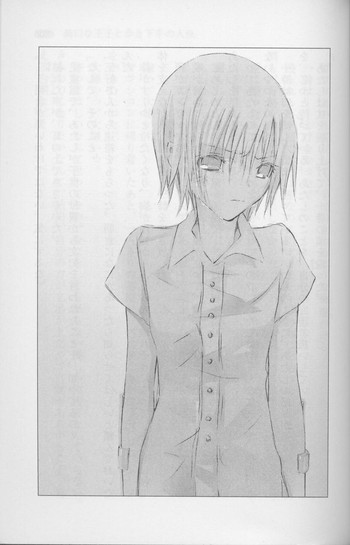
「......朝倉が悪いわけではない。気にするな」
掠れた声が、耳の上でささやいた。
児童館で、あたしが子供の母親から文句を言われたことを、知ってるの？
「なんで、そのこと」
「三好さんから連絡をもらった。朝倉になにかあったら知らせてほしいと頼んでおいたんだ」
体がすーっと冷たくなり、胸が内側からふくらんで破れそうになって、あたしは杖で体を支えながら、思いきり一詩を突き放した。
頭がガンガンする。
喉が締めつけられるほど惨めで、腹が立って、はじけ飛びそうだった。
じめじめとしめった薄暗い道路で、一詩は眉根を寄せ、目をすぼめ、ひどく辛そうにあたしを見おろしている。
「っ、あたしのこと、ずっと監視させてたの!?あたしは、そんなに弱くて、信用できないやつなの!?」
一詩は口を結んだまま、黙っている。いつものように、あたしの怒りが通り過ぎるのを、じっと待っている。あたしのことを、自分の庇護者扱いしている。
あたしは杖を振り上げて、一詩の頭を殴った。
ガツッという音がして、手に引きつるような衝撃が走る。
一詩は──よけなかった。
殴られると予測できたはずなのに、すまなそうにあたしを見つめたまま、殴られた瞬間も、背筋を伸ばし、微動だにしなかった。
逆に殴ったあたしのほうが、バランスを崩してよろめいた。
「......すまなかった」
謝られて、ますます胸が裂けそうになって──。
「あんたなんか、大嫌い！ 顔も見たくない！」
涙でひび割れた汚い声で叫んで、あとはもう顔をそむけたまま、逃げ出した。
嫌い、大嫌い。
マンションに帰り着いたあと、一人きりの部屋で、ベッドに身を投げ出して、シーツをかきむしった。
大嫌いっ、大嫌いっ。
守ってほしいなんて思ってない。なにをしても怒らない優しい保護者なんていらない。きみの力になりたいなんて、結局、自分の方が立場が上だって自覚があるからこそ、言える台詞よ。
でも、だからって、顔も見たくないなんて、言うつもりじゃなかったのに。
老成した態度や悟りきった表情が気にくわなくて、意地悪して困らせてやろうと思っても、傷つけたくはないのに。
ずっと、誰かを幸せにできる人になりたかった。
あたたかくて、平和で、綺麗な世界で、誰かのために働けるような。それを心から喜べるような。
そんな美しい、優しい人間になりたかった。
寂しい北の海に棲む孤独な人魚が、人の世界に憧れるように。
──人間の住んでいる町は、美しいということだ。
──人間は、魚よりも、また獣物よりも、人情があってやさしいと聞いている。
人の世界へ行きたい、人に愛され、人を愛して、人の輪の中で暮らしたい。海の中から、ずっとずっと願っていた。
けど、人魚の想いは砕け散る。
人は、美しくなんかない。優しくもない。
憎んだり、妬んだり、呪ったり──苦しかったり、痛かったり、裂けそうだったり、そんな嵐みたいな感情が、胸の中で荒れ狂っている。
傷つけたり、突き放したり、罵ったり──そんなことしたくないのに、ひどいことをしてしまう。
そんな、弱い、醜い、生き物だ。
どうしたら、嵐はおさまるの？
どうしたら、優しくなれるの？
自分以外の誰かを、幸せにすることができるの？
目の裏に、困った顔をした一詩や、しょんぼりした顔の子供たちや、小さい頃のコノハがにこにこ笑っている顔が浮かんで、胸を抉る。
ひどい風邪を引いたような熱っぽさと息苦しさに、死にそうになりながら、あたしは明けがたまで唸っていた。
一時間くらいは、眠れたのだろうか。
体の疲れがとれない。
携帯電話の呼び出し音で、目が覚めた。
誰よ、こんな朝から。
苛立ちながら着信を見て、ハッとした。
コノハ！
慌ててベッドの上にしゃがみ込み、ドキドキしながら通話ボタンを押す。
「も、もしもし......」
「美羽？」
コノハの声だ。
けど、どうしたんだろう。元気がない。哀しそうだ。
息をのんで耳を傾けるあたしにコノハが知らせたのは、知人の訃報だった。
「芥川くんのお母さんが、ゆうべ亡くなったんだ」
◇ ◇ ◇
葬儀は二日後、大きな斎場で行われた。
学園の制服を着たコノハが迎えに来てくれて、あたしたちは一緒に、一詩の母親を見送った。
病院のベッドで何年も目を覚ますことがなかったその人は、とても若く見え、すっきりしたおだやかな顔をしていた。
遺影で微笑む顔も、綺麗で気品があって、包み込むような優しさがにじんでいる。
一詩は、父親や二人の姉と並んで、参列客に挨拶をしている。いつものように背筋を伸ばし、大人びた誠実な顔つきで。けどその横顔は、哀しみや苦しみを押し隠しているせいか、葬儀の間、ずっと硬く強張っていた。
この一週間、容態が急変して、一詩が病院に泊まり込んで母親に付き添っていたことを、コノハから聞いた。
昨日、あたしに会いに来たときも、きっと病院から直行したのだろう。あたしのことなんて、かまってる場合じゃなかったのに、あたしが落ち込んでいると聞いて、来てくれたんだ......。
なのに、杖で殴って、ひどいことを言ってしまった。
後悔で息が止まりそうになる。もう、一詩とまともに顔を会わせられないっ。
「美羽、芥川くんのところへ行こう」
「あたしは......」
怖い。
杖を握る手が汗ばむほど──足がすくむほど躊躇しながら、あたしはコノハにうながされ、一詩のほうへ歩いていった。
「芥川くん」
コノハがそっと声をかけると、一詩は家族から離れてあたしたちのほうへやってきて、ぎこちなく微笑んだ。
「井上、朝倉......来てくれて、ありがとう」
「ううん。大変だったね、芥川くん」
二人が話しているのを、あたしは突き刺すような痛みを感じながら、聞いていた。一詩のほうを見ることができない。
「じゃあ、芥川くん、また」
「ああ。オレからも連絡する」
コノハの隣で、あたしはじっと身を縮めていた。声が喉で止まってしまって、慰めの言葉も、謝罪の言葉も、言えなかった。
「芥川くん......寝てないのかな。すごく疲れているみたいだったし、無理してるみたいだった」
葬儀場の廊下を歩きながら、コノハが心配そうにつぶやく。
「お母さんのこと、とっても大切にしていたから、きっと......辛くてたまらないだろうな......」
あたしは、体をくるりと反転させた。
「美羽？」
「コノハは、先に帰って」
「どこへ行くの」
「ついてこないで」
つっけんどんに言って、杖をかしゃかしゃ鳴らしながら、もと来た道を戻った。
家族の控え室があるほうへ行くと、一詩は一人で廊下にいた。
こちらに背中を向けて、隅のほうの壁に手をついて、うなだれている。
肩が震えているのを見て、息が止まりそうになった。
泣いているの......？
どうしよう。一誌はまだ、あたしに気づいていない。
引き返したほうがいいんじゃ。
けど、そのまま足音をひそめるようにして、あたしは一詩に近づいていった。
一詩の肩は、まだ震えている。握りしめたこぶしを、壁に強く押し当てている。そのこぶしも震えている。
かなり側にくるまで、一詩は振り返らなかった。
そうして、振り返ったとき、大人びた端整な顔に涙はなかった。
眉根をぎゅっと寄せ、目を赤くし、歯を食いしばり、苦しそうな表情をしているのに、頬は乾いて強張っている。
泣くのを堪えているその顔に、泣き顔を見るより衝撃を受け、胸が潰れそうになった。
こんな深い哀しみを、喪失を、あたしは目の当たりにしたことがない。
子供の頃、コノハがべそをかくたび、あたしは作り話をして慰めてきた。べその原因は、ほとんどあたしだったのだけど、そんなことはみじんも感じさせず、綺麗な話や、愉快な話をして、コノハの気持ちを哀しみからそらしてきた。
なのに、今目の前で、大事な人を失って声も出さず、涙もこぼさずに慟哭している一詩にかける言葉を、あたしは思いつけない。
コノハの哀しみは、簡単にとりのぞけた。
けど、これは──。この哀しみは、もっと深くて、痛い──苦しい。どうしていいのかわからない。
もどかしくて、裂けそうな気持ちで、あたしは一詩にまた一歩、歩み寄った。
一詩が、苦しそうに目をすぼめる。
噛みしめた唇が青ざめていて、あたしを見る目が助けを求めているようで。
あたしは手を伸ばし、一詩の胸に抱きついていた。
とたんに、息が止まりそうな強さで、抱きしめ返された。
体を支える杖ごと、きつく、固く、目眩がするほどがむしゃらに、激しく、ぎゅぅっと抱きしめられる。
杖も、骨も、砕けてしまいそうだった。
あたしの肩で、一詩が嗚咽している。
大きな手が──指の一本一本が、背中に食い込んでくる。痛いっ。
昨日、児童館の帰りに、抱かれたときとは全然違う。今、感情のままに荒々しく抱きしめられて、気づく。この腕は、こんなに強くて、激しかったのかと。
なのに、優しくそっと腕を回されたあのとき、あたしはなんて大切にされていたのだろうって。
回した手のひらに触れた一詩の背中は、火に灼けた石みたいに硬くて、熱かった。
あたしも抱きしめ返す。
それくらいしかできないから。
泣きそうな気持ちで、強く。
一詩が腕をほどくまで、あたしも震える体を抱きしめていた。
どれくらい、一詩は泣き続けていただろう。
ようやく腕をほどいたとき、あたしを見る顔は、ひどくうろたえていて、情けなかった。
「......ぅ、その、すまなかった」
「どうってことないわ。普段やったら、ぶん殴るけど」
そっぽを向いて、言う。
「本当に、なんと言ったらいいか」
「なら、電話......ちょうだい」
「......朝倉」
困惑する顔を、睨む。
「メールでもいいわ。それで、いいわけすればいいでしょ」
一詩は目を細め、また泣きそうな顔になり、「わかった」とつぶやいた。そうして、あたしに向かって、すっと頭を下げて、背筋を伸ばして控え室の方へ戻っていった。
急に顔が熱くなり、廊下で深呼吸していたら、若い女の声がした。
「ありがとう、朝倉さん」
ぎょっとして振り返ると、喪服を着た背の高い清楚な美人が立っていた。一詩の上の姉さんだ！三好の先輩で、確か外資系の企業で働いている。一詩の家で、一度だけ挨拶したことがある。
ひょっとして、今の、見られてたの！！！！！
慌てるあたしに、姉がさらりと言う。
「ごめんなさい。部屋に戻ろうとしたら、一詩があなたと抱き合っていたから。通れなくて」
「あ、あれはその──」
「一詩を泣かせてくれて、ありがとう」
「......」
その言葉に、口をつぐんだ。
「あの子、今日までずっと泣かなかったの。母親が亡くなって一番辛かったのは、あの子なのに......」
一詩の母親は、一詩を産んだあと病気がちになったと、聞いたことがある。
だから一詩は、子供の頃から母親に心配をかけないように、立派な人間にならなければならないと思っていたんだって......。
「あの子って、勉強もスポーツも昔から人並み以上にできて、嫌味なくらい優等生だから、誤解されやすいけど、本当は、くそ真面目で不器用な子よ。状況にあわせて適当に曲がったり捻れたり、できないの。いつも気持ちを抑えて、我慢してしまうの。
けどあなたは、一詩を泣かせてくれたわね、朝倉さん」
「あ......あたしは」
感謝の目で見つめられて、困ってしまった。
「ねぇ、朝倉さん、あなた前にうちに泊まったとき、一詩のこと呼び捨てにして、こき使ってたでしょ？『なにしてんの、一詩、さっさとして』って、大きな声で、二階から叫んだりして」
頬が、いよいよ熱くなる。
琴吹と一緒に、コノハを待っていたときだ。一詩がコノハとずっと下で話していて、なかなか部屋へ連れて来ないから、『早くして！』って、階段の上からわめいたんだ。
きっと、一詩の家族は、なんて行儀の悪い女の子だと思っただろう。
あのときはてんで気にならなかったことが、今は顔から火を吹きそうに恥ずかしかった。
「えっと......あれは、いろいろと事情が......」
一詩の姉が、くすりと笑う。
「いいのよ。あれを聞いて、ああこの子なら、大丈夫かなって思ったんですもの」
「え」
声をつまらせるあたしを、気さくな笑顔で見つめる。さっきまで上品そうな人だと思っていたのに、急に生き生きした、一癖ありげな表情になる。
「うちの家系はね、男は頑固でくそ真面目で、女のほうは猫かぶりで、したたかなの。あたしも妹も、外ではしっかり優等生のお嬢さんで通っているわ。ホントは全然そんなんじゃないんだけどね。母親もそうよ」
遺影の彼女は、優しくたおやかな人に見えた。けど、したたか？猫かぶり？
一詩の姉が、力強く微笑む。
「おとなしくて儚げに見えても、実はものすごく気が強くて、我が儘で、こうと決めたことは絶対に譲らなかったわ。そうやって、周りから反対されても、自分の意志で一詩を産んだの。そのことをこれっぽっちも後悔していなかったわ。一詩といるとき、いつも笑っていた」
なんだかもう混乱してしまって、そんな強くてあざやかな女性の姿が、あの遺影と結びつかなくて──けど、胸が太陽であたためたお湯を注いだみたいに、ぬくもって──。
「また、うちに遊びに来てね、朝倉さん」
一詩の姉の言葉に、とっさにこくりとうなずいていた。
◇ ◇ ◇
翌日。
児童館の受付に座っていると、コノハに似たあの男の子が、絵本を抱えて、おずおずと近づいてきた。
読んで欲しそうに見上げているけれど、この間、冷たく突き放されたので言い出せないらしい。
「それ、読んでほしいの？」
「......うん」
「いいわよ」
「本当！」
男の子の顔が、ぱっと輝く。
「あの......じゃあ、また、お話もしてくれる？」
「そうねぇ。けど、こっそりよ」
「うんっ」
大きくうなずく。
あたしは、膝の上に絵本を広げた。
うるさい保護者に文句を言われたって、どうってことない。
また来たら、今度はうまく言いくるめてやる。
そうだ、もっともっと、したたかになろう。
胸に灯る明かりは、ろうそくの炎のように、小さくて弱くて、少しの風で簡単に消えてしまうけれど。
何度も何度も、明かりを灯そう。
今度、人魚の娘と王子の話の続きを、子供たちに聞かせてやろう。
人魚の娘は、成長した王子と一緒に海の王国を出て、太陽が輝く陸の国へ向かうのだ。
そこで傷ついたり、悩んだり、嬉しかったり、幸せだったりしながら、きっと、図太く生きてゆく。
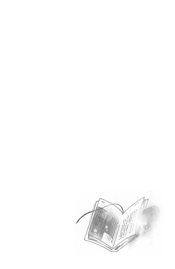
〝文学少女〟と扉のこちらの姫
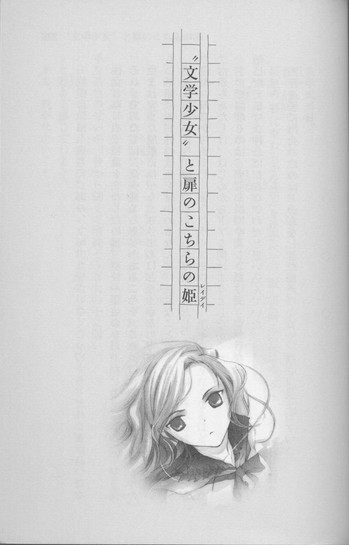
一枚の肖像画を残して、あの〝文学少女〟がいなくなってから、どれくらい経つだろう。
彼女とはじめて言葉を交わしたのは、高校一年生の春だった。
それまであたしは、夏へ通じるドアがあることを、これっぽっちも信じていなかった。
生まれ育った屋敷には、うんざりするほどたくさんのドアがあったけれど、それをいちいち開けて、外の景色を確かめるなんて、無駄なことだと思っていたのだ。
屋敷にいるかぎり、凍てつくような冬は続くのだし、あたしは、そこから出ることができないのだから......。
だからあたしは、はじめからドアを開けようとしなかった。
ドアを開けるのは、そこを出てゆくときだけで、その日が来るまで、囚人のような生活に耐え続けなければならないのだと思い込んでいた。
天野遠子に出会ったのは、そんなときだった。
◇ ◇ ◇
入学式当日。
廊下に張り出されたクラス名簿を、三つ編みの少女が、熱心に見上げていた。
桜色の唇にやわらかな笑みを浮かべて、澄んだ明るい目で、クラスメイトの名前を、ひとつひとつ大事そうに眺めている。
白い額に降りかかる前髪は自然な黒で、細く長く編んだ髪が、華奢な腰で、儚く揺れている。
全体に細身で、セーラー服のリボンの下の胸は、拍手を贈りたくなるほど扁平だった。
なんて素晴らしい！
これは天然物だわ！
たまたま近くせ通りかかったあたしは、足を止めて、ぞくぞくと震えた。
こんな古風な雰囲気の美少女、滅多にお目にかかれるもんじゃない。
あたしは、自分がクォーターで、顔立ちも体型もくっきりはっきりしていて、髪も派手な茶色のせいか、昔から細くて清純そうな女の子に弱い。
これ見よがしに突き出た胸や、くびれた腰よりも、こういうささやかな胸元に、ロマンと趣きを感じてしまう。
ああ、脱がせたい......っ。
描きたいっ。
セーラー服の下の体は、どんなだろう。
肌の色合いは？ 曲線は？
きっと余計な装飾を取り払ったら、清楚な美しさがいっそう際立つに違いないわ。
透けるように真っ白な肌とその上を流れる黒髪の、絶妙のコントラストを脳裏に思い浮かべてうっとりしながら、あたしはとりあえず彼女の近くまで移動してみた。
肩が触れそうなほど接近しても、向こうは気づかず、楽しげに名簿を見ている。
横顔も美しいわ。声はどんなかしら。
にやにやしながら眺めていると、彼女は急に寒気がしたように、ぶるっと震えた。
自分を見つめる邪な眼差しに、気づいたのだろうか。恐ろしいものを見るようにこわごわと顔をこちらへ向けて、あんまり近くにあたしがいたので、びくっと肩を跳ね上げた。
「！」
目を丸くしたその顔も可愛いと思いながら、気さくに笑いかけてみる。
すると向こうも、ホッとしたように表情をやわらげ、話しかけてきた。
「あなたも、八組なの？」
多少緊張しているようだったけれど、澄んだやわらかな声は、外見のイメージをまったく裏切らないものだった。
ああ、声まで美少女ね。
「いいえ。一組よ」
「？ じゃあ、どうして八組の名簿を見ているの？」
「名簿じゃなくて、おたくを見ていたの」
「えっ」
目が、また丸くなる。
「あたしは、姫倉麻貴。よろしくね」
「わ、わたしは、天野遠子よ。えっと......わたしを見てたって......どういうこと？」
「絵のモデルになってくれないかなぁと思って。ねぇ、お願いできないかしら、天野さん」
「わたしが!?」
「一目惚れなの」
目を細め、甘く熱っぽく見つめると、頬がみるみる赤く染まった。反応の良さに、頬がゆるむ。
「そんな、わたし......モデルなんてっ。やだっ、どうしましょう。ああ、でもでもちょっとなら......」
「ぜひ、おたくのヌードを描きたいのよ」
「！」
まんざらでもなさそうに、そわそわしていた遠子が、とたんに凍りつき、未知の生物でも見るような目で、あたしを見上げた。
あたしは遠子の顎に指をかけ、にっこりした。
「ね、お願い。おたくの生まれたままの姿を、あたしに見せてちょうだい。おたくの体のすみずみまで、あますところなく描きつくしてあげるから」
さっきまで赤かった遠子の顔が、みるみる青ざめ、怯えているような、混乱しているような顔つきになる。
「おおおおお断りするわっ！」
全身で叫ぶなり、あたしの手をはねのけ、長い三つ編みを猫の尻尾のようにぴしゃっと振り上げ、教室の中へ逃げ込んでしまった。
あらら、ストレートに本音をぶつけたのは、マズかったかしら。変質者と思われてしまったかしらね。
けど、焦っている顔が最高に魅力的だったので、よしとしよう。
チャンスはこの先もある。嫌がる彼女をその気にさせるのは、きっとものすごく楽しいだろう。
◇ ◇ ◇
家に帰ってから、遠子のことを思い出して、廊下でほくそ笑んでいたら、運悪く祖父さんと出くわして、ぎろりと睨まれた。
「なんだその下品な顔は。姫倉の娘が、玄関先で忍び笑いなぞするな」
「あら、お帰りなさい、お祖父サマ」
言われたとおり、背筋を伸ばし、お上品に微笑んでやる。
姫倉グループの総帥で、百ぺん殺しても死ななそうな祖父さんは、左目にはめたレンズを光らせ、右目を醜くすぼめて、不愉快そうにあたしの髪に目を走らせた。
「その髪も、入学式までに短く切って黒くするよう、言ったはずだ」
ウェーブのかかった派手な茶色の髪は、豊かに広がりながら、背中の下まで流れ落ちている。祖父はこの髪が大嫌いなのだ。
ハーフだった、あたしの母譲りの髪だから。
母は、姫倉の家にふさわしくないと祖父にいびり倒され、何年も前に夫と娘を置いて、実家のアイルランドへ帰ってしまった。
「今さら染めるほうが不自然でしょう？ これがあたしの髪だってことは、姫倉の縁戚にも会社の関係者にも、お披露目済みなんだから。大丈夫、理事長のお祖父様の名誉を傷つけるようなことはいたしません。オーケストラ部にも、今日、入部届を出してきたわ」
祖父はまだ不満そうに睨んでいる。老人はしつこくてかなわない。
あたしは、
「勉強があるので」
と言って、さっさと退散した。ささやかな嫌がらせに、長い髪が華やかに波打つ様を見せつけて。
姫倉の家では、誰も祖父に逆らえない。
あたしは、本当は美術部に入りたかった。けれど、祖父はオーケストラ部に入ることを望んだ。
自分も息子も、オーケストラ部で指揮者を務めたので、姫倉の後継者であるおまえも、そうでなければならない。絵を描くことも許さないし、画家になりたいなんてとんでもないと。
代わりに、あたしには、音楽ホールの最上階の部屋が与えられた。
学園にいる間だけ、そこで絵を描いてもいいと。
自分のことなのに、自分の意志で決められない。
なにもかも祖父の命令通りで、そんな生活がたまらなく息苦しかった。イイコになる代償として与えられたアトリエも、ちっとも嬉しくなく、綺麗な牢獄のように思えた。
早く自由になりたい。
喉が裂けそうなほどに想う。
なんであたしは、たった十五歳なのだろう。一日でも一分でも早く大人になりたい。祖父の絶対的な支配を打ち崩す、嵐のような力が欲しい。無力な学生でなんかいたくない。
囲われた檻の中で、教科書に書かれた文字を、ただただ頭に詰め込むだけの授業を三年間も受け続けるなんて、まるで意味がない。
あたしはもっと広い世界で、別のことを学びたい。
胸の中で、棘でおおわれた塊があちこちにぶつかって、擦れているようで、気持ちが休まらなかった。
なのに──。
今日、会ったばかりの三つ編みの少女を思い浮かべたとき、心が不思議と軽くなった。
あの子、明るい目をしていたわ。
まるで、はじまったばかりの学園生活が、輝きに満ちたものであることを確信しているような、希望にあふれた晴れ晴れとした顔で、一心にクラスメイトの名前を見上げていた......。
あの子の周りだけ、空気がおだやかに澄んでいるみたいだった。
ああ、やっぱり描きたいな。あの子──天野遠子。
◇ ◇ ◇
次に遠子を見かけたのは、一週間ほど後だった。
放課後、昇降口付近の廊下を通りかかると、いかつい体格の男たちを相手に、エキサイトしていた。
「ボート部がやったんでしょう！ 〝文学少女〟の目は、誤魔化せないんだからっ！」
「けっ、知らねーな！」
「そうだ、そうだ！ 言いがかりだ！ ボート部は関係ない」
「嘘っ！ この前も、いやがらせに来たじゃない！」
「それは、文芸部がとっとと立ち退かないからだろ」
「まだ四月よ。これから部員が増えて、部室に入りきらなくなるかもしれないじゃない」
「わはははは、無理無理！ 誰が文芸部なんて、死にかけのしみったれた部に、興味持つかってんだ」
「なんですってぇ！」
相手は上級生のようだった。
勇敢なのか無謀なのか、自分の倍以上も体重がありそうな柄の悪い男たちのほうへ、こぶしを握りしめて身を乗り出す。
その様子は、獰猛な野良犬に尻尾を立ててみせる、仔猫のようだった。
「なにをもめてるの」
声をかけると、視線が一斉にこちらを向いた。
遠子が、あっと声をあげ、嫌そうな顔になる。
「なんだ、おまえは」
男たちも顔をしかめる。
「その子のご主人様よ」
腕組みして堂々と告げると、
「違うわっ！」
即座に頬をふくらませて反論された。
「じゃあ、恋人？」
「違います！ 全然知らない人です！」
男たちは、ぽかんとしている。
「あら、ちゃんと名前を教えたでしょう。姫倉麻貴よ、天野さん」
「姫倉だって!?」
威張りくさっていた連中が急に顔を青くし、小声でささやきあう。
「おい、姫倉って、ひょっとして理事長の？」
「やべ......っ、行こうぜ」
どうやら、姫倉光圀の孫娘が入学したことは、生徒の間にも広まっているらしい。
物心ついたときからそうだった。
どこへ行っても、あたしは姫倉の人間で、みんなあたしの後ろにあるものを見て、怯えたり、へつらったりする。
今さら珍しくもない。ああ、またかと思うだけだ。
気まずそうに去る男たちを、遠子が追いかけようとする。
「あっ！ まだ話は終わってないわよ！ 本を返して～～～～～～！」
手を伸ばして三つ編みをつかむと、「きゃっ」と叫んで振り返った。
「なにするのよぉぉぉぉ」
頭を押さえ、涙目で睨んでくる。
あたしは身を乗り出して、このうえなく優しく微笑んだ。
「よかったら事情を話してみない？ 力になるわよ」
「いりません」
遠子が手を振り払って、くるりと背中を向ける。
「あら、結構役に立つと思うけど」
この学園で、あたしにできないことはない。
あたしが〝姫倉〟であるかぎり、すべてが許されているし、なんでも手に入る。どこへでも潜り込める。
できないことなんて、あたしが〝姫倉〟でなくなることくらいだ。
どうせ、つまらない学園生活なのだ。娯楽や潤いは必要だ。
ここで遠子に恩を売っておくのは、悪くない。
それをネタにモデルを引き受けさせて、アトリエへ連れ込んで、いずれは生まれたままの姿になってもらおう。
「文芸部の危機なのよ。変な人にかまっている暇はないわ」
「おたく、文芸部に入ったんだ。そんな部うちにあったのね」
「失礼ね、創立のときからあります！」
「あら、ごめんなさい。で？ 文芸部の危機って？」
早足で進んでゆく遠子の横に並んで話しかけると、わずらわしそうに答えた。
「本がなくなっちゃったのよ、大事件よ」
「それだけ？」
「それだけとはなによっ。大事な本なのよ！」
「だって本でしょう？ 本屋で買い直せばいいじゃない」
「買い直せるような本じゃないわ」
「プレミアつきの古書とか？」
遠子が鼻息も荒く叫ぶ。
「ええ！ 先輩たちから代々伝わる、文芸部秘蔵の書で、値段なんてつけられない、すごぉぉぉぉぉぉく、すごぉぉぉぉぉぉぉぉく、大切な本よっ！」
◇ ◇ ◇
「えっ！ 歴史的古書!? 重要文化財で、天文学的価値！え？ええっ？天野さんがそう言ったの？い、いや、そんな大したものじゃなくて、消えたのは、ただの古い本だよ」
三年生の小南友はすっかりうろたえて、目をしばたたかせていた。
彼が文芸部の部長らしい。くちゃくちゃのくせっ毛で、眼鏡をかけた、小柄で真面目そうな男だ。
動物にたとえるなら臆病なリスといった印象で、落ち着かなさそうに、もぞもぞしている。
あたしたちは、文芸部の部室で話をしていた。
部屋は三階の東南にあり、日当たりがよく広々としている。
いや、正しくは、余分なものが一切なく、殺風景というべきか。
表面がゆがんだ古い机とパイプ椅子と、大きな本棚があるだけで、その本棚にすら、一冊の本も見あたらない。
まるで夜逃げのあとのようだ。
「ひょっとして、盗難にあったのは、一冊だけじゃないの？」
尋ねると、遠子が悔しそうに叫んだ。
「ええ、部室にあった、ありったけの本を、持ってっちゃったのよ！この本棚にも、この壁際にもっ、その窓の下にも！こっちの机の下にも！そこにも、あそこにも、いっぱい本があったのに！文芸部の先輩たちが、心を躍らせながら手に取り、一ページ一ページ大切にめくっては、泣いたり笑ったり感動したりした、青春の思い出の漱石や、鴎外や、ディケンズや、マンスフィールドや、チェーホフが！ひどいわっ！許せないわっ！」
なるほど、それでこの有様なわけね。
空いているスペースには、もともと本が積んであったのだ。
「一体、何冊くらい盗まれたのよ？」
「えーと......数えたことがないからわからないけど、五千冊くらいかなぁ」
曖昧につぶやく小南の横から遠子が、
「いいえ！ 一万冊はあったわ！」
と断言する。
それは話半分にしても、数千冊もの本が忽然と消えてしまったというのは、尋常ではない。
「本は、いつなくなったの？」
「わたしが、お昼休みに部室へ来たら、空っぽだったわ。金曜日の放課後までは、間違いなくあったのよ」
今日は月曜日だ。
となると、犯人は土曜から日曜にかけて、本を運び出した可能性が高い。
一体なんのために？
大して高価でもない大量の本を、労力をかけて、わざわざ持ち出す理由がない。
遠子が頬をふくらませる。
「やっぱりボート部が怪しいわ！ あのムキムキの腕なら、一万冊くらい楽々運べそうだものっ」
「何故、ボート部が怪しいの？」
「ボート部は、この部室を狙っているのよ」
遠子が鼻息を荒くして説明したところによると、文芸部は部員が規定数に満たないため、同好会への格下げを検討されているという。そうなれば部費はカットされ、部室も明け渡さなければならない。
代わりに、今年同好会から部へ昇格したボート部が、空いた部屋へ引っ越してくるという。
「ボート部なんて、部室がなくても活動できるじゃない！なのに、『いつ出ていくんだ』とか『邪魔だから、早く立ち退け』とか、わざわざ言いに来たのよ！床に積んであった本を蹴飛ばして、『このゴミの山も、ちゃんと処分しとけよ』なんて言ったりして、地上げ屋みたいだったわ」
遠子はぷんぷん怒っている。
「つまり、おたくらを追い出したいボート部が、本を持ち出したというわけね？」
「そうよっ。それしか考えられないわ。いかにもそういうことやりそうよ」
まぁ確かに、悪役レスラーみたいな顔つきだった。
「でもそれ、逆にラッキーだったんじゃないの？面倒くさい引っ越し作業を、タダでしてもらったんだから」
「あ、そういえば、そうだね」
遠子の勢いの前に影が薄くなっていた小南が、ぽんと手を打つ。
「ぼくと天野さんの二人きりで本を運んだら、すごく大変そうだし。かえってよかったのかも、うん」
「うなずかないでくださいっ！ 部長！」
遠子が叱りつける。
「全然よくないわっ！ 大事な本が、なくなっちゃったんだから！部長の好きな、クラークの『幼年期の終わり』も、ティプトリーの『たったひとつの冴えたやりかた』も、ブラッドベリの『火星年代記』も、消えちゃったんですよ！ハインラインの『夏への扉』は、わたしも、大好物だったのに！」
ハインラインもブラッドベリも、本屋か図書館に行けば、普通に置いてあると思うのだけど......。
小南が、おろおろする。
「そ、そうだね、天野さん。『夏への扉』は名作だね。ぼくも何度も読み返したよ。あんな素敵なハッピーエンドはないよ。
でも、そのっ、文芸部には幽霊部員の三人をのぞくと、きみとぼくの二人しかいないだろ？それにこのあとも、部員が入りそうじゃないから......。
せっかく入部してもらったのに、ろくな活動もしないうちにこんなことになって、本当に申し訳ないと思ってるよ。けど、ぼくも来年受験だから、そろそろ引退しようかなって思ってたんだ」
「そんな、部長......」
遠子が目をうるませ、捨てられた仔猫のような哀しげな顔つきになる。
小南が、
「うっ」
と声をつまらせ、さらにしどろもどろで、
「ごごごごめんっ。だからそのっ、本は、どっちみち、図書室の地下書庫に引き取ってもらう予定だったんだし、いい潮時かなって......」
「わかりました」
遠子がしゅんとうなだれる。小南が安堵の表情を浮かべかけたとき、急に顔を上げた。
「受験で忙しい先輩に代わって、わたしが文芸部を守ります！必ず本を見つけ出して、部員も増やして、立ち退かなくてもいいようにしてみせますから、安心して見守ってください」
「えっ、ちょ、ちょっと──天野さん！」
慌てる小南に向かって、遠子はぺたんこの胸を張り、見惚れるほど可憐に、晴れやかに、笑ってみせたのだった。
「大丈夫！ この事件、〝文学少女〟のわたしが解決してみせるわ！」
◇ ◇ ◇
「──で？ おたくは、校庭の隅で、ヤンキー座りして、なにやってんの？」
「う、うるさいわね、部外者はあっちへ行ってちょうだい」
「双眼鏡なんか首に下げて」
「調査に双眼鏡は、つきものよ」
「そんな古い型、よく売ってたわね」
「話しかけないで、気づかれちゃうでしょう」
遠子はみけんに皺を寄せ、真剣な顔で双眼鏡をのぞいている。別に、レンズを通さなくても、ボート部の連中が、うぉーうぉーと野太い声を上げながら、腕立てや腹筋の筋トレをしている光景は、じゅうぶん見渡せるのだが。
やはり遠子は、ボート部を疑っているらしい。
「こうやって見張っていれば、重要な手がかりをつかめるはずよ」
と、気の長いことを言う。
あたしを頼ってくれたら、姫倉の情報網ですぐに調べがつくのに、その点、遠子は頑なだった。
「ねぇ、むさ苦しい男どもをのぞき見してたって、楽しくないでしょう。それとも、マッチョが好みなの？」
「人聞き悪いわね。のぞきじゃなくて、調査よ」
「こんなところにしゃがみ込んでいるより、あたしのアトリエで、紅茶でも飲みながら楽しくお話ししない？」
「いやよ、またヌードモデルになれって言うんでしょ」
「あら、ポッティチェリのヴィーナスだって、ゴヤのマハだって裸よ」
「貝殻の上で、素っ裸でポーズをとるくらいなら、舌を噛むわっ。それと、さりげなくにじり寄って来ないでっ」
遠子が肘であたしを押しやったとき、ボート部の通中がいきなり、
「うおおおおおおおおおおおおおっ！」
と声を張り上げた。
そちらを見ると、円陣を組むように集まり、なにやら奇声を上げたり、足踏みしたりして、盛り上がっている。
「......本をめくる音がするわ」
突然、遠子が鋭い目で言った。
「え？ 聞こえないけど」
「いいえ、〝文学少女〟のわたしにはわかるわ。本が、わたしを呼んでいる」
「ちょっと──」
遠子は立ち上がるなり、ボート部の連中のほうへすっ飛んでいった。
「さぁ、現場を押さえたわ！ その本を、こっちへ渡しなさい！」
ボート部の連中が、ぎょっとした顔で振り返る。遠子が、彼らが回し読みしていたものを、奪い取る。
が、ページを開いたとたん、真っ赤になった。
それは、最近発売された、かなり大胆と評判の、巨乳アイドルのヘアヌード写真集だった。
いきなり写真集を奪われたボート部の連中は目をひんむき、口を開けて、硬直している。
遠子は、開いたページを凝視して、ぷるぷる震えていたが、やがて耳から首筋までじわじわ赤くなり、叫んだのだった。
「いやあああああああああああああああ」
◇ ◇ ◇
「フケツだわっ、フケツだわっ。あんな格好で、あんなポーズ......慎みがなさすぎよ。む、胸も、おっきすぎて、不自然よ......」
ボート部員の顔に写真集を叩きつけるように押しやり、走って逃げ去ったあとも、遠子は真っ赤な顔で、ぶつぶつつぶやいていた。
「そうね。大きすぎると肩も凝るし、あたしは平らなほうが好きよ、気にすることないわ」
遠子が、ばっと振り返る。
「どーして、ついてくるのっ！ そ、それに、胸のことは、全然気にしてませんっ。これから順調に育って、卒業までには夏みかんくらいに、ふくらむ予定なんだから！」
「あら、残念ね」
あたしはにっこり笑った。
遠子がツーンと横を向く。
「今度は、どこへ行くの？」
「土日に活動していた部を回って、聞き込みをするのよ。あなたはもう帰って」
遠子は見た目より大分タフらしく、巨乳アイドルのヘアヌードのショックから立ち直り、本当に聞き込みをはじめた。
「土日に、本を大量に持った人を見ませんでしたか？」
「さぁ、知らないな」
「特に見かけなかったけど」
「土日に、なにか変わったことがあったら、教えてください」
「うーん、うちの部は一階だから、三階のことはわからんなぁ。あ、でも」
「なんですか！」
「クラスの女子が、日曜に幽霊に会ったって言ってたっけ」
「ゆ、幽霊......！」
遠子の顔が引きつった。
翌日の昼休み、そのクラスメイトに、話を聞きに行くと。
「会ったってゆーか、おかしな声を聞いただけだけど」
その日彼女は、学校へ忘れ物を取りに行ったという。三階から二階の階段を下りる途中、頭上で床を擦るような音がした。
「ガーッ......ガーッ......って、感じの、低い音よ。それで、なにかなと思って耳をすましていたら、恨めしそうな声がしたの。『......くらい......とっても、くらい......ねぇ、くらいよね......つめたいよね』って......『もうすこし......もうすこしだよ......』って──。それから『なつへは、つれてゆけない』だったかな......？あたし怖くなって、階段を駆け下りちゃった」
話を聞いている間、遠子は体を強張らせ、死人みたいに青ざめていた。
「ぅ......ゆ、幽霊なんて、この世にいないわ」
◇ ◇ ◇
「本当よっ、幽霊なんて非科学的なもの、存在しないのよっ。これは絶対的な真実よ。わたしは幽霊なんか、これっぽっちも信じていないわ」
放課後、地下の書庫へ向かう螺旋階段を下りながら、遠子は主張を続けている。
何故か手に、食塩の瓶をしっかり握りしめていて、それは何？と尋ねると、激しく上擦りながら答えた。
「ろろろろろろ六時間目が調理実習で、うっかり持ってきちゃったのよ」
「食塩を？」
「そ、そうよっ。あとで返さなきゃと思って、忘れないように、こうやって手に持っているのよ」
これまで、部外者は帰って、と、つれない態度だったのが、今回にかぎって、「来たければ、ききき来てもいいわよ」とお許しが出たのは、心を開いてくれた証なのか、それとも別の理由があるのか。
地下室のドアを開けると、中は暗く、ひんやりしていた。
古い本と埃の香りが、鼻をくすぐる。
机とスタンドがあり、レトロな紐を引っ張り明かりをつける。
薄闇の中に浮かび上がった光景は、圧巻だった。見上げるほどの高さの灰色の本棚が幾重にも立ち並び、そこに、ぎっしり本が埋まっている。それだけではなく、床にも大量の本が積み上げられている。
まるで廃墟だわね......。
「これは、おたくらの本があるにしても、捜すのに苦労しそうよ。先にゴミ置き場を見て来たほうがいいんじゃない？」
「本がなくなったとき、真っ先に走って行って確認したわ」
遠子がなにかを気にするように視線を泳がせながら、抜き足差し足で部屋の中を進んでゆく。
本は、どこへ消えたのか？ 校外へ運ぶのは手間がかかるし、そんな古い本では売れもしないだろうから、メリットはかぎりなく少ない。
まだ校内にあるのではないか？
書庫なら、本がいくらあっても不自然ではない。もともと、図書室で引き取ってもらう予定だったのだから、ここで本が見つかれば、万事解決だ。
遠子は全身を強張らせ、床に積み重なる本を見て回っている。
ときおり、びくっと肩を揺らし、泣きそうな顔で立ち止まったり振り返ったりする。そのたび食塩を握る両手に力を込める。
どうにも動きがぎこちない。
試しに、
「あ、背中に白い影が」
とつぶやいたら、
「きゃっ！」
と叫んで、飛び上がった。
「天井から、血の雨が」
「いやぁっ」
「床から、人の手がにょきにょきと」
「やめてぇぇっ」
なにか言うたびに、「ひゃ！」とか「ひっ！」とか声を上げて、体をびくびくさせる。
しまいには、肩でぜいぜい息をし、目に涙をいっぱいためて、半泣きになりながら、
「ゆ、幽霊なんて、いないもん、いないもん」
と繰り返し、それでも本を捜し続ける。
「ぅぅ......っ、負けるもんですか。文芸部のために、先輩たちのために、鴎外のために、露伴のために、トルストイのために、リンドグレーンのために、ハインラインのために......っ」
「ハインラインのためにねぇ」
あたしは、すましてつぶやいた。
「そういえば、幽霊が言ってたらしいわね。『なつへは、つれてゆけない～～～～』って。本がなくなったのは、『夏への扉』に乗り移ったハインラインの祟りだったりして」
「そんな祟りないわ！ ハインラインに対する冒涜よ」
べそをかいていた遠子が、キッと顔を上げる。
「ロバート・Ａ・ハインラインは、一九〇七年七月七日生まれのアメリカのＳＦ作家よ。彼は海軍学校に入学し海軍士官になるのだけど、病気で退役し、その後、大学院で学んだり、選挙に立候補して落選したり、転職を繰り返したりするの。
処女作は、一九三九年に発表された『生命線』で、四日で書き上げたと言われているわ。第二次大戦中、海軍に戻って、長く作品を発表しなかった時期もあったけれど、戦争終結後、本格的な作家活動に入るのよ。『銀河市民』『月を売った男』『異星の客』『月は無慈悲な夜の女王』──どれもタイトルを見るだけで、おなかが鳴ってしまいそうな名作ぞろいよ！」
怯えていた遠子の表情が、どんどん明るくなり、熱のこもった声で話し続けるのを、あたしは唖然として見ていた。
「わたしのお薦めは、やっぱり『夏への扉』ね。
主人公のダニエルは、ちょっと抜けたところもあるけれど、才能のある技術者よ。共同経営者である友人と、婚約者に裏切られ、冷凍睡眠によって三十年後の未来で目覚めた彼は、奪われたものを取り戻すために、タイムマシンで過去へ戻るの。
軽やかな語り口が、夏野菜の冷製パスタを、フォークでくるりと巻いて、いただくような感じなのっ。気持ちいいほど、つるつると喉を滑り落ちていって、ページをめくる手が止まらなくなってしまうのよ！
その上に盛りつけられた、素揚げしたナスや、ズッキーニや、トマトの、きらきらした彩りも、青春の息吹で素敵なのっ。
緻密に計算された伏線が明らかになるたびに、すっきりしたレモンや、ちょっぴり苦いバジルの香りが、口の中に爽やかに広がって、夏の暑さも吹き飛んで、元気になってしまうのよ！
とにかく後味の良さは最高で、ぜひぜひ後輩にも、その次の後輩にも読んでほしい、未来への希望にあふれる名作だわ！そうよ、未来に文芸部へやってくる可愛い後輩のためにも、頑張って本を捜さなきゃ」
遠子が、あんまり目を輝かせ、嬉しそうに語るので、あたしはひねくれた気持ちになり、言った。
「よくそこまで入れ込めるわね。しょせん学校のクラブ活動なのに」
遠子が爽やかに断言する。
「部活は大切よ。学校生活をより楽しくしてくれるわ」
「学校自体、それほど楽しいところじゃないでしょう」
「そんなことないわ。楽しいことを探せば、いくらでも見つかるわ」
にっこりと笑ってみせるのに、ますます胸の奥が冷え、喉の渇きを覚えた。
「おたくは、まるで『夏への扉』に出てくる猫みたいね。
冬が苦手で、冬の最中に、夏へ通じるドアがあると信じて、主人公にドアを開けるよう催促するの。ひとつ開けては、また次のドア、またその次のドアという具合にね。十二あるドアの向こうを、ひとつひとつのぞき込むけど、ドアの外にはやっぱり冬の景色が広がっていて、部屋の中に閉じこもってしまうのよ。
そうやって、冬が来るたび、同じことを繰り返すの。
いくらドアを開け続けても、そこから外へ向かって歩き出さないかぎり、ドアから見えるものは変わらないのにね」
遠子が、真面目な顔になる。
「季節が変われば、景色も変わるわ」
「ええ。それまで、安全な家の中で、じりじりしながら無駄で退屈な時間を過ごすというわけよ。
つまりね、学校も、そんなもんじゃないかしら。
今のこの時から出て行きたいのに、行けない。あちこちドアを開けて未来を眺めるだけ。その未来も、灰色の雪に覆われていて、はっきりと見えない。
同じ服を着せられて、同じ規律を守らされて、ひとつの部屋に押し込められて、まるで囚人みたいだと思わない？」
体の内側で、棘だらけの感情がふくらんでゆく。
『夏への扉』の主人公は、タイムマシンで過去へ戻り、すべてを手に入れた。見事なハッピーエンド。
けど、望む世界へ通じるドアなんて、現実には存在しない。
十五歳のあたしは、〝今〟から逃れられない。
そのことが胸が焼けつくように悔しくて──役にも立たない、くだらない話をしてしまったことも息がつまるほど後悔していて、あたしはそっけなく言った。
「あたしも、そろそろ部活へ行かなきゃ......。楽しい部ではないけど、仕方がないわ」
このとき、遠子はどんな顔をしていたのだろう。
背中を向けて書庫を出てしまったので、わからなかった。
◇ ◇ ◇
退屈な部活を終えて、ホールの外へ出ると、空は薄闇に染まっていた。陽が沈んだばかりの世界は、妖しく透明で、隠微なムードを漂わせている。冷たい風が首筋を撫でてゆく。
天野遠子には、近づきすぎないほうがいいのかもしれない。
少女特有の素直さや一途さを可愛いと思う反面、あの不思議に澄んだ瞳や、無邪気な言葉は、あたしの心の、触れられたくない部分に触れてくる。
世の中にどうしようもないことがあることを、無邪気な子猫は知らない。
重苦しい気持ちのまま、おかかえの運転手が待つ駐車場へ、歩いていったときだ。
コンクリートを削るような、鋭い音が聞こえた。
？ なにかしら？
立ち止まって、透明な闇に目を凝らす。
がらがらという音が、だんだん近づいてくる。
やがて、闇の中に、銀色の影が陽炎のように浮かび、それがしだいにくっきりしてきた。
植物の鉢を積んだ台車が、こちらへ向かってくる。
皮膚が、ぞくっと粟立った。
台車の向こう側に、脊ざめ、虚ろな表情をした首が、ゆらゆらと浮かんでいる！
けど、それは黒い制服が闇に紛れて、見えにくくなっていただけで、普通の男子生徒だった。
息を吐きかけ、また目を見張る。
いや──知り合いだ。
向こうもあたしに気づいたようで、車が止まる。
「......姫倉さん」
文芸部の部長の小南友が、暗い表情であたしを見た。
温度の低い陰のある瞳に、皮膚が再びざわめき出すのを感じながら、平静を装って尋ねる。
「こんな時間に、なにをしているの」
「......先生に、鉢を移すの、頼まれて......」
「おたく、園芸委員と掛け持ちしてたの？」
「違うけど......。よく、用事を言いつけられるんだ。断る理由もないし......」
臆病な小動物のように身をすくませ答える。
「そう、お疲れ様」
「......姫倉さん、今日も天野さんと本を捜していたの？」
ためらいがちに問われて、胸が冷たくなった。
「ええ。あたしは途中で、自分の部へ行ったけど」
「そうか......」
小南がうなだれる。
「天野さん、ずっと部室へ戻らなかったから......。まだ一人で、捜しているのかな......」
足元を見つめたまま、掠れた声でつぶやく。
「......天野さんに、悪いことをしちゃった......だって、ぼくは本当は......」
言葉が途切れた。
苦しそうに吐き出された息は、闇に儚く溶けていった。
「ごめん......ぼく、もう行くね。帰って夕飯の支度をしなきゃいけないんだ」
小南が、気まずそうにつぶやき、去ってゆく。
背中を丸め、がらがらという音を立てて遠ざかるのを、あたしはそこに立ったまま、刺すような鋭い目で見つめていた。
◇ ◇ ◇
翌日の放課後、アトリエで、小南友に関する報告書を受け取った。
そこに書いてある小南家の事情は、ありきたりなものだった。
なのに、胸の中に黒い泥が溜まってゆく。
網にからまって、ぱくぱくと口を動かしている、死にかけの魚を見るような、重苦しい気持ちになる。
仕方がない。
子供は、親を選んで生まれてこられない。子供でいるうちは、親の事情に従う以外ないのだから......。
出口の見つからない苛立ちが、体の中でうごめいている。
ドアを開け続けても、その向こうに夏はない。厳しい冬が広がっているだけだ。
吹雪の中へ踏み出すには、力が足りない。
勇気は無謀であり、命取りだ。
だから張り裂けそうな渇望に身を炙られながら、おとなしく家の中で季節が変わるのを待たなければならない。それが子供だ。
仕方がない、
仕方がない、
わかってる。なのに、弾けそうなほど悔しい。
納得できないことを、無理矢理納得せざるを得ないことが、苛立たしくて、心が棘だらけになる。
なにもかも、くだらない。
なにも、はじまらない。
望む場所へ繋がる、魔法の扉なんてない！
広々とした真っ白なアトリエは、牢獄のようで、苦しむ様子さえ監視されているような気がして、あたしはたまらず、そこを出た。
夕暮れには、まだ少し早い。
西日が照りつける校舎へ向かって、あてもなく歩きながら、遠子は不毛な捜索を、いつまで続けるのだろうと考える。
彼女の行為には、なんの意味もない。
完全に無駄だし、続ければ続けるほど、傷が広がるだけだ。
何故なら、部室から本を持ち出したのは──。
「姫倉さん！」
晴れやかな声がいきなり耳に飛び込んできて、心臓が止まりそうになった。
白く透きとおった光の中を、遠子が息を切らして走ってくる。猫の尻尾のような長い三つ編みが、動きにあわせて飛び跳ねる。
遠子は、目を明るく輝かせ、口元に生き生きした笑みを浮かべていた。
「捜していたのよっ。ねぇ、これを見て、姫倉さん」
息をはずませて広げてみせたのは、ノートから切り取った一枚の紙だった。
丁寧な字で、詩のようなものが書いてある。
『住む者は秋の人々。
地下室と穴蔵、石炭置場と戸棚、屋根裏部屋。
陽の光に横をむく台所。
うつろの足音。
夜が長々と坐りこむ。
ぼくらは、そこにいます』
遠子を見ると、小さな顔に喜びがあふれていた。
あたしは眉をひそめて、尋ねた。
「これはなに？」
遠子が、嬉しそうに答える。
「本からの手紙よ」
「本から？」
ますます、しかめっ面になるあたしに、遠子は少しのためらいもなく言い切った。
「そうよ！ 部室へ行ったら、机の上に置いてあったの。読んでみてすぐにわかったわ。これは、あの消えた本たちが、わたしに送ってくれたメッセージなんだって」
「おたく、変な電波でも受信してるの？」
本からのメッセージですって？
メルヘンにもほどがある。可愛いとか無邪気とかを通り越して、ただの妄想狂だ。
けれど遠子はうなずいた。
「ええ、この言葉に込められた想いは、しっかり受け取ったわ」
「あたしには、さっぱりわからないんだけど、その紙切れに、どんな意味があるの」
日が暮れる前の真っ白な輝きの中で、遠子は花のように笑った。瞳に、聡明な光が浮かぶ。
「レイ・ブラッドベリを読んだことがある？」
「ハインラインと同じ、アメリカのＳＦ作家でしょう。
『火星年代記』と『何かが道をやってくる』くらいなら知ってるわ」
「ブラッドベリの短編集に『十月はたそがれの国』というタイトルがあるの。原題は『The October Country』で、直訳すると『十月の国』ね。これは表題ではなく、短編集全体のタイトルで、冒頭に詩が書かれているのよ」
やわらかな声が、その詩を暗唱する。
『......いつの年も、末ちかくあらわれ、丘に霧が、川に狭霧がたちこめる。昼は足早に歩み去り、薄明が足踏みし、夜だけが長々と坐りこむ』
『地下牢と穴蔵、石炭置場と戸棚、屋根裏部屋を中心にした国。台所までが陽の光に横をむく』
『住む者は秋の人々。秋のおもいを思い、夜ごと、しぐれに似たうつろの足音を立て......』
もの悲しい内容だった。
けれど、遠子の声を通して聞いたそれはあたたかく、子供の頃読んだ童話めいた優しい響きがした。
遠子が、「ね？」と目を輝かせる。
「〝たそがれどき〟は、透明な光の中で現実と非現実が出会う、魔法の時刻よ。冒頭にこれ以上ふさわしい詩はないわ。それでね、紙に書かれたメッセージは、『十月はたそがれの国』の詩を、ところどころ引用しているの！〝ぼくらはそこにいます〟というのは、十月のたそがれの国で待っていますという意味だわ」
時刻は、まさに黄昏時だった。
遠子が校舎を振り仰ぐ。
「たそがれの国は、夕暮れの国──西日に照らされた国──。沈む夕日が見える国──校舎の西側」
あたしもつられて、顔を上げる。
厳然とそびえ立つ校舎。
西向きの窓。
降り注ぐ光が、目を突き刺す。
思わず細めた向こうに、金色に染まった布が、大きな翼のようにひるがえるのが見えた。
「ほら！ あそこよ！」
遠子がまっすぐに指さす。
開かれた窓。
カーテンが風に乗って高く舞う！
「行きましょう！」
やわらかな手が、あたしの手を握りしめた。
三つ編みがぴょんと跳ね、いたずらな仔猫のように、校舎へ向かって走り出す。
あたしも、引きずられるように駆け出す。
部室から本を持ち出したのが誰かなんて、とっくにわかっている。
ドアからのぞき見た結末も、未来も、冬のように冷たく厳しく、決して優しいものじゃない。
なのに、長い三つ編みを猫の尻尾のように揺らした遠子に、手を引かれて走るあたしの胸は、タイムマシンのテスト台へ乗り込むあの主人公のように、熱く高鳴っていた。
心臓が、体を突き破りそうなほど大きな音で──激しいスピードで、どくどくと鼓動を刻んでいる。
廊下を突き進み、階段を駆け上がり、三階の西の一番隅にある部屋へ、辿り着く。
遠子が、ドアを開け放つ。
小さな部屋は、窓からあふれる金色の光で満ちていた。
使われていない備品や資料を置く部屋なのだろう。椅子や段ボールが積み重なり、埃っぽい。
けれど、波のように寄せる西日が、そこにあるすべてを──舞い散る埃さえも、魔法のように彩り、輝かせていた。
床に大量の本が積み重なり、黄金の峰を築いている。
ふくらんだカーテンの横に、眼鏡の上級生が立っていた。
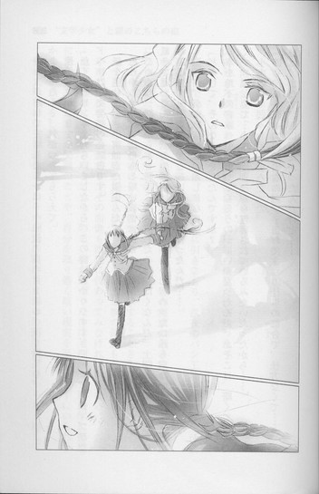
待ち人が訪れて安堵したように──眼鏡の奥の目を細め、淡く微笑む。
「よかった......。気がついてもらえて」
遠子もにっこりする。
「たくさんヒントをもらいましたから。この詩はわかりやすすぎですよ、部長。ブラッドベリは、文芸部の必読書です」
紙を見せると、小南はまた微笑んだ。
それからすぐに、陰のある暗い表情になる。
「ごめんね。部室から本を勝手に持ち出したのは、ぼくなんだ。土曜と日曜に、台車に載せて運んだんだよ。この部屋は使われていないし、めったに誰も来ないから......先生の用事で、荷物を運んだときに、合鍵を作ったんだ......」
遠子が、小南を気遣う眼差しになる。
「どうして、そんなことをしたんですか？」
「本を地下の書庫へ引き取ってもらうのが、いやだったんだ。あそこは、暗くて、冷たくて、寂しくて......本も生きながら埋葬されているみたいだったから......」
小南の声は弱々しく、虚ろだった。
「ぼく、来月熊本に転校するんだ。......お父さんの仕事の都合で、仕方なくて......。本当は、まだ文芸部にいたかったんだけど......」
苦い痛みとともに、報告書の内容を思い出す。
小南の父親は、小さな印刷工場を経営していた。
それが不況のあおりを受けて倒産し、多額の借金だけが残った。
真面目で勤勉だった父親は、暗い部屋に引きこもり、深夜のパン工場で細々と生活費を稼いでいた母親は、体を壊して入院してしまった。
そんな行き詰まった状況の中、小南の一家は、母親の実家のある熊本へ引っ越すことになったのだ。
おそらく今の経済状態では、小南は地元の大学に進学することさえ厳しいだろう。
五十近い父親も、再就職の見通しは立っていない。母親の体調も万全ではない。
小南には小学生の弟がいる。その面倒も両親に代わってみなければならない。
地下の書庫に本を引き取ってもらうのを、彼が嫌がったのは、明かりもつけずに部屋に閉じこもったままの父親のことや、自分を取り巻く暗い現実を思い出さずにいられなかったからかもしれない。
せめて本だけは、夕暮れのやわらかな光に満たされたこの部屋へ、ひっそりと隠しておきたかったのではないか。
──なつへは、つれてゆけない。
ならば、せめて十月の秋の国へ。
そう思ったのではないか。
昨日、薄闇の中から台車を押して現れた小南は、ひどく疲れ果て、哀しげだった。
「転校することは、前からわかっていて......。どのみち部活は続けられなかったんだ」
小南がうつむいたまま、声を絞り出す。
「本当にごめん、天野さん。きみに無駄なことをさせちゃった」
他人の心情なんて、知ったこっちゃない。
傷つくほうが、弱いのだ。自分の心は自分で守るしかない。
なのに気持ちが重くなる。
ここ数日の遠子の調査は、完全に徒労だった。
小南の告白に、遠子はどんな反応を返すだろう。
怒り？
それとも哀しみ？
目の前で、猫の尻尾のような黒い三つ編みが揺れたのは、そのときだった。
遠子が小南のほうへ歩み寄る。息をのむ彼の両手を、そっと握り、清らかな花のように微笑んだ。
「無駄なんかじゃありません」
知的に澄んだ瞳が、小南の目をのぞきこむ。うろたえる小南に、明るい声で断言する。
「だって先輩が、本をとっても愛していることが、よーくわかったんですもの！
全然無駄なんかじゃないわ！」
小南の目が、ますます驚きに見開かれる。頬が、赤く染まる。
「先輩が大事に守ってきた本は、わたしがちゃんと受け継ぎます。そうして、ブラッドベリや、ティプトリーや、ハインラインを読むたび、先輩のことを思い出します」
心のこもった眼差し、信頼にあふれた声。
雲間から幾筋もの金色の光が射すように、小南の表情が、どんどん明るくなってゆく。
「ねぇ、だから先輩も、『十月はたそがれの国』や『夏への扉』のページをめくるとき、先輩が守ろうとした本のことや、文芸部のことを思い出してください」
小南が目に涙をにじませ、泣き笑いする。
「『夏への扉』だけは、記念にもらっちゃったんだけど、返したほうがいいかな」
「かまいません。文芸部の新しい部長のわたしが、特別に許可します。餞別にもってってください。たくさんの本の中から、その本を選んだ先輩の未来には、きっと夏へ続くドアがあるはずですよ！」
それは、事情を知らない人間の、楽観的すぎる言葉に過ぎなかった。
小南の周りでは、冷たい冬の景色が続くだろう。
なのに、遠子のその言葉を聞いて、小南が顔いっぱいに明るく笑うのを、あたしは胸を高鳴らせて見ていた。
遠子は、小南の未来に祝福を贈り、彼がこれから進む先に、希望の光を灯したのだ。
小さいけれど優しい、愛らしい光を。
「ありがとう、天野さん。きみが文芸部へ来てくれてよかったよ」
◇ ◇ ◇
翌日、遠子はボート部の連中に、深々と頭を下げた。
「疑ってごめんなさい。わたしが悪かったわ。部室もすぐに出ていくわ」
「い、いや！ そのっ！ わかりゃあいいんだ」
「あ、ああ！ 俺たちも、文芸部に悪意があるわけじゃねーんだぜ！俺たちにできることがあれば、なんでも言ってくれ」
つい先日まで横柄な態度を取っていた連中が、大きな体をもぞもぞさせ、急にしどろもどろになる。
とたんに遠子はぱっと顔を上げて、頬を輝かせた。
「本当！ ありがとう！ じゃあ、お引っ越しを手伝って！」
ちゃっかり屋の文学少女に、完全に懐柔されたボート部の協力で、引っ越しはあっという間に終わった。
文芸部の机も本棚も、三階の西の隅の資料室へ運び込まれ、代わりに、そこに積んであった荷物は、ボート部の部室になった元文芸部へほとんど移動した。
「うちの部屋のほうが、ず────っと広いから、気にしないでくれ」
「そうそう、もともとこっちには大して備品もないし」
「ありがとう！ ボート部の人たちって、すごく頼りになるわ！」
「いやあ、それほどでも、わははは」
まったく、これだから男は......。古風な三つ編みの美少女に感謝されて、彼らは幸せそうだった。
一方、遠子も、新しい部屋でにこにこしていた。
「ここを、文芸部の部室にするわ。新生文芸部のはじまりね」
「生徒会へは、事後承諾なんでしょう」
「ええ、頑張って交渉するわ。部員も確保しなくちゃ」
からりと言い放つ遠子は、どこまでも前向きだ。
「ねぇ姫倉さん。前に、ドアを開けても、そこから出ていかないかぎり景色は変わらないって言ったでしょう？冬が終わるまで、部屋の中でじりじりしながら、無駄で退屈な時間を過ごさなきゃならないって。
けどね、わたしは、ドアのこちら側から外の景色を眺めて、あれこれ想像しながら過ごすのも、楽しいと思うの。
それは、絶対に無駄な時間なんかじゃない」
時刻は、黄昏時だった。
窓からこぼれる蜂蜜のように甘い金色の光が、微笑む遠子の頬を、髪を、首筋を、優しく包む。
息ができず、苦しいような気持ちで見つめるあたしに、遠子があたたかな眼差しで続きの言葉をつぶやく。
無駄なことなど、なにもないのだと。
今、あたしたちがいる、安全で退屈なこの時間は──。
「至福の──時間よ」
胸に染みこむ、甘い、甘い、声。
澄んだ瞳。
やわらかな唇。
すべてに目眩がし、世界が優しい花の香りの中で、形を変えてゆくような気がした。
「さて、生徒会へ行ってくるわ」
軽やかな足取りでドアへ向かう遠子に、あたしは言った。
「それより、もっと上の人間を陥落すべきよ。そっちのほうが手っ取り早いわ」
「上の人間って？」
「たとえば教頭の新庄とか。彼はコレットの小説の大ファンなの」
「コレット？ 『青い麦』の著者で、フランスの女流作家の？」
あたしは、にやにやしながら言った。
「ええ。コレットの話をすれば、たちまち上機嫌よ。試してみて」
遠子は怪訝そうな顔をしていたが、「わかったわ。教頭先生ね。アタックしてみるわ」と言って、部屋から出ていった。
コレットちゃんは、新宿のクラブで働く外国人留学生だ。三十近くも歳の離れた今どきの女の子に、教頭は入れあげ、マンションの家賃まで払って世話をしている。
もちろん、彼の家族も、同僚も、そんなことは知らない。
秘密の愛人の名前を出されて、教頭はさぞ慌てるだろう。その様子を想像して、あたしは夕暮れの光に満たされた部屋で、一人笑った。
◇ ◇ ◇
翌日、昼休みに遠子のほうから、アトリエへやってきた。
「あの部屋を、文芸部の部室にしてもいいって！それに、人数が少なくても、部を存続させてくれるって！コレットの話、すごぉぉぉく効果があったわっ。教頭先生、感激して泣きそうな顔で聴き入っていたわ。忙しかったみたいで、すぐに話を打ち切っちゃったけれど、わたしが部屋を出るときも、名残惜しそうに、じっと見送っていたわ」
あたしはすまして言った。
「そう、それはよかったわね。また話し相手になってあげるといいわよ」
「ありがとう。わたし、あなたのこと誤解していたみたい。これからは、姫倉さんじゃなくて、麻貴って呼ぶわ。わたしたち、きっといいお友達に......」
頬と唇をほころばせて、見上げてくる遠子。
ええ、友達になりましょうと、あたしが言えば、小さな顔一杯に、まばゆい笑みが広がるだろう。
それはとても甘い、わくわくする想像だった。
けど、あたしはもっと強欲なのだ。
その程度じゃ満足しない。単なる仲良しなんて関係、望まない。
遠子の笑顔はとびきり魅力的だけど、あたしだけが引き出せる、もっと別の顔を見てみたい。
だからあたしは、遠子の言葉を最後まで聞かずに、腕をつかんで細い体を抱き寄せ、遠子の胸に唇を押し当てた。
「！」
遠子が硬直する。
ほのかなぬくもりを制服越しに感じながらそっと息を吸い込むと、花の香りがし、びくっと震えたのがわかった。
顔を傾けて怪しく仰ぎ見る。
すると、目をむいて口をぱくぱくさせていた。
「な、なななな......な......」
そのままの体勢で、ゆっくりと唇を吊り上げる。
「おまじないをかけたの。これ以上、ふくらまないようにって」
遠子がとんでもないというように、顔を引きつらせる。
「覚えておいて、あたしはタダで情報提供はしないわ。これは、今回の情報の〝代償〟よ」
薄い胸をつつくと、慌てて飛びのき、首まで赤くした。
「やっぱり、変態っっっ！ 不潔っっっ！
二度と、近づかないで────っっ！！！！」
眉を吊り上げ、目を尖らせ、頬をふくらませた表情が、なんて愛らしいのだろうとぞくぞくしながら、あたしは片目をつむった。
「おかげで、楽しい学園生活が送れそうよ。あ、ヌードの件もよろしくね」
その言葉に、遠子はますます嫌悪感と不快感をあらわにし、「死んでも脱がないんだから～～～！」とわめいたのだった。
もう、アトリエも、前ほど息苦しくはない。
あたしは十五歳で、今はこの場所にとどまるしかないけれど、きっとそれも必要なことなのだろう。
そう、文学少女が言っていた。
今は、至福の時なのだと。
ならば腐ってないで、目一杯味わうしかない。
近いうちに、この場所で、彼女をモデルに絵を描こう。
頬をぱんぱんにふくらませて、三つ編みの先を振り立てて出てゆく仔猫を、あたしは晴れ晴れとした気持ちで見送った。
きっと、そのドアは、いつか夏へ通じる。
◇ ◇ ◇
今、アトリエには、遠子の肖像画が飾られている。
卒業してからも、あたしはときおりこの場所を訪れて、彼女のことを思い出しながら、絵を描いた。
あの三年間は、確かに至福の時──そして、雌伏の時だった。
今のあたしは、自由にどこへでも行ける。好きな場所で絵が描ける。なのに、この場所が恋しくなって、つい訪れてしまう。
文学少女は、もういないのに......。
彼女の選択は、不器用すぎるように思えた。恋愛に関して、彼女はひどく古風な考えを持っていて、それがあたしには、もどかしくもあった。
けどきっと、彼女は彼女の大切なもののために、それを選んだのだろう。
最後まであざやかに微笑んで。
それは、とても彼女らしい気がした。
アトリエの窓からこぼれるやわらかな金色の夕暮れの中、子供をあやしながら、去っていった文学少女のことを想う。
ねぇ、遠子、あたしは、夏の国にいるのよ。
〝文学少女〟と浮気な預言者
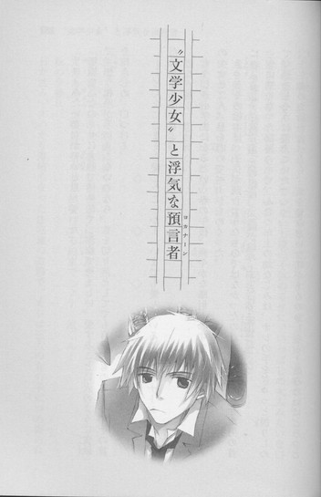
サロメみたいな女がいいと思っていた。
無垢な乙女のくせに大胆で情熱的で、潔癖で勇ましい。愛することに火のように貪欲で、想う相手が手に入らないのなら、首を切り落としてでも自分のものにする。その首を抱きしめ、口づける。
──どんなにおまえを愛したことか！ いまでも愛しているよ、ヨカナーン、おまえだけを愛しているよ。
もうじき小学生になるという春の午後。爽やかな陽射しの中で、姉のような三つ編みの少女と二人、息を潜めてページをめくった。
きっとその絵本は、子供が読むようなものではなかったのだろう。盾に載せた男の首に唇を寄せる妖艶な少女の絵は、心臓が縮み上がるほど衝撃だった。
急に寒くなった部屋の中で、ふたつ年上の幼なじみは、オレの手をぎゅっと握りしめて、恐ろしそうに震えていた。
「......このお話を食べたら、ザクロみたいな味がするのかしら......血みたいにどろっとして、酸っぱいのかしら......人を愛するって......とっても、怖いことなのね」
愛の意味なんて全然わかっていない七歳の子供のくせに、いっぱしの大人みたいな口をききながら、半べそをかいている。
そんな彼女の手を強く握り返しながら、熱く痺れてゆく頭で思った。
人を愛するというのは、なんて甘いのだろうと。
ヨカナーンみたいに、愛されたい。
首を切られ、口づけられたい。
誰より強く、想われたい。
ああ、そうしたらもう、死んでもいい。
◇ ◇ ◇
「流は、あたしと映画に行くのよ！」
「なに言ってんのっ、あたしとライブに行くんだよっ！」
「えええっ、土曜日は奈々とお出掛けする約束でしょ？流くん！」
秋の夕暮れ。
日が沈み、すっかり薄暗くなった住宅地の道路で、オレは三人の女の子につめ寄られていた。
それぞれに違う制服を着た少女たちは、自分を選ばなかったら承知しないというように、眉を吊り上げて、オレを睨んでいる。
いいねぇ、この肌に突き刺さる緊張感。
こんな切羽詰まった険しい目を向けられると、オレはいつも背筋がぞくぞくして、たまらなくなる。
嫉妬は独占欲をかきたてる。
だから、もっともっと、オレのために争ってほしいと思うし、感情をむき出しにし、ライバルを蹴散らし叩き潰し、そのテンションのままオレに向かってきてほしいと思う。
いっそ他の女に渡すくらいなら殺してやると、オレの胸にナイフを突き立ててくれたら、完璧だ。
「ちょっと流！ なに、にやついてんのよ！」
「そうよ、はっきりして、流！ 誰とつきあうの！」
「奈々よねっ、流くん！」
女の子と遊ぶのは楽しい。
けど、なじられるのはもっと楽しい。気持ちが高揚し、頬がゆるむのが抑えきれない。
恨みがましく見つめてくるこの瞬間、彼女たちの目には、オレしか映っていないから。
「じゃあ、四人で出かけようぜ。当日までに、もう二、三人増えるかもしんないけど、別にいいよな？」
「なっ──！」
三人とも目をむき、声をつまらせる。
オレは余裕の笑みを浮かべた。
さぁ、このあと、どう反応する？
期待に胸を高鳴らせ、待っていたそのとき。
「全然よくないわっ！」
背後で殺気がし、後頭部を平べったいもので殴られた。
「いいかげんにしなさい！ 流人！」
バシッ！ と音がし、目の裏に星がまたたく。
鞄を振り上げて仁王立ちしていたのは、ほっそりした体と、腰まで届く三つ編みの〝文学少女〟だった。
普通にしていれば、しとやかで優しげな美少女なのに、外灯に照らされた小さな顔には、ありありと怒りの色が浮かんでいる。まるで鬼のようだ。頭に角が見える。
「げっ、遠子姉」
のけぞるオレの耳を、細い指でつまんで、ぐいっと引っ張る。
「もう！ どうしてきみって、『好色一代男』の世之介みたいに、ふらふらしてるのっ！世之介みたく、色道修行でもしてるのっ？好色丸で女護の島へでも行く気？」
「ああ、それいいな──って、痛っ、痛いっ、遠子姉、耳が千切れる」
「きみは、家でロマン・ロランの『ジャン・クリストフ』でも読んで、真摯な生き方を学びなさい」
「ええっ、あれ、やたら長くて、ぶ厚いのが四巻もある──いたたっ、痛いってば──」
遠子姉は、かまわずオレを引っ張ってゆく。
「ちょ、ちょっと！ 流をどこへ連れてくの？あなた、流のなに？」
「そうよ、いきなり出てきて、なれなれしすぎ！」
文句を言う女の子たちに、遠子姉は平らな胸を反らしてきっぱり告げた。
「わたしは流人の姉で、ご覧のとおりの〝文学少女〟よ。この子と真剣な交際をしたいなら、あなたたちの熱い想いを、原稿用紙五十枚に手書きでまとめて、わたしに提出してちょうだい。話はそれからよ」
あぁ、全員、ぽかんとしている。
オレはそのまま家まで、遠子姉に連行されていった。
「まったくもうっ、目を離すとすぐ女の子ともめてるんだから。幼稚園の頃から成長がなさすぎよ」
「それは、遠子姉のほうだろ。いっつも、いいとこで飛び出してきてさ」
──流たんをいじめちゃダメっ！
子供の頃、オレが女の子に囲まれていると、遠子姉が真っ赤な顔ですっ飛んできた。
オレがいじめられていると思ったらしく、今でも「小さい頃、流人はいじめられっ子で、わたしがさんざん庇ってあげたのに」と恩着せがましく言う。
もちろん、そんな事実は一グラムもない。
女の子に手をつかまれ、「流くんは、あたしと遊ぶのよ～」と左右から引っ張られていたらいきなり「流たんを放してっ！」と突き飛ばされて、その勢いでジャングルジムに頭をぶつけて、流血の惨事になったとか、そんな記憶しかない。
お節介でおっちょこちょいの、二歳上の幼なじみは、今オレの家に下宿していて、子供時代と変わらず、女の子たちを追い払い、オレに説教をかます。
もうオレのほうが、ずっと背も高いし、腕も太いし、力も強いのに......。
そんな風に思うとき、胸の奥がかすかに疼く。
それが、子供扱いされたくないという反抗心から来るものなのか、もうあの頃とは違うのだという郷愁から来るものなのか、その両方なのか、わからなかった。
遠子姉は頬をふくらませて、ぶつくさ文句を言いながら、制服のまま居間のテレビの前に膝をつき、ビデオをセットしている。
ニュースのグルメコーナーを録画しようとしているらしい。遠子姉のお気に入りの番組だ。けど、電子レンジもろくに扱えない機械音痴なので、リモコンを片手に悪戦苦闘している。
いつもは「お姉さまの命令よ」とオレにやらせるのに、説教をしている立場上、弱味を見せたくないらしい。
かたくなに背中を向け、「えーと、このボタンが......ぅうぅ、こっちかしら。あっ、あっ、はじまっちゃう」と、唸っている。
横顔が真剣そのものだ。
オレは手を伸ばし、遠子姉からリモコンを取り上げると、さっさと録画の操作をした。遠子姉が、びっくりしてオレを見上げる。
そのまま口をへの字にし、複雑そうに見ていたが、予約を完了し、「ほい」とリモコンを返すと、顔を少し赤らめ、花がぱっと開くように笑った。
「ありがとう、流人」
──ありがとう、流たん！
その顔に、ふいに子供時代の遠子姉が重なって、胸をつかまれる。
ああ、こういうとこも昔から変わらない。いくら怒らせても、べそをかかせても、こっちが手を差し出すと、その手をぎゅっと握り返して、晴れ晴れと笑ってくれる。
だから、遠子姉には一生敵わないと思う。
グルメコーナーがはじまると、遠子姉は膝を抱えて、楽しそうに鑑賞をはじめた。
レポーターが、穴子の天ぷらを頬張り味を語るのを、熱心に眺めながら、
「薄くて、さくさくした衣と、口の中で崩れてゆく熱々の穴子──これって、きっと十返舎一九の『東海道中膝栗毛』みたいな味ね。弥次さん喜多さんのやりとりが、おかしくて楽しいの。ハレの日にいただく庶民の味ねっ！」
と、嬉しそうにつぶやく。
遠子姉は、本を食べて生きている。
嘘みたいだけど、大マジだ。物心ついたときから、オレの隣で、『ムーミン谷の仲間たち』や『ロッタちゃんのひっこし』を指で千切って、ぱりぱりもぐもぐやりながら、
「おいし～、ロッタちゃんはミルクのキャンディーみたい。口の中でころころ転がすと、甘くて幸せな味が舌の上に、広がるの」
なんて舌たらずな声で言っていた。
あんまり遠子姉がうまそうに本を食うので、オレもいっぺんだけ真似して食べたことがある。けれど、シナモン味のドーナツの味がするはずの『エーミールと探偵たち』は、当然紙の味しかせず、がっかりしたものだ。
同じように、遠子姉にとってオレたちが普通に食べているパンや肉は、なんの味もしないらしい。
もちろん、このことは周りには秘密だ。
知っているのはオレと、オレの母親と、遠子姉の作家のあの......。
オレは遠子姉の横に腰をおろし、内緒の話をするように尋ねた。
「なぁ、心葉さん、その後どう」
「どうしたの？ 急に」
「ちょっとは進展したのかなーと思って」
「ええ、今は放課後みんなで、文化祭の劇の練習をしているわ」
そういうんじゃなくて、もっと色っぽい話を期待していたのだけど......遠子姉は、武者小路実篤の『友情』を上演するのだと、楽しそうに話している。
「心葉くんが脚本を書いたのよ。本当は、主役の野島も、心葉くんにやってもらいたかったんだけど、恥ずかしいから絶対嫌だって」
井上心葉という文芸部の後輩について語るとき、遠子姉ははにかむような優しい顔をする。壊れやすい大切なものを語るように、一言一言大事そうに、そっとつぶやく。
今日は心葉くんがこんなお話を書いてくれたのよ、とか。心葉くんがこんなことを言ったのよ、とか。
一日に何度も、心葉さんの名前を口にする。
そのたび目に、甘い感情がにじむ。
「心葉くんの野島、見たかったなぁ。大宮役の芥川くんは、心葉くんのクラスメイトで、すごく真面目で素敵な子なの。きっと心葉くんと、いいお友達になれるわ。
杉子は、ななせちゃんがやるのよ。ななせちゃんは今日、クッキーを焼いてきてくれたの。みなさんでどうぞって言ってたけど、本当は、心葉くんに食べてほしかったのよ。好きな人のためにお菓子を作る女の子って、可愛いわよね」
「遠子姉も、作りゃいいのに」
「ええっ、わたしはダメよ」
遠子姉が目を丸くし、慌てて手を振る。
「それに、わたしは文化祭が終わったら......」
途中で睫毛を伏せ、黙り込んでしまった。けど、それはほんのわずかの間で、すぐに顎をぐっと上げ、頬をふくらませ、年上ぶって言う。
「わたしのことはどうでもいいのよ。それより流人、きみのほうこそ高校生になったんだから、いつまでもサロメみたいな女の子がいいなんて言ってちゃダメよ。首を切り落とされちゃったら、ビデオの録画も蛍光灯の付け替えも頼めなくなっちゃうでしょう？」
そのまま話をそらしてしまった。
きっと遠子姉は、文化祭が終わったら、心葉さんから離れるつもりでいるのだ。
心葉さんが一人にならないように、心葉さんの力になれる人を周りに集めて、心葉さんにもう一度書く力を与えて──。
心葉さんにさとらせないよう、ひそやかに、自然に、天野遠子という存在を消し去ろうとしている。
そのほうが心葉さんのためだとか、もともと不純な動機で近づいたから、ずっと一緒にいる資格なんてないとか思っているんだ。
そんなんでいいのか？
いーや、ダメに決まってる！
胸の奥から、怒りに似た気持ちが込み上げてくる。
一体、どれだけの覚悟で、遠子姉が心葉さんの前で、本を食ってみせたと思ってるんだ！それほど惚れ込んだ作家で、しかも遠子姉の秘密を受け入れることができる相手が、そうそう見つかると思えない。
遠子姉の作家は、心葉さん以外にいない。
これまで遠子姉は、オレの色恋にさんざん口出ししてきた。だから今度は、オレが遠子姉と心葉さんを、くっつけてやる！
◇ ◇ ◇
「で？ あたしに協力しろって？」
姫倉のお姫様は、呆れているような視線をくれた。
聖条学園の敷地内にある音楽ホールは、最上階がお姫様のプライベートなアトリエになっていて、オレたちが会うのは、たいていそこで、校舎に闇が落ちる時刻だった。
「気にくわないわね、終わってすぐ、そういうこと言うの」
「甘いキスやピロトークがお望みなら、いっくらでもサービスするけど」
「いらない。おたくの口から出ると、安っぽいもの。他の女に、さんざん吐き散らした言葉なんて、キャンディーの包み紙より薄いわ。ぺらぺらよ」
乱れた制服を素早く直し、豊かに波打つ髪を手櫛で整えると、椅子に足を組んで腰かけ、スケッチブックを広げる。
そうして、ほとんど素っ裸で椅子を抱え込んでいるオレに、
「動かないで」
と命じ、デッサンに没頭する。裸体を描くことは絵の勉強になるそうだ。が、一分前まで抱きあっていた相手に対して、あまやかさのかけらもないのは、そちらのほうではないか。
いつもそうだ。会うたび、むさぼるように激しいキスをし、すべてを奪いつくす勢いで求めてくるのに、事が終われば突き放す。
一体、どういうつもりでオレとつきあっているのか、いまひとつわからない。夏に夜の池で抱きあったとき、麻貴ははじめてだった。いくらなんでも、嫌いな相手とそこまでしないだろう。
反面、麻貴の恋愛観は、オレの求めるそれと、根本的な部分で大きく異なっているんじゃないかとずっと感じていた。
オレは、恋がすべてだ。
好きな女に殺されるなら本望だし、それほどに愛されたいし、求められたい。一人の女に、がんじがらめに縛りつけられたい。
けど多分麻貴は、目的のために人を殺しても、恋のためには殺さない。束縛することも、されることも、憎んでいる。
麻貴とこうなったことは、遠子姉には言っていない。
きっと怒るだろうし、麻貴が黙っているので、オレも口を閉じている。
麻貴が遠子姉に話したら、オレも話すだろうけど、麻貴のほうはその気はまったくなさそうだ。
恥じらっているのではなく、この関係にいつか終わりが来ることを見定めていて、面倒を避けているように感じられて、オレとしては気にくわなかった。
遠子姉のことで協力を求めたのは、これを機に麻貴の内面に、もっと踏み込みたいと思ったからかもしれない。
「なぁ、あんた、学園では姫って呼ばれてて、万能なんだろ？モデル料代わりに力を貸してくんないかな」
動くなと言うので、上目遣いにおねだりする。麻貴はデッサン用の鉛筆を走らせながら、平然と答えた。
「嫌よ」
「なんで」
「結果が見えてるのに、不毛なことしたくないわ」
「遠子姉と心葉さんが、うまくいかないってコト？」
「あたしにはそう思えるわね」
「どこで判断したのさ、オレは、心葉さんのクラスメイトの〝ななせちゃん〟とかより、遠子姉のほうが、ずっと心葉さんに似合いだと思うけど」
「ええ、心葉くんは精神的に脆いところがあるし、依存心も強いから、遠子みたいな世話焼きで優しいお姉さんに守ってもらうほうが、同級生の女の子とつきあうより心地好いでしょうね」
「わかってんじゃん。だったら──」
オレの声を、麻貴が毅然と遮る。
「おたくは、わかってないわね。だ、か、ら、ずっと一緒にはいられないのよ」
バカにしているような口調で言われて、ムッとした。
「どういう意味だよ」
「女にだらだら甘えてばっかりで、成長のない男なんて、魅力ないってこと」
ますますカチンとくる。
「それは、あんたの好みだろ。本人同士が幸せなら、甘ったれ、大いに結構じゃねーか。遠子姉は胸はねーかもしんないけど、誰かさんと違って母性本能が強いんだよ」
「そうね、心葉くんが、よちよち歩きの赤ちゃんみたいに頼りなかったから、遠子は放っておけなくて、大事にしすぎちゃったのね。けど、もう手を離さなきゃいけない時期に来てるって、遠子も気づいているはずよ。でなきゃ心葉くんは、自立できないままだわ」
「遠子姉が、支えるさ」
「そう、愛情とか思いやりとか、口当たりのいい言葉で誤魔化しながら、この先も延々とおててを繋いで歩いてゆくわけね。なんて心あたたまる美しい光景かしら」
麻貴がせせら笑う。
「そうやって際限なく甘やかして、心葉くんをダメにするのね。二人でいたほうが、そりゃ楽しいでしょう。けど、一人きりで歩いてみなければ、わからないこともあるわ。平穏に甘んじていたら、決してつかめないものも。おたくの企みは余計なお世話だし、遠子は、そんなの望まないわ」
最後のほうだけ、憂鬱そうに目を伏せた。
遠子姉のことを考えていたのかもしれない。
「くっ、遠子姉のことは、オレのほうがわかってるさ。あんたより付き合い長いからな」
「そういう主張をするとこが、ガキなのよね」
「二歳上なくらいでエバるな」
「事実を言ってるだけ。どっちにしても、今のまま遠子と心葉くんが恋人同士になるなんて、あたしとおたくが、熱烈に愛し合って添い遂げるくらい、ありえないわ」
ああ、くそっ。そういうたとえかたをするか、この冷血姫は。オレが傷ついていると思ってねーだろ。どうせ、オレとの関係は一時の気まぐれだものな。
頭に血がのぼり、立ち上がった。
「もういい、あんたの力は借りない。オレ一人で、文化祭の間に遠子姉と心葉さんを恋人にしてやる」
「ふぅん、そんな奇跡が起きたら、おたくの言うことなんでもきくわよ」
「大きく出たな、お姫様」
「ええ。だって、失敗するに決まっているもの」
オレを見上げ、魅惑的に微笑む。危うく見惚れそうな、色っぽい笑みだった。対抗心が込み上げ、オレもふてぶてしく笑いかけた。
「その言葉、絶っっっ対、忘れんなよ。遠子姉と心葉さんが恋人になったら、ランプの魔神みたいに、なんでもきいてもらうからな」
「じゃあ、二人が恋人にならなかったら、おたくがランプの魔神になって、あたしの命令をきいてくれる？」
「ああ、いいぜ」
勢いのまま口走ったあと、ひょっとしたら陰謀好きの姫君の奸計にはまったのかもしれないとひやりとしたが、もう後には引けない。引く気もない。
「楽しみだな、文化祭が終わったら、なにしてもらおう。超ミニのスカートにフリルのエプロンで、ご注文はお決まりですか、ご主人様とでも言ってもらおうかな。そのあと、撮影会だな」
「なら、あたしは、執事のコスプレで、給仕でもしてもらおうかしらね」
賭は成立。
窓の向こうに浮かぶ月が、証人だった。
◇ ◇ ◇
文化祭当日。
オレは、いさんで家を出た。
どうやら劇がトラブっているらしく、昨日の晩、遠子姉はちょっと元気がなかった。部屋へ行くと、椅子の上に体を丸めて体育座りし、考えに沈んでいた。
『なんか、あった？』
『......心葉くんが、劇に出たくないって』
『って、明日本番だろ。マズイんじゃねーの』
『大丈夫。ええ......きっと大丈夫よ。心葉くんは、戻ってきてくれるわ』
顔を上げてつぶやいてみせた遠子姉は、なにかを信じるように微笑んでいた。
校門で地図とプログラムを受け取り、チェックしながら校舎へ向かう。
聖条学園は生徒の人数が多く、敷地もだだっ広い。昨日までの雨がすっかりあがり、抜けるような青空が広がっている。客も多い。校庭に出店している屋台の呼び込みにも、熱がこもっている。
「そこのカッコいいお兄さぁん、たこ焼き、いかがですか～？」
ハッピを着た小さい女の子が、元気いっぱいのアニメ声で呼びかける。ふわふわした髪が、子犬みたいだ。
「はいはい、あとでね」
手を振って通り過ぎる。健全そうな子は、好みじゃない。
文芸部の劇は、午後からだ。遠子姉のクラスはカレー屋で、午前中はそちらでウェイトレスをすると言っていた。
心葉さんのクラスはマンガ喫茶で、麻貴のとこは......お化け屋敷!?
プログラムの文字を見て、ぎょっとする。
あの他人を見下したような偉そうな態度で、お岩さんとか、播州皿屋敷とかやるのか？髪をだらりと垂らして経帷子でも着れば、そりゃ迫力満点だろうが、見たいような、見たくないような......。
一瞬、麻貴のクラスへ行きたいという衝動にかられたが、とりあえず計画を実行するのが先だ。
シナリオは単純だった。心葉さんに、遠子姉が倒れて保健室で休んでいると伝えて、教室から引き離す。
一方で、遠子姉にも、心葉さんが気分が悪くなって、よろめきながら文芸部のほうへ歩いていったと伝える。
お互いが顔を合わせないよう、うまいこと擦れ違わせて、不安で心配でたまらない状況に追い込む。このとき、相手が自分のことを好きだと気づかせるような言葉を、一言二言、ささやいてやれば完璧だ。
そこではじめて再会させて、存分に意識させて、劇のあと告白まで持ってゆく。
誘導役は、オレが出ずっぱりだとバレバレなので、知り合いの女の子に協力してもらうつもりだった。幸い、その手の女の子には、不自由していない。
心葉さんを引っかけるなら、やっぱり三年生だな。遠子姉のクラスメイトだと言ってもらえば、信憑性が増す。
えーと、聖条で三年というと......。
廊下を歩きながら、知りあいの女の子を次々思い浮かべていると、名前を呼ばれた。
「流っ」
着物にエプロンをつけた、知的な雰囲気の美人が、手に小豆の入ったざるを抱えて立っている。
前につきあってた子だ。
しかも三年生。
条件にぴったりだ。
オレは、きみに会えたことが嬉しくてたまらないという笑みを作り、歩み寄った。
「久しぶり、倫子さん！ ちょうど、倫子さんのとこに行こうと思ってたんだ。着物、いいすね、和服喫茶のウェイトレスさんとか？」
倫子さんが頬を赤らめる。
けどそれは恥ずかしがっているのではなく、怒っているせいだということは、次の行動がしっかり証明していた。
なんと、小豆をわしづかみし、投げつけてきたのだ。
「わっ！」
いきなりだったので、よけられなかった。
まさか、前に会ったとき、とろけそうな顔で「あたし、流と一緒にいるときが一番幸せ」なんて、胸に頭を載せて、甘くささやいた相手が、節分の豆まきのように、小豆をぶつけてくるなんて、思わないだろう。
赤い粒が、頭や顔でばちばち弾け、廊下に落ちる。
周りで悲鳴が上がるが、倫子さんはおかまいなしに、オレに第二弾、第三弾の小豆爆弾をお見舞いしながら叫んだ。
「よくも、あたしの前に、しれっとした顔で出てこれたわね！この腐れオットセイ！」
「く、腐れオットセイ!?」
あまりの言われように絶句するオレに、小豆と一緒に舌鋒が突き刺さる。
「あたしのこと好きって言ったのに、西高の子とも桐鈴女子の子とも、慶王大の女子大生とも、花菱商事のＯＬとも、駅前の動物病院の女医ともつきあっているなんて、バカにしてるわ！一体、何股かけてんのよっっっ！」
「だって、オレ、他にもつきあってる子いるって言ったじゃん。そしたら、それでもいい、自分が本命になってみせるって」
攻撃の合間に、なんとか機嫌をとろうと試みるが、倫子さんはさらに顔を赤くし、鼻息を荒くした。
「まさか〝つきあっている子〟が、ねずみ算式にぼこぼこ増えてくなんて、想像してなかったわよ！あんたみたいなヘタレハーレム男と一時でもつきあったなんて、人生最大の汚点よっ！あーもう、二度とあたしに関わらないでっ！アザラシのぬいぐるみを見るたび、あんたを思い出して、尻尾をつかんで振り回したくなるのよっ！このセイウチ！トド！」
しまいには、ざるを高々とかかげ、それごとぶちまけようとする。オレは、慌てて逃げ出した。
階段を二段飛ばしに駆け下り、二階の廊下を人混みに紛れて走っていたら、肩がぶつかった。
「きゃっ」
「あ、すんません」
「ああっ、流！」
なんと、知り合いだった。
シャープな体型の中性的な美人で、白いジャージの下に、ブルーのレオタードを着て、手にロープを握っている。ああ確か新体操部だったっけ。試合を見に行ったことがある。
「偶然っ！ 明日美さん。これから演技でもすんの？だったらぜひ拝見しなきゃ」
最後まで言い終わらないうちに、首にロープを巻き付けられた。
「へ!?」
「死になさい、流」
「な、なに、急に──つか、ロープ交差させて引っ張るのやめ──く、苦しい──息が」
「～～～っ、次にあんたに会ったら、息の根を止めてやるって予告したの、忘れたの？ええ、あんたはそういうやつよっ！地球上の全女性のために、今ここで、あの世へ行っちゃえ！」
明日美さんは整った顔に青筋を浮かべて、ぐいぐい締めつけてくる。
愛され尽くして殺されるなら本望だけど、なんか違うっ。オレを睨む目には、嫌悪と憎悪しかない。ラブが見あたらない。
「うぐぐぐ......明日美さん、こういうプレイは嫌いじゃないけど、人前じゃマズイ」
「あんたが、そんなこと気にするほど繊細な神経の持ち主だって、はじめて知ったわよ」
「あぐっ！ せめて愛してるって言って。そしたら、気持ちよくなるから」
「苦しみ抜いて息絶えるといいわ！ この女の敵！」
明日美さんが鬼のような形相で、ロープを左右に思いきり引っ張る。
ヤバイ、これはマジに死ぬ！
危険を感じたオレは、ロープが首を締め上げる一瞬前に、明日美さんの腕をつかみ、唇にキスした。
「！」
驚いた明日美さんの手から、力が抜ける。
周囲で、わっと、ざわめきが起こる。
次の瞬間、明日美さんは顔を真っ赤にし、憤怒の形相で、「絶対、殺す～～～～！」と叫んだが、そのときにはオレは、背中を向けて駆け出していた。
あぁ、その「殺す」に、あふれんばかりの愛さえあれば、オレは喜んで首でもなんでも、きりきり絞めさせるのに。
再び階段を駆け下り、廊下を突っ走り、さんざん校内を逃げ回り、どうにか明日美さんをまくことができた。
壁に手をつき、ぜいぜい息を吐いていると、
「りゅ、流くん......っ！」
〝占いの館〟と看板のかかった教室から、インドのサリーに身を包んだ、可愛らしい女の子が現れた。
この子も知り合いだ。
「ハァハァ......いいとこで会った、ルリ。悪ぃけど、なんか飲み物......」
青ざめていたルリが、「いやあああああああああ」と叫んだ。
なんだ!? 今度はなんなんだ！
ルリは廊下にしゃがみ込み、両手で顔を覆って、しくしく泣き出した。
「いやっ、いやいやっ、どうして来たの？ 流くん？ルリはもう、彼氏がいるんだよ。流くんと正反対の優しくて誠実な人で、流くんが浮気ばっかりしてること相談したら、『そんなくだらない男、やめちゃえよ。ルリには俺がいるだろ』って、言ってくれたの。なのに、どうして、今さら会いにくるの。そんなハァハァ息吐いて、ルリに迫るの？ルリの幸せを、踏みつけにするの～～～～」
「いや......会いに来たわけじゃ。それに迫ってなんか......」
ルリの泣き声が大きいので、人がどんどん集まってくる。
「なんだなんだ、痴話喧嘩か？」
「あー、あの人、さっき、女の子に首絞められてたのよ」
「えー、最低」
オレを非難する声に混じって、野太い声が轟いた。
「誰だ！ ルリを泣かせているのは！」
野次馬の間から、小山のようなごつい男が歩み出てくる。
「軍司くん！」
ルリが涙の粒を振りまきながら、彼氏のほうへ駆けてゆく。
おい待てっ！ こいつとつきあってるのか!?この動物園から直行したような、カバ似の男と！確かに、オレと正反対だけど。
彼氏が丸太のような腕で、ルリをしっかり抱き留め、オレを睨む。
「おまえっ、純情なルリを誘惑して、もてあそんで、ぼろ雑巾のようにして捨てた、鬼畜な元カレだな！」
「待った、ナンパしてきたのは、そっちなんすけど。それに、ぼろ雑巾とかそんなことは、まったく......」
「そうか！ ルリをゆすりに来たんだな！」
「って、オレの言葉、通じてる？」
「くぅぅ、なんて卑劣なやつだ！」
人語を解さない彼氏が、腕を振り上げてブルドーザーのように突進してくる。
「うわぁ！」
こうして、息も整わないうちから、またもや逃げる羽目になった。
「素敵ぃ！ 軍司くん！ さすがボート部のキャプテンねっ！流くんなんかより、千倍男らしくて、カッコいい！」
背中で、ルリのはしゃぎ声が聞こえて、落ち込んだ。
どうも今日はツイてない。
ようやく彼氏を振り切ったものの、マラソンのしすぎで膝が笑っている。
女難の相でも出てるんじゃないか。大人しく家へ帰ったほうがいいんじゃ──いや、麻貴との賭もあるし、そういうわけにはいかない。
時間もかなりロスしてしまったので、当初の予定を変更し、直接心葉さんのクラスを訪れることにした。
ところが、マンガ喫茶のどこにも、心葉さんの姿は見あたらない。
まさか、学校に来てないんじゃ！ 遠子姉が、心葉さんが劇に出たくないと言っているとか、話してた。
焦ってクラスメイトに尋ねると、
「井上くんなら保健室ですよー」
「えっ、どっか具合悪いの？」
「いえ、他の子の付き添いです」
「ありがと」
どうやら学校には来たらしい。が、なにか問題が発生している様子だ。
さて、どうしたものか......。思案しつつ、遠子姉のクラスのカレー屋へ行ってみた。
ふたつ先が倫子さんのクラスの和風喫茶なので、うっかり出くわさないよう、肩をすくめ顔を伏せ、こそこそ入店する。
「お帰りなさいませ！ ご主人様！」
カレーの香りが漂う店内で、エプロンドレスにカチューシャの女の子たちが、一斉に頭を下げる。
メイドのカレー屋なのか......。
四人がけのテーブルに案内され、メニューを広げつつ遠子姉を捜して店内を眺めていたら、隣の席の女の子のグループと目があった。
こういう場合、オレはいついかなるときも、親しみを込めて、にっこり笑いかけることにしている。
女の子たちが頬を染め、嬉しそうにさざめきあう。
「ねっ、ねっ、やっぱりカッコいい」
「声かけてみようよ」
内緒話が聞こえ、やがて三人はそわそわと立ち上がり、笑顔で近づいてきた。
「あのー、そっちのテーブルへ行ってもいいですか」
「もちろん、美人は大歓迎」
「やだー」
また、さざめきが起こる。女の子たちはオレを囲むように座った。
「大学生ですかぁ？」
「ううん、高一」
「えー、嘘だぁ」
「あたしたちのこと、だましてるでしょう」
「マジ、学生証見る？」
「見る見るー」
「うわあ、本当だぁ。高校一年生？ 年下ぁ？」
「櫻井流人くんって言うんだ」
「ねぇ、今日は一人で来たの？ ひょっとして、この学校に彼女がいるの？」
三人の声も瞳も、蜂蜜のようにとろけている。
萎えていた自信が、みるみる回復してゆく。ああ、いいな、この空気。やっぱりこうでなきゃ。
さっきまで最悪の星回りだったけれど、ツキが戻ってきたらしい。
と、そのとき、
「失礼いたします。ご注文はお決まりでしょうか、ご主人様」
愛想のない声に、顔を上に向けたオレは、あんぐりと口を開けた。
視界に映っているのは、信じられない光景だった。
姫倉麻貴が！
学園の理事長の孫が！
あの、傲岸不遜なお姫様が！
メイドの格好をしている！
あんまり驚いて、オレは目をむいたまま凝視してしまった。
エプロンの胸もとが盛り上がっているのが、エロい。普段ほどいている髪は、ゆるやかな三つ編みにしている。その似合ってなさといったら、まるで没落した貴族の姫君が、生活のため屈辱を噛みしめ、メイドに身をやつしているかのようだった。
麻貴は、不機嫌そうな硬い表情で、オレを見下ろしている。
文化祭で遠子姉と心葉さんが恋人になった暁には、ミニスカートにフリルのエプロンで、ご主人様と呼ばせてやると言ったけど、願いが半分くらい叶ってしまった。ふんわりしたスカートは膝下まで丈がある。が、それはそれで禁欲的な色気を感じる。
ひょっとして、オレは、夢を見ているのか？
だって、ここは、遠子姉のクラスだろ？
間違って、麻貴のクラスのお化け屋敷に来てしまったのか？
ようやく、喉の奥から掠れた声が漏れた。
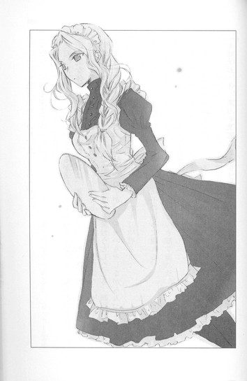
「......世にも恐ろしいものを、見ちまったぜ」
麻貴は、表情を変えなかった。
口も、むっつりと閉じたままだ。
ただ、スカートの裾をさっとひるがえし、オレの椅子を思いきり蹴った。
不安定な体勢でのけぞっていたオレは、見事に椅子から転げ落ちてしまった。
女の子たちが、きゃあと叫ぶ。
床に膝をついたまま、なにすんだよ！ と文句を言おうとしたとき、制服を着たカバ似の大男と、サリーをまとった小柄な女の子が、いちゃいちゃしながら入ってくるのが見えた。
やべっ。
ゴキブリのように膝でがさがさ移動し、椅子の後ろに隠れる。
「やーん、大丈夫？ 流人くん？」
三人組の一人が、声を張り上げオレの名を呼んだ。
ルリとその彼氏が、こちらをばっと振り返る。
二人ともたちまち顔を強張らせ、ルリは「いやあああっ」と悲鳴を上げ、彼氏は「ぬぅぅっ」と唸った。
「おまえはっ！ ルリの鬼畜な元カレ！ さては、オレたちを待ち伏せしてたのか！」
「ちょっと、今、流人って聞こえたけど！」
さらに、小豆の入ったざるを抱えた倫子さんが、着物の裾を乱し目を血走らせて、飛び込んでくる。
それだけじゃない、
「流人ですって！ あのろくでなしが、どうかした？」
ロープを握りしめた明日美さんまで、恨み骨髄という顔で現れた。
二人とも、どういう耳をしてるんだ！
それに彼氏！ 相変わらず勘違い全開だ！
「これ以上のストーカー行為は、ルリのナイトのオレが許さん！」
「まだ懲りないの！ 変態ハーレム野郎！」
「今度こそ、息の根を止めてやるわ！ この性犯罪者」
彼氏が椅子を持ち上げ振り回し、倫子さんが小豆を投げ、明日美さんがロープを鞭のようにしならせる。
さっきまでオレをうっとり見ていた三人も、「ハーレム野郎!?」「ストーカー!?」「せ、性犯罪者!?」と、ドン引きしている。
こんなとき頼りになるはずの麻貴は、呆れ果てた顔で肩をすくめると、さっさと背中を向け、奥へ引っ込んでしまった。
おいおい見捨てるのか、お姫様！ 戻ってこい！
いくら心の中で訴えても、二度と麻貴のメイド姿を拝むことはなかった。
カレー屋は混沌の坩堝と化し、彼氏が振り回した椅子で頭を殴られ、倫子さんの小豆を全身に受け、明日美さんのロープでしばかれ、周囲の冷たい視線を浴びながら、オレは廊下へ逃げ出した。
彼氏と倫子さんと明日美さんが、追いかけてくる。
ツキが戻ったと浮かれたのは大間違いだった。現在進行形で、大殺界のど真ん中だ！
人にぶつかりながら、とにかく必死に走って走って走り抜く。
椅子が直撃した後頭部がずきずきし、目眩がした。
ああ、なんでオレがこんな目にあうんだ。
倫子さんも、明日美さんも、ルリも、オレを愛していると言ったのに、オレのサロメになってくれなかった。
オレをとことん縛りつけ、首を切り落とし、独り占めするほどに愛してくれたら、オレも心から愛したのに。体も魂も捧げたのに。
やべ、なんかふらついてねーか？
さっき殴られたとこが、走ったせいで悪化して、洒落にならないことになってるような......。
焦っているうちに、頭の中が本格的にぐるぐる回りはじめ、目の前の景色がぶれた。
倒れる──！
そう思ったとき、引き戸の向こうから、白い手がすーっと伸びてきて、オレの腕をつかんだ。
しんなりした、冷たい手だった。
引き戸の隙間から見える教室は、昼間だというのに薄暗く、中から鼻を刺すような酸っぱい匂いがする。
目眩がますますひどくなり、オレは細い手に誘われるまま、闇の中へ崩れ落ちていった。
「流くん......やっとあたしのものになるのね」
そんな甘い声が聞こえた。
◇ ◇ ◇
どのくらいの間、意識を失っていたのだろう。
気がつくと、ホルマリン潰けのカエルやら、虫やら木の根っこやらが棚に並ぶ、部屋にいた。
ここは、生物室か？
黒いカーテンが窓を覆っていて、中はひんやりして薄暗い。外から、人のざわめきや足音が聞こえてくるのに、この部屋だけ別の空間に存在するかのように、冷たく静まり返っている。
オレは耐熱机に背中をあずけ、足を床に投げ出していた。
状況がよくわからず、ぼーっとしていると、湿った手が、ぺたりと頬に触れた。
驚いて横を向くと、セミロングのさらさらした髪の、清楚な雰囲気の女の子が、微笑みを浮かべてオレを見ていた。
聖条の生徒だろうか。制服の上に白衣をはおって、床に膝をついている。
体を動かそうとしたとき、後ろに回った手が、細い布で縛られているのに気づいて、ぎょっとした。
この子がやったのか？
「えっと、オレ、なんか縛られてるんすけど......」
「ええ、あたしが縛ってあげたの。ロープを探したけど見つからなくて......制服のリボンを使ったのよ」
細い声で、歌うようにささやく。
目も口調も、夢見るように危うげだ。
「なんで、そんなことすんの？」
「好きだから」
恥ずかしそうにつぶやくのに、ゾクッとした。
「流くんが、廊下の向こうから来るのを見たとき......息が止まるかと思っちゃった。神様が願いを叶えてくれたんだって。流くんに、あいたくて、あいたくて、死んじゃいそうだったんだもの」
「前にどっかで会ったっけ？ こんな可愛い子、忘れるはずないと思うんだけど」
女の子は目を伏せ、哀しそうに首を横に振った。
「ううん......あたしは流くんを、よぉぉぉく知ってるけど、流くんは、あたしのことなんて知らないわ。夏休みの前に、流くん、校門のとこでルリを待ってたでしょう？そのときはじめて流くんを見たの」
「ルリって、ユニークな彼氏のいる、あのルリ？」
尋ねながら、自由になる指を動かし、リボンをゆるめようと試みる。くそっ、結構固く縛ってあるな。
「そうよ。ルリは友達なの。だから、流くんの写真を携帯で見せてもらったし、毎日流くんの話を聞いたわ。
ルリがうらやましかった......。流くんみたいな人とつきあえて。他の友達は、流くんはすごい遊び人で、ルリの他にも彼女がたくさんいるから、別れたほうがいいって言ったけど、ルリは『そんなにライバルがいる中で、あたしが一番になれたら最高じゃない？』って笑ってたわ。
なのに、だんだん流くんのこと、悪く言うようになって、ボート部の男の子とつきあいはじめたわ。『流くんより、軍司くんのほうがずっと誠実で、ルリのこと大事にしてくれるもの』なんてのろけて。
ルリはひどいわっ。あんな男、流くんとは比べものにならない。動物園であくびしてるカバと、サバンナを走る野生の豹くらい違うのに！」
女の子は熱に浮かされたように、しゃべり続けている。
湿った手は、オレの頬に添えられたままだ。
「あたしはルリとは違う。永遠に流くんが好き。どんなときも、流くんだけを愛してる。流くんがあたしのことを全然見てくれないのが哀しかった。
ねぇ、あたしを見て、
あたしだけを好きになって、
あたし一人の流くんになって、
いつもそう祈っていたのよ。
けど流くんは、他の女の子にばかり笑いかけて、あたしに気づいてもくれなかった。
それならいっそ、流くんのこと殺して、あたしのものにしたいって......何度も何度も、同じ夢を見たの。そう、こんな風に──」
女の子が、白衣のポケットから銀色のメスを出す。それをオレの喉元にあて、切っ先を、すーっと動かす。
皮膚を切られたらしく、喉に冷たい感覚が走り、鈍い痛みが広がってゆく。
けれど、怖いとか、逃げようとか、かけらも思わなかった。
このとき、オレの胸に突き上げてきたのは、まぎれもない歓喜だった。
危険なほどに求められ、拘束され、愛されているという悦び。
背筋がぞくぞくと震え上がるような、心臓がばくばくと荒れ狂うような、至純の快楽！最高級のエクスタシー！
頭の中に、男の生首を抱きしめ口づける清純な少女の姿が浮かび、彼女の唇からこぼれるつぶやきが、隠微な悦びとともに、耳の奥に響き渡る。
──あたしは清浄で、無垢だった、だのにおまえはあたしの血を燃えあがらせた。
──ほかの男という男はあたしにはいとわしい。けれど、おまえは、おまえだけは美しかった！
──あたしはおまえを見てしまった、ヨカナーン、そしておまえを愛してしまった。
──ヨカナーン、ヨカナーン、おまえこそ、あたしの愛した、たったひとりの男であった。
子供の頃、二人で手を握り合って眺めた、秘密の絵本。
『人を愛するって......とっても、怖いことなのね』
震えながらつぶやいた、姉のような少女。
けど、あのときオレは、人を愛するのは、なんて甘いのだろうと思ったのだ。
ヨカナーンみたいにサロメに愛されたい。首を切られ、口づけられたい。そんな風に愛してくれる相手を、オレもまた命をかけて愛するだろうと。
ああ、やっぱり今日は、最高にツイている！
こんなに突然、夢が叶うなんて！
こんな風に、愛してくれる相手が現れるなんて！
オレの首にメスを押し当てている、名前も知らない少女を、気が狂いそうなほど愛しく思いながら、オレは微笑んだ。
「いいよ」
「え」
「オレのこと、殺したいほど好きなんだろ？ オレを自分だけのものにしたいんだろ？だったら、殺して」
かすみがかかっていた女の子の目に、驚きがにじむ。
その目を甘くのぞき込み、オレはますます優しく笑ってみせた。
「殺されてもいいよ、オレ」
「あ、あの......」
何故か、相手はうろたえている。
やはり好きな相手を殺すのは、相当な覚悟がいるのだろう。多少びびっても仕方ない。
「怖い？」
首をやわらかく傾けると、顔がくっつきそうなほど近づき、向こうが肩を跳ね上げる。
手首を縛っていたリボンが、ちょうどうまい具合にゆるみ、自由になった両手を前に出し、メスを握る手に優しく添えると、さらに目をむいた。
「！」
小鳩のように震える指を、オレは自分の手のひらでぎゅっと包み込み、励ました。
「大丈夫、オレも手伝う」
そのまま、喉に向かってメスを突き立てようとしたとき、
「いやあああっ！」
悲鳴が上がった。
何故か思いきり突き飛ばされ、耐熱机に頭がごつんとぶつかった。メスが澄んだ音を立てて、床に落ちる。
「ご、ごめんなさいっ、ごめんなさい、ごめんなさいっっっ！あたし、進路のことで悩んでて、危ない恋とか、そういう耽美だったり倒錯的だったりするのに憧れてて、わけわかんなくなってて、どうかしてたのよぉぉぉぉぉ！」
「って、ちょっと」
女の子が勢いよく立ち上がる。
「さよならっ、もう会わない。受験がんばるわ。思い出をありがとう」
白衣の裾をひるがえし、目に涙を浮かべ、部屋から飛び出していってしまった。
取り残されたオレは、床に尻をつけたまま、ぼ────ぜんとしていた。
ひょっとして、オレ、また振られた？
オレのこと、殺したいほど好きって言ったのに。
なのに、オレより受験かよっ！ オレは、英語や数学や、生物や古典に負けたのか!?
思い出をありがとうって、なんなんだ～～～～～～！
机にぶつけたところと椅子で殴られたところ、それに心がひりひり痛み、オレは深くうなだれた。
ああ、サロメが平凡な女子高生になっちまった。
波が引くように、全身から力が抜けてゆく。
もうダメだ。このまま化石になってしまいたい。
やっぱり今日は厄日だ。
オレ、本当はモテないんじゃ......。
ポケットからのろのろと携帯電話を出し、時間を確認する。そこで一気に目が覚めた。
マジ!? 劇終わってる！
窓の方を見れば、黒いカーテンの隙間から、夕暮れの光が差し込んでいる！
オレは慌てて立ち上がり、遠子姉を捜しに走った。
計画は、すでにめちゃくちゃだ。
けど、このまま遠子姉と心葉さんの間になんの進展もなく、文化祭が終わってしまったら、今日一日、さんざん罵られたり殴られたりした意味がない。
最後に大逆転があってもいいはずだ。
遠子姉は、教室で友達と話していた。
「と、遠子姉......！」
「流人！」
廊下から息も絶え絶えに呼びかけると、遠子姉が目を丸くする。
「どうしたの、流人？ お客さんは帰る時間よ」
「ちょっと来て」
「な、なにっ」
「大事な話があるんだ」
腕をつかんで、人気のない廊下へ引っ張ってゆく。
「流人、わたし閉会式が──話は家で聞くわ」
「今じゃなきゃ、ダメだ！」
強い口調で言うと、遠子姉は心配そうな顔になり、オレの喉にそっと手をあてた。
「なにかあったの？ この傷、どうしたの？」
「オレのことはいいんだ。それよか遠子姉、文化祭が終わったら、部活辞めんだろ」
息が苦しくなって、思いつくまま口走るオレに、遠子姉がおだやかに微笑む。
「辞めないわ。受験の間、ちょっとお休みするかもしれないけど」
「受験が終わったら、あとは卒業じゃないか。今のうちに、心葉さんに遠子姉の気持ちを、きちんと伝えとけよ」
遠子姉の顔から笑みが消えた。寂しそうな哀しそうな眼差しになる。
「なぁ、遠子姉は心葉さんを騙していたかもしれないけど、それだけじゃないだろっ。遠子姉が、どんな気持ちで心葉さんの側にいたか、打ち明けたっていいはずだ。オレ、心葉さんを連れてくるっ！遠子姉は、部室で待ってろ」
駆け出そうとするオレの手を、遠子姉がつかんだ。
驚いて振り向くと、遠子姉は優しい表情を浮かべ、首を横に振った。
「ありがとう。心配してくれて」
つぶやく声も、おだやかだった。
「でも、いいの」
「よくねぇ！ じゃあ、いつ言うんだよっ！」
胸が引きつるような気持ちで叫ぶ。
遠子姉はにこりと笑った。
「言わない」
──遠子は望まないわ。
道ばたに無言で咲く花のように、綺麗な、静かな、笑みだった。
オレを見上げる瞳には、哀しみだけでなく、凛とした決意があり、優しさがある。
喉が塞がり、目眩がした。
なんでだよ、なんで、笑うんだよっ。
手を離さなきゃいけない時期に来ているとか、遠子もわかっているとか、麻貴が偉そうに語るのを思い出して、悔しくて反論したい気持ちでいっぱいで──なのに、こんな目で、こんな顔で笑われたら、なにもできないじゃないかっ。
オレの手に触れている遠子姉の手は、あたたかくやわらかで、子供の頃、サロメの絵本をふたりでめくったときみたいに、震えていなかった。
いつからだろう。
幽霊が苦手で、超がつくほど怖がりな遠子姉が、怪談話をしてもオレにしがみついてこなくなったのは。
──流たん、お姉たんがいるから大丈夫よ。
口で強がっても、小学生の頃は、オレをぎゅっと抱きしめて、目を閉じて震えていた。
オレがいじめられていると勘違いして、流たんをいじめちゃダメと、女の子たちの前に手を広げて立ちはだかったときも、やっぱり怖くて、膝や肩が震えていたのだ。
なのに気がつくと、オレがどれだけ怖い話をしても、わざとホラーのＤＶＤを居間のテレビで流しても、くるりと背中を向けて耳をふさぎ、「やめてやめて」とべそをかくだけで、オレのほうへは来なくなった。
女の子たちにも、堂々と説教をかませるようになった。
そして今も、一人で哀しみに耐えている。
鼻の奥が熱くなって泣きそうになっているのは、オレのほうだった。
遠子姉は、優しく尋ねた。
「ねぇ、劇、見てくれた？」
「ゴメン、見れなかった」
「そう。ななせちゃんが急病で舞台に立てなくなって、わたしが杉子の代役をやって、心葉くんが野島をやったのよ。野島の最後の台詞は力がこもっていて、とってもよかったわ。心葉くんは、なにかひとつ吹っ切れたみたい。きっとこの先、もっと......成長するわ」
あたたかな声でつぶやき、
「じゃあね、流人。まっすぐおうちへ帰るのよ。寄り道して遅くならないようにね」
小さく手を振って、夕日に染まった廊下を、三つ編みを揺らして教室へ戻っていった。
◇ ◇ ◇
アトリエの隅で、ずいぶん長い間、膝を抱えていた。
体が冷え切り、尻が痛くなった頃、突然、明かりがついた。
「予告無しに来るの、やめてくれない？」
麻貴が、顔を見せるなり文句を言う。オーケストラ部のステージの後なのか、燕尾服を着ている。
「あたしが来なかったら、一晩中、そうしてるつもりだったの？」
「今日、ツイてねーもん。他の女のとこ行って、また振られたら、立ち直れねー」
「あたしも蹴り出すかもしれないわよ」
「お姫様が高飛車で感じ悪いのはいつものことだから、気にしねーですむし」
「ムカツクわね」
不機嫌そうに言いながら、麻貴はオレの前までやってきた。
「その様子だと、遠子と心葉くん、やっぱりダメだったみたいね」
「......」
オレは膝に顔をうずめた。
「遠子に、なにか言われた？」
「あんたの言ったとおりだった。遠子姉は、心葉さんにはなにも言わないって。それでいいんだって......笑ってた」
「......」
今度は麻貴が口をつぐむ。
「オレ本当に今日、最低だったんだ。つきあってた子に小豆ぶつけられて、あんたとつきあったのは人生最大の汚点だって罵られたり、ロープで首絞められたり、オレより今の彼氏のほうがずっと誠実で男らしいとか断言されたり、態度のでかいメイドに、みんなの前で、みっともなく転ばされたり」
「......」
「生物室に縛られて監禁されて、殺したいほど好きだって告白されて、有頂天になってみたら、受験だからもう会わないとか言われて、逃げてくし......。せっかくオレが、『殺していい』って言ったのにさ。やっと、サロメに会えたと思ったのに......」
話せば話すほど、心の中が空っぽになってゆくような寂しさに襲われる。
どうして、本当に欲しいものは、いつも手に入らないのだろう。
こんなにたくさんの出会いがあるのに、たった一人の運命の女は、オレのためには現れないのだろう。
「......オレだけのサロメなんて、この世にいないのかな」
闇に落ちてゆくような絶望。二人で堕ちる闇なら胸をしめつけるほど甘いけれど、一人で落ちる闇は、冷たく孤独なだけだ。
麻貴はまだ黙っている。情けないやつだと呆れているのかもしれない。
「......あんたも、いつかオレのこと、忘れるんだろう」
そのとき、耳元で麻貴の吐息を感じた。
「忘れないわ」
顔を上げる。
「記憶力はいいのよ。バカにしないで」
黒い燕尾服を妖しく着こなした麻貴が、目の前にしゃがみ込んでいた。
「おたくがサロメに会えないのはね、おたくが浮気なヨカナーンだからよ」
クールな眼差しで、にこりともせず言い放つのを、息を止めて見つめる。
「本物のヨカナーンは、神の声を伝える高潔な預言者よ。おたくみたいに、サロメの誘いに簡単に乗ったりしないわ。口づけを迫るサロメを見ようともせず、呪われた穢れた女と罵り、拒絶して、拒絶して、拒絶し通すのよ」
そう、サロメは清純な処女だったのに、神に仕えるヨカナーンは、サロメの真実に気づけなかった。
「だから......サロメは、ヨカナーンの首を切り落として、思いを遂げるしかなかったの。もうサロメを見つめることも、拒絶の言葉を口にすることもできなくなったヨカナーンの生首に、口づけるのよ。ヨカナーンが、出会った瞬間にサロメを口説くような軽薄な男だったら、サロメは殺してまで手に入れたいと思わなかったはずよ。逆に、自分に迫るへらへらしたヨカナーンを軽蔑して、逃げ出していたかもしれないわ」
浮気なヨカナーン。
ああ、確かにオレは誠実にも、神聖にもなれない。
オレのサロメに出会うまで、オレは、バカな求愛を繰り返すだろう。
麻貴がオレの唇に、濡れた唇を重ねる。
いつもの奪いつくすような激しい口づけではなく、ずいぶん優しい感触だった。
そんな慰めるようなキスを続けながら、リモコンで部屋の照明を落とす。
ほら......一人より二人でいたほうがいいことだって──二人でなきゃ感じられないことだって、ちゃんとあるじゃないか。
甘い甘い闇の中、やわらかな腕が、オレを赤ん坊のように抱きしめ、まぶたの上で、少しだけあたたかな声が、ささやいた。
「まぁ......しつこく探していれば、そのうち見つかるんじゃない。おたくを殺してくれる奇特な女が」
◇ ◇ ◇
後日。オレは執事の格好で、お嬢様の給仕をさせられていた。
「おいこら！ スケッチブック広げるな！ 描くな！」
「あら、いつも描いてるじゃない」
「裸はいいんだっ！ こんなクソ恥ずかしいカッコ描くな、ちくしょーっ」
「あたしの言うこと、なんでもきく約束でしょ。なのに、その汚い言葉遣いはなに？うちの屋敷でそんな口をきいたらクビよ」
「ああ、とっととクビにして、解放してほしいもんだね、お嬢様」
オレは悪態をつきながら、華奢なカップに紅茶をどぼどぼ注いだ。
麻貴は小憎らしい笑みを浮かべて、オレの恥ずかしい姿を描きとっている。
「この絵は、一生保管ものね」
くそーっ、ミニスカにエプロンで、サービスさせるはずだったのに。
「ほら、しっかり働きなさい、執事」
楽しそうに足で背中を蹴ってくる麻貴に、オレは神の声なんててんで聞こえないのに、預言をするのだった。
「今日のことは絶対忘れねー。次はオレのこと〝ご主人様〟って、呼ばせてやるからな！」
〝文学少女〟の今日のおやつ 特別編 ～『スノーグース』～
四月に入寮した天野遠子は、変わった子だ。
うちの寮は女子学生専門で、管理人を含めて七人の女性がそれぞれの部屋で、暮らしている。
木造建築の洋館は、古くさいという印象が一番に来る年代物で、あちこちガタが来ていて、歩くたびに板張りの床がみしみしと鳴り、窓はゆがんでいて閉めるのにコツがいり、しょっちゅうブレーカーが落ちる。
おままごとのような小さなコンロと流し、それにトイレが各部屋についていて、風呂とシャワーは共同、まかないナシ。家賃が安いだけが取り柄だ。
ちょうど一人が大学を卒業して部屋が空き、入れ違いにやってきたのが、遠子だった。
引っ越し屋のつなぎを着たスタッフが、重そうな段ボールを運び入れる後ろから、三つ編みの女の子が現れた。
春の訪れを告げるような淡いすみれ色のセーターに、デニムのロングスカートという格好で、自分も段ボールを抱えている。
「お客さん、荷物は自分が運びますから、いっすよ」
「いいえ、手伝います。それにわたし、本の重さは平気なの」
澄んだ声で軽やかに断言し、みしみし鳴る廊下を進んでゆく。
目があうと、花が開くように笑った。
「こんにちは！ 今日からこちらでお世話になる、天野遠子です。あとでご挨拶にうかがいますね」
会釈した瞬間、細い三つ編みが肩からこぼれた。
あたしは初対面の人間から慣れ慣れしくされるのは好きではないし、この一年、寮の誰とも親しく言葉を交わしたことはない。けれど彼女の笑顔や話し方は、ひどく親しげであるにもかかわらず、不快な感じはしなかった。
それより、目があったとき、向こうの目がほんの少し赤いことのほうが気になった。
まるで、泣きはらしたあとのような......。
なのに目の前にいる彼女の表情からも声からも、そんな様子はみじんもうかがえず、ひたすら明るく爽やかだった。
なので気のせいに違いない。でなければ、夜更かしでもしたのだろう。
まぁ、あたしには関係ないことだし、どっちでもいい。
適当に言葉を返して、離れた。
遠子はすんなり寮にとけ込み、他の住人たちとも仲良くやっている。ほっそりした綺麗な子で性格も明るいので、よく合コンに誘われているのを見かけた。『ね、カッコいい子、紹介してあげるから』『遠子ちゃんなら、モテモテだよ』『大学生になったんだから、遊ばなくちゃ』とか。
けど、遠子は断っているようだった。
相手が拍子抜けするような、清々しい笑顔で、
「ごめんなさい。わたし、読みたい本がたくさんあって」
と答えるのだ。これを聞いたとき、少々驚いた。
てっきり彼女も、合コンやデートに精を出し、授業やレポートは落第しなければ適当でいいと考えている、今どきの女子大生だと思っていたので。
「しかたないなぁ、遠子ちゃんは文学少女だから」
最後はみんな、笑って引き下がった。
大学生にもなって、〝少女〟はないと思う。だが、いつの間にか広まっていたその呼称は、遠子のどこか浮世離れした古風な雰囲気に、よくあっていた。
遠子とはじめてまともに話をしたのは、ゴールデンウイークに入ってからだ。
他の住人たちが旅行に出かけたり、実家に帰ったりする中、あたしはあたりまえのように寮に残っていた。そんなやつ自分だけだと思っていたら、寮の屋根裏の書庫で、
「あ......」
「設楽さん」
遠子とばったり出くわしたのだ。
そこは、洋館の持ち主の英国人の奥様が、本国から取り寄せた本を集めた部屋で、住人は好きに利用して良いことになっている。けど、この部屋で他の住人を見かけたことは、一度もない。
遠子は、一つだけある窓の横にぺたりと体育座りし、膝に本を載せて、ページをめくっていた。
窓から夕幕れの金色の光がこぼれ、部屋の中を舞う埃を、きらきらと輝かせていた。
本を読む三つ編みの少女は、まるで物語の中の住人のように見えた。
どこか切ないような、おだやかな優しい横顔が、余計にそう感じさせたのかもしれない。けど、こちらへ顔を向けた次の瞬間にはもう、晴れやかに笑っていた。
「この部屋、素敵ですよね！ わたし、この部屋を見学させてもらって、四年間こちらでお世話になろうって、決めたんです」
「......なにを読んでたの？」
「ギャリコの『スノーグース』」
遠子が愛おしそうに、英語で綴られた本を抱きしめる。
それから、心地のいい、やわらかな声で言った。
「『スノーグース』は、極上のソルベの味がするんです......。舌の上でそっと溶けて、喉をすべり落ちて、火照った心をさましてくれるような......。口の中に、清らかな冬の香りがいつまでも消えずに残っているような......」
目を細め小さく微笑む。幸せそうな笑み──なのに、やっぱりどこか寂しそうな......。
あたしは素っ気なく言った。
「個人的には、感傷的すぎて苦手だわ。──体が不自由な画家と、怪我をした白雁を治療してほしいと頼みに来た少女の、悲恋物語よね。画家はグロテスクな外見に引け目を感じて、少女に想いを伝えないまま、戦争に行ってしまうのだっけ」
遠子が、長い睫毛を伏せる。
「そうですね......。ラヤダーは確かに、自分が他のみんなと違うことに、引け目を持っていたかもしれない......。けど、彼がフリスに気持ちを伝えなかったのは、それだけが理由じゃないと思うんです」
目が少しだけうるんでいる。
「きっと......フリスのことが、大切でたまらなかったんだわ。ただフリスに幸せになってほしくて、それにはどうすればいいのか一生懸命考えて、なにも伝えずに一人で行ったんじゃないかって......」
そうして、うつむいたまま独り言のように、つぶやいた。
「本当に大切な気持ちは、口にしちゃいけない......墓場まで抱いていかなきゃ......」
ひょっとして彼女にも、ラヤダーにとってのフリスのような存在が、あったのだろうか。
寄り添うように側にいながら、決して想いを口にすることができなかった相手が。
自分自身よりも、大切な相手が。
遠子が首をのばして、微笑んだ。その表情にハッとする。
白い指で『スノーグース』のページをめくりながら、朗らかに遠子が言う。
「ラヤダーの魂が、最後にフリスにお別れの挨拶に来るところは、切なくて美味しくて、大好きなんです。日本語だと『いとしい人』とか『心の人よ』なんて訳されているけど、ここは原文の『my love』が、一番ラヤダーの気持ちが伝わってくるような気がします。──『Frith,my love.Good-bye,my love』──」
花びらのような唇から紡がれる、甘く切ない言葉。
『スノーグース』は感傷的で、最後の場面も醒めた目で文字を眺めていたはずなのに──。
『my love』という単純な言葉を聞きながら、中学生の頃に読んだ『スノーグース』のラストシーンが、あのときとは違う震えをともなって、頭の中に広がった。
夕焼けの空を舞う、一羽の白雁。
見上げる少女。
さよなら、いとしい人。
「きっと......会えなくなってやっと、ラヤダーはフリスに、好きと言えたんですね......」
夕暮れの光の中で微笑む遠子の眼差しは、切なく澄んでいた。
そんなことがあった翌週。
集合ポストの前で、遠子と会った。
「お帰りなさい！ 設楽さん！」
気さくに挨拶をし、ポストから手紙を取り出す。シンプルな白い封筒の差出名を見て、ハッとしたように目を見張った。
「彼氏？」
遠子が首を横に振る。
「お父さんのお友達で、お世話になっている人からです」
明るく答え、大事そうに手紙を胸に押しあて、歩き出した。
その晩、屋根裏へ行くと、遠子がスタンドをひとつだけつけて、手紙を読んでいた。
風呂上がりなのか、ほどいた黒髪が背中や肩に広がっている。窓の横に膝を抱えてしゃがみ込み、白い便箋をじっと見つめていた。
ドアの手前で、息をのみ足を止める。
何故なら遠子が、泣いていたから。
うるんだ黒い瞳から、透明な雫がぽろぽろこぼれ落ちている。それをぬぐおうともせず、ひたすら手紙の文字を見つめる遠子の唇は、ほころんでいた。
見ているだけで胸が締めつけられるような顔で泣きながら、幸福そうに笑っている。
嬉しくてたまらないことがあったように──。愛しくてたまらない人の言葉を聞いたように。白い頬に大粒の涙をいくつもいくつもこぼしながら、静かに微笑んでいる。
遠子が、なにかつぶやいた。男の子の......名前？
あたたかく澄んだ眼差しは、先週、『スノーグース』の話をしたときに見せた眼差しと同じだった。
──会えなくなってやっと、ラヤダーはフリスに、好きと言えたんですね。
手紙になにが書いてあったのか、遠子がここへ来る前、誰と別れて来たのか知らない。
けれど、フィリップ・ラヤダーが白雁の姿を借りて、愛する少女に呼びかける声が、遠子の唇から、今このとき、こぼれているようだった。
my love──心の人よ。
my love──いとしい人。
そうして、ラヤダーに応えるフリスの声も、澄んだ夜空の向こうから聞こえてくるような気がした。
'Philip,I love'ee.'
（あなたを愛しているわ、フィリップ）
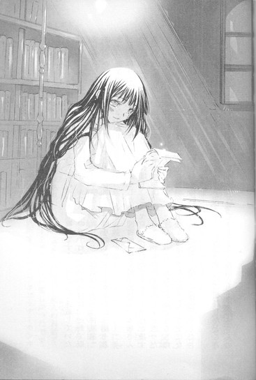
あとがき
こんにちは、野村美月です。〝文学少女〟、初の短編集です！ＷＥＢで連載していた〝おやつ〟や〝本棚〟が、いつの間にか貯まっていたのですね～。気がつけば、一冊で収まりきらない量になってしまいました。琴吹さんと森ちゃんのお話は、次の〝挿話集〟にまとめて収録する予定です。今回は、心葉や遠子周りのエピソードを中心に三編＋おまけの番き下ろしとなります。
ネタ本の『蟹工船』は、今年大ブームでしたね。図書館では全館予約待ち、本屋さんでは平積みで、これはぜひ書かなければ！とチャレンジしたのですが......原作が凄すぎて、大変苦労しました。コーチの仕打ちは、いくらなんでもやりすぎかなぁと思ったのですが、ネタ元はこんなものではありません！読んでいて、あちこち痛くなるし痒くなるし、匂ってくるし、滾ってきます！カムサツカ体操ってなんなんだ～と気になってたまらなくなります！この凄さを未体験の方は、ぜひご一読して体感してください。
ちなみに執筆にあたり、「どんな話にしましょう」と担当さんにご相談したところ「芥川くんのお話とかどうですか」と即座に返ってきました。芥川くん......担当さんの中で『蟹工船』なイメージなのですね。不憫すぎです（泣）。そんな不幸属性の彼に、少しでも幸せをあげたくて書いたのが、『～人魚』です。けどその......幸せなような、そうでもないような......。いえ、やっぱりちょっとは前進してますよねっ。
児童館のバイトは、私も学生時代にやっていました。美羽のように、子供たちに本や紙芝居を読んであげたりもしましたが、皆様気紛れで、「もういい。こっちの本読んで」と、しょっちゅう中断され、「お願い、待ってっ、ここからがいいのよっ、最後まで読ませて。ね？ね？」と、機嫌をとっておりました。少年漫画を差し出され「読んで」とねだられ、「えっと......じゃあ、一緒に読もう！」と、役を割り振って、声優さんゴッコに突入したこともあります。
暇なときは、ノートに小説を書き放題、館内の漫画読み放題という非常～～～～に美味しいバイトでした。古い作品がそろっていて、少年漫画の名作はほとんどこちらで読破しましたよ。ワンコたちが仲間を集めて凶暴な熊に立ち向かう某名作で、熱い展開に涙をこらえきれず、トイレに駆け込み、トイレットペーパーで鼻をかみまくりながらボロ泣きしたことも、良い思い出です。
『～姫』と『～預言者』はＷＥＢに掲載されたもので、それぞれ麻貴と流人のお話です。この二人は、本編の裏で進行しているストーリーを考えるのが楽しかったです。『～牛魔王』はムック本の掲載作でした。牛魔王は直訳するとバッファローデーモンキングだそうですよ。カッコいい～！牛園くんの話は一月のＷＥＢにも掲載の予定です。
ここから、お知らせ＆ご報告です。
〝文学少女〟画集『〝文学少女〟の追想両廊』、十二月十五日より発売中です！描きおろしの心葉＆美羽、遠子＆流人の子供時代が滅法可愛いので、ぜひぜひお買いあげください。私もちょこっとですが、大学生の心葉のＳＳを書いています。
また、ガンガンパワードさんと平行して、十二月よりビーンズエースさんで、新しい漫画連載『〝文学少女〟と美味しい噺』がはじまりました。こちらは心葉と遠子の日常のエピソードが中心になる予定で、作画は日吉丸晃さんです。男性キャラに色気があってドキドキですよ～。ビーンズエースさんは偶数月十日発売です！
そして、今回最大のご報告です。
今年の宝島社さんの『このライトノベルがすごい！』で、〝文学少女〟が作品部門で一位をいただきました！他、イラストレーター部門で竹岡さんが一位に！女性キャラ部門で遠子が一位、琴吹さんが四位、男性キャラ部門で心葉が五位という、驚きの結果に！担当さんからお知らせをいただいたときは、嬉しくて泣いてしまいそうでした。本編最終話を読んだ方たちが投票してくださったのだと思うと、本当にもう感謝の気持ちで一杯です。あらためて、このシリーズは皆様の応援があって、ここまで書き続けることができたのだと思いました。
次回は外伝です。心葉は三年生になり、新入部員の女の子が登場します。遠子との約束を守りながら頑張る心葉を、どうか見てあげてください。それではまた！
※作中、次の著作を引用、または参考にさせていただきました。
『はつ恋』ツルゲーネフ著、神西清訳、株式会社新潮社、昭和二十七年十二月二十五日発行、昭和六十二年一月三十日七十三刷改版／『更級日記現代語訳付き』原岡文子訳注、角川ソフィア文庫、株式会社角川書店、平成十五年十二月二十五日／『蟹工船・党生活者』小林多喜二著、株式会社角川書店、昭和二十九年九月十五日発行、昭和四十三年四月三十日改版、平成二十年八月二十五日新装改版／『小林多喜二』手塚英孝著、新日本出版社、二〇〇八年八月一〇日／『ファージョン作品集３ムギと王さま』エリナー・ファージョン著、石井桃子訳、株式会社岩波書店、一九七一年九月八日／『ダフニスとクロエー』ロンゴス著、松平千秋訳、株式会社岩波書店、一九八七年三月十六日／『日本の文学古典編２万葉集一』『日本の文学古典編４万葉集三』株式会社ほるぷ出版、昭和六十二年七月一日／『小川未明童話集』収録「赤いろうそくと人魚」小川未明著、桑原三郎編、株式会社岩波書店、一九九六年七月十六日／『夏への扉』Ｒ・Ａ・ハインライン著、福島正実訳、株式会社早川書房、一九七九年五月三十一日／『十月はたそがれの国』レイ・ブラッドベリ著、宇野利泰訳、（株）東京創元社、一九六五年十二月二十四日／『サロメ・ウィンダミア卿夫人の扇』オスカー・ワイルド著、西村孝次訳、株式会社新潮社、昭和二十八年四月十日発行、平成十七年八月十日四十九刷改版／『スノーグース』ポール・ギャリコ著、矢川澄子訳、王国社、一九八八年九月十五日／『白雁物語』ポール・ギャリコ著、古沢安二郎訳、株式会社偕成社、一九九〇年十二月／"The Snow Goose"Paul Gallico,Penguin Books,1967
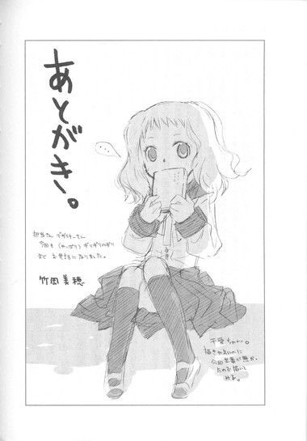
あとがき。
千愛ちゃん。描きやすいのに今回出番が無かったので描いてみる。
担当さんデザイナーさん今回も（やっぱり）ギリギリのギリまでお世話になりました。
初出一覧
「〝文学少女〟と恋する牛魔王」（「FBSPvol.2まかでみすぺしゃる」掲載）
「〝文学少女〟の今日のおやつ ～『更級日記』～」（「FBonline2007 年１号」掲載）
「〝文学少女〟と革命する労働者」（書き下ろし）
「〝文学少女〟の今日のおやつ ～『万葉集』～」
（「FBonline2008 年２号」掲載）
「〝文学少女〟と病がちな乙女」（書き下ろし）
「〝文学少女〟の今日のおやつ ～『ムギと王さま』～」（「FBonline2007 年６号」掲載）
「無口な王子と歩き下手の人魚」（書き下ろし）
「〝文学少女〟と扉のこちらの姫」（「FBonline2008 年６号」掲載）
「〝文学少女〟と浮気な預言者」（「FBonline2008 年８号」掲載）
「〝文学少女〟の今日のおやつ 特別編～『スノーグース』～」（書き下ろし）
底本：〝文学少女〟と恋する挿話集１
野村美月
二〇〇九年一月七日 初版発行
入力：
校正：鹿仔